import pandas as pd
import pyrsm as rsmPentathlon: Next Product to Buy Models
PROJECT SUMMARY
• Project Goal: Optimize profit by tailoring email campaigns for 7 departments to individual customers based on predictive modeling.
Modeling Approach:
• Logistic Regression: Utilized for its ability to predict the probability of customer engagement based on email content. • Linear Regression: Employed to predict average order size from each customer as a continuous outcome. • Random Forest: Chosen for its robustness and ability to capture non-linear patterns and feature interactions. • Neural Network: Applied to leverage its deep learning capabilities in identifying complex patterns within customer data. • XGBoost:Selectedforitse iciency,modelperformance,andabilitytohandleavarietyofdata types and distributions.
Model Training and Tuning:
• Conducted comprehensive training and hyperparameter tuning for each model to ensure op- timal performance. • Employed methods like cross-validation and grid search, particularly for computationally intensive models like Random Forest.
Profit Analysis: • Evaluated the predicted profit increase from each model to identify the most effective ap- proach. • Analyzed model-specific trade-offs, such as training time (e.g., Random Forest’s extensive training period).
Email Policy Evaluation: • Assessed the impact of each model on the email policy proposal to ensure alignment with profit optimization goals.
Data Preparation
## loading the data - this dataset must NOT be changed
pentathlon_nptb = pd.read_parquet("pentathlon_nptb.parquet")Pentathon: Next Product To Buy
The available data is based on the last e-mail sent to each Pentathlon customer. Hence, an observation or row in the data is a “customer-promotional e-mail” pair. The data contains the following basic demographic information available to Pentathlon:
- “age”: Customer age(coded in 4 buckets:“<30”, “30 to 44”, “45 to 59”, and “>=60”)
- “female”: Gender identity coded as Female “yes” or “no”
- “income”: Income in Euros, rounded to the nearest EUR5,000
- “education”: Percentage of college graduates in the customer’s neighborhood, coded from 0-100
- “children”: Average number of children in the customer’s neighborhood
The data also contains basic historical information about customer purchases, specifically, a department-specific frequency measure.
- “freq_endurance-freq_racquet”: Number of purchases in each department in the last year, excluding any purchase in response to the last email.
The key outcome variables are:
- “buyer”: Did the customer click on the e-mail and complete a purchase within two days of receiving the e-mail (“yes” or “no”)?
- “total_os”: Total order size (in Euros) conditional on the customer having purchased (buyer == “yes”). This measures spending across all departments, not just the department that sent the message
Note: In addition to the six message groups, a seventh group of customers received no promotional e-mails for the duration of the test (“control”).
pentathlon_nptb.info()<class 'pandas.core.frame.DataFrame'>
RangeIndex: 600000 entries, 0 to 599999
Data columns (total 16 columns):
# Column Non-Null Count Dtype
--- ------ -------------- -----
0 custid 600000 non-null object
1 buyer 600000 non-null category
2 total_os 600000 non-null int32
3 message 600000 non-null category
4 age 600000 non-null category
5 female 600000 non-null category
6 income 600000 non-null int32
7 education 600000 non-null int32
8 children 600000 non-null float64
9 freq_endurance 600000 non-null int32
10 freq_strength 600000 non-null int32
11 freq_water 600000 non-null int32
12 freq_team 600000 non-null int32
13 freq_backcountry 600000 non-null int32
14 freq_racquet 600000 non-null int32
15 training 600000 non-null float64
dtypes: category(4), float64(2), int32(9), object(1)
memory usage: 36.6+ MBpentathlon_nptb['buyer_yes'] = rsm.ifelse(pentathlon_nptb['buyer'] == 'yes', 1, 0)
pentathlon_nptb['buyer_yes'].value_counts()buyer_yes
0 585600
1 14400
Name: count, dtype: int64Check the training data and testing data, make sure they are splitted a 70-30 ratio
pd.crosstab(pentathlon_nptb["message"], pentathlon_nptb["training"])| training | 0.0 | 1.0 |
|---|---|---|
| message | ||
| backcountry | 26179 | 60425 |
| control | 26043 | 61217 |
| endurance | 24773 | 58083 |
| racquet | 26316 | 60772 |
| strength | 25251 | 59029 |
| team | 25942 | 60850 |
| water | 25496 | 59624 |
pentathlon_nptb.training.value_counts(normalize=True)training
1.0 0.7
0.0 0.3
Name: proportion, dtype: float64pentathlon_nptb.hist(figsize=(10, 10), bins=30)array([[<Axes: title={'center': 'total_os'}>,
<Axes: title={'center': 'income'}>,
<Axes: title={'center': 'education'}>],
[<Axes: title={'center': 'children'}>,
<Axes: title={'center': 'freq_endurance'}>,
<Axes: title={'center': 'freq_strength'}>],
[<Axes: title={'center': 'freq_water'}>,
<Axes: title={'center': 'freq_team'}>,
<Axes: title={'center': 'freq_backcountry'}>],
[<Axes: title={'center': 'freq_racquet'}>,
<Axes: title={'center': 'training'}>,
<Axes: title={'center': 'buyer_yes'}>]], dtype=object)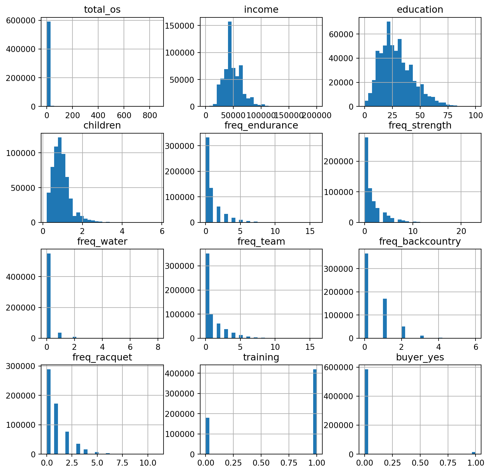
Logistic Regression Model
Check cross tab between the outcome variable and the key predictor variable
ct = rsm.basics.cross_tabs(pentathlon_nptb.query("training == 1"), "buyer", "age")
ct.summary(output = "perc_row")
ct.plot(plots = "perc_row")
Cross-tabs
Data : Not provided
Variables: buyer, age
Null hyp : There is no association between buyer and age
Alt. hyp : There is an association between buyer and age
Row percentages:
age < 30 30 to 44 45 to 59 >= 60 Total
buyer
yes 9.42% 40.74% 38.18% 11.65% 100.0%
no 17.7% 31.16% 32.42% 18.72% 100.0%
Total 17.5% 31.39% 32.56% 18.55% 100.0%
Chi-squared: 1038.94 df(3), p.value < .001
0.0% of cells have expected values below 5
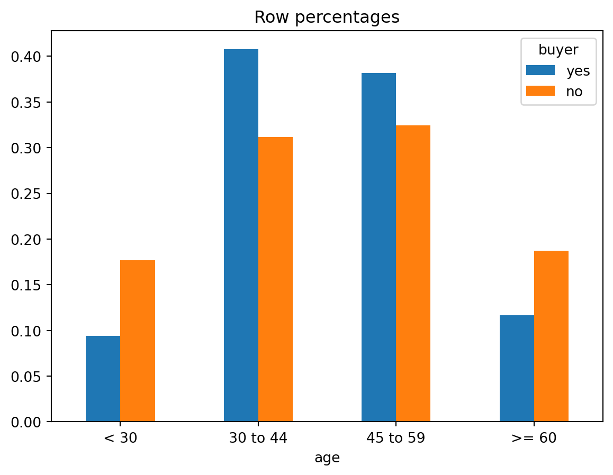
ct = rsm.basics.cross_tabs(pentathlon_nptb.query("training == 1"), "buyer", "children")
ct.summary(output = "perc_row")
Cross-tabs
Data : Not provided
Variables: buyer, children
Null hyp : There is no association between buyer and children
Alt. hyp : There is an association between buyer and children
Row percentages:
children 0.2 0.3 0.4 0.5 0.6 0.7 0.8 0.9 1.0 \
buyer
yes 1.58% 2.16% 3.52% 4.06% 5.13% 7.48% 7.55% 10.71% 10.63%
no 2.98% 4.2% 6.18% 7.23% 7.9% 10.42% 9.56% 10.81% 9.11%
Total 2.94% 4.15% 6.12% 7.15% 7.84% 10.35% 9.51% 10.8% 9.15%
children 1.1 ... 4.5 4.6 4.7 4.8 4.9 5.0 5.1 5.2 5.8 \
buyer ...
yes 9.74% ... 0.0% 0.0% 0.0% 0.01% 0.0% 0.0% 0.0% 0.0% 0.0%
no 7.18% ... 0.0% 0.0% 0.0% 0.0% 0.0% 0.0% 0.0% 0.0% 0.0%
Total 7.24% ... 0.0% 0.0% 0.0% 0.0% 0.0% 0.0% 0.0% 0.0% 0.0%
children Total
buyer
yes 100.0%
no 100.0%
Total 100.0%
[3 rows x 53 columns]
Chi-squared: 2028.29 df(51), p.value < .001
700.0% of cells have expected values below 5
ct = rsm.basics.cross_tabs(pentathlon_nptb.query("training == 1"), "buyer", "message")
ct.summary(output = "perc_row")
ct.plot(plots = "perc_row")
Cross-tabs
Data : Not provided
Variables: buyer, message
Null hyp : There is no association between buyer and message
Alt. hyp : There is an association between buyer and message
Row percentages:
message backcountry control endurance racquet strength team water Total
buyer
yes 13.97% 13.27% 15.37% 13.77% 14.85% 14.58% 14.19% 100.0%
no 14.4% 14.61% 13.79% 14.49% 14.03% 14.49% 14.2% 100.0%
Total 14.39% 14.58% 13.83% 14.47% 14.05% 14.49% 14.2% 100.0%
Chi-squared: 39.15 df(6), p.value < .001
0.0% of cells have expected values below 5
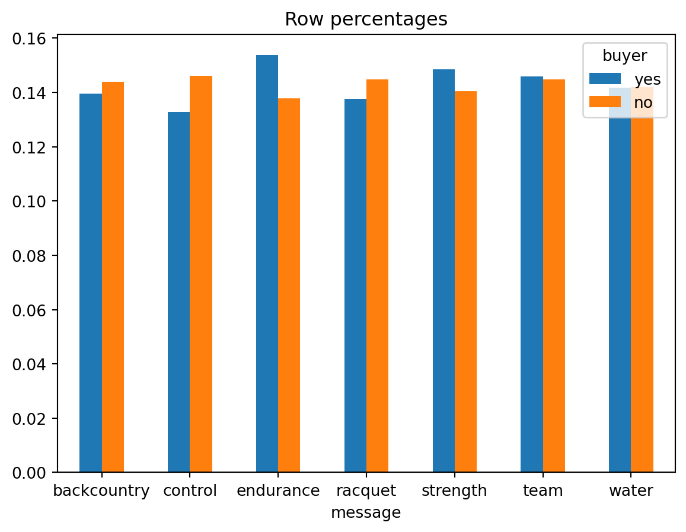
ct = rsm.basics.cross_tabs(pentathlon_nptb.query("training == 1"), "buyer", "freq_endurance")
ct.summary(output = "perc_row")
Cross-tabs
Data : Not provided
Variables: buyer, freq_endurance
Null hyp : There is no association between buyer and freq_endurance
Alt. hyp : There is an association between buyer and freq_endurance
Row percentages:
freq_endurance 0 1 2 3 4 5 6 7 \
buyer
yes 24.2% 16.15% 14.66% 12.23% 9.58% 7.76% 5.24% 3.76%
no 56.16% 22.7% 10.21% 5.33% 2.82% 1.42% 0.72% 0.34%
Total 55.4% 22.54% 10.32% 5.5% 2.98% 1.58% 0.83% 0.42%
freq_endurance 8 9 10 11 12 13 14 15 Total
buyer
yes 2.56% 1.72% 0.97% 0.57% 0.34% 0.14% 0.11% 0.02% 100.0%
no 0.16% 0.08% 0.03% 0.01% 0.01% 0.0% 0.0% 0.0% 100.0%
Total 0.22% 0.12% 0.05% 0.03% 0.01% 0.01% 0.0% 0.0% 100.0%
Chi-squared: 21259.53 df(15), p.value < .001
150.0% of cells have expected values below 5
ct = rsm.basics.cross_tabs(pentathlon_nptb.query("training == 1"), "buyer", "freq_strength")
ct.summary(output = "perc_row")
Cross-tabs
Data : Not provided
Variables: buyer, freq_strength
Null hyp : There is no association between buyer and freq_strength
Alt. hyp : There is an association between buyer and freq_strength
Row percentages:
freq_strength 0 1 2 3 4 5 6 7 \
buyer
yes 21.4% 9.33% 9.92% 8.99% 8.33% 8.32% 6.73% 6.43%
no 46.85% 18.9% 11.59% 7.77% 5.32% 3.54% 2.26% 1.51%
Total 46.24% 18.67% 11.55% 7.8% 5.4% 3.65% 2.37% 1.63%
freq_strength 8 9 ... 15 16 17 18 19 20 \
buyer ...
yes 5.1% 4.09% ... 0.65% 0.51% 0.23% 0.25% 0.11% 0.1%
no 0.94% 0.55% ... 0.02% 0.01% 0.01% 0.0% 0.0% 0.0%
Total 1.04% 0.64% ... 0.03% 0.02% 0.01% 0.01% 0.0% 0.0%
freq_strength 21 22 23 Total
buyer
yes 0.04% 0.05% 0.01% 100.0%
no 0.0% 0.0% 0.0% 100.0%
Total 0.0% 0.0% 0.0% 100.0%
[3 rows x 25 columns]
Chi-squared: 22032.18 df(23), p.value < .001
300.0% of cells have expected values below 5
ct = rsm.basics.cross_tabs(pentathlon_nptb.query("training == 1"), "buyer", "freq_water")
ct.summary(output = "perc_row")
Cross-tabs
Data : Not provided
Variables: buyer, freq_water
Null hyp : There is no association between buyer and freq_water
Alt. hyp : There is an association between buyer and freq_water
Row percentages:
freq_water 0 1 2 3 4 5 6 7 8 \
buyer
yes 64.79% 18.38% 9.3% 4.7% 1.88% 0.66% 0.21% 0.06% 0.01%
no 92.53% 5.72% 1.33% 0.32% 0.08% 0.01% 0.0% 0.0% 0.0%
Total 91.87% 6.03% 1.52% 0.42% 0.12% 0.03% 0.01% 0.0% 0.0%
freq_water Total
buyer
yes 100.0%
no 100.0%
Total 100.0%
Chi-squared: 16794.94 df(8), p.value < .001
125.0% of cells have expected values below 5
ct = rsm.basics.cross_tabs(pentathlon_nptb.query("training == 1"), "buyer", "freq_team")
ct.summary(output = "perc_row")
Cross-tabs
Data : Not provided
Variables: buyer, freq_team
Null hyp : There is no association between buyer and freq_team
Alt. hyp : There is an association between buyer and freq_team
Row percentages:
freq_team 0 1 2 3 4 5 6 7 8 \
buyer
yes 39.2% 10.78% 9.88% 9.12% 8.45% 6.8% 4.74% 4.07% 2.71%
no 59.12% 16.61% 10.14% 6.28% 3.73% 2.08% 1.08% 0.53% 0.24%
Total 58.64% 16.47% 10.14% 6.35% 3.84% 2.19% 1.17% 0.61% 0.3%
freq_team 9 10 11 12 13 14 15 16 Total
buyer
yes 1.87% 1.07% 0.62% 0.32% 0.12% 0.2% 0.05% 0.02% 100.0%
no 0.11% 0.05% 0.02% 0.01% 0.0% 0.0% 0.0% 0.0% 100.0%
Total 0.16% 0.07% 0.04% 0.02% 0.01% 0.01% 0.0% 0.0% 100.0%
Chi-squared: 13743.4 df(16), p.value < .001
175.0% of cells have expected values below 5
ct = rsm.basics.cross_tabs(pentathlon_nptb.query("training == 1"), "buyer", "freq_backcountry")
ct.summary(output = "perc_row")
Cross-tabs
Data : Not provided
Variables: buyer, freq_backcountry
Null hyp : There is no association between buyer and freq_backcountry
Alt. hyp : There is an association between buyer and freq_backcountry
Row percentages:
freq_backcountry 0 1 2 3 4 5 6 Total
buyer
yes 45.69% 20.77% 18.53% 10.39% 3.85% 0.73% 0.03% 100.0%
no 61.34% 28.61% 8.24% 1.57% 0.22% 0.02% 0.0% 100.0%
Total 60.97% 28.42% 8.49% 1.78% 0.3% 0.03% 0.0% 100.0%
Chi-squared: 11914.73 df(6), p.value < .001
50.0% of cells have expected values below 5
ct = rsm.basics.cross_tabs(pentathlon_nptb.query("training == 1"), "buyer", "freq_racquet")
ct.summary(output = "perc_row")
Cross-tabs
Data : Not provided
Variables: buyer, freq_racquet
Null hyp : There is no association between buyer and freq_racquet
Alt. hyp : There is an association between buyer and freq_racquet
Row percentages:
freq_racquet 0 1 2 3 4 5 6 7 \
buyer
yes 23.83% 18.48% 17.7% 13.82% 10.43% 7.43% 4.32% 2.42%
no 48.75% 28.86% 12.68% 5.76% 2.48% 0.97% 0.34% 0.12%
Total 48.15% 28.61% 12.8% 5.95% 2.68% 1.13% 0.44% 0.17%
freq_racquet 8 9 10 11 Total
buyer
yes 0.97% 0.46% 0.13% 0.02% 100.0%
no 0.03% 0.01% 0.0% 0.0% 100.0%
Total 0.05% 0.02% 0.0% 0.0% 100.0%
Chi-squared: 18774.72 df(11), p.value < .001
100.0% of cells have expected values below 5
ct = rsm.basics.cross_tabs(pentathlon_nptb.query("training == 1"), "buyer", "income")
ct.summary(output = "perc_row")
Cross-tabs
Data : Not provided
Variables: buyer, income
Null hyp : There is no association between buyer and income
Alt. hyp : There is an association between buyer and income
Row percentages:
income 0 5000 10000 15000 20000 25000 30000 35000 40000 \
buyer
yes 0.0% 0.01% 0.0% 0.16% 0.26% 0.52% 0.84% 1.3% 2.22%
no 0.0% 0.03% 0.19% 0.73% 2.13% 4.78% 8.77% 11.78% 14.0%
Total 0.0% 0.03% 0.18% 0.71% 2.09% 4.68% 8.58% 11.53% 13.72%
income 45000 ... 160000 165000 170000 175000 180000 185000 190000 195000 \
buyer ...
yes 3.83% ... 0.26% 0.37% 0.19% 0.14% 0.19% 0.14% 0.1% 0.11%
no 12.71% ... 0.0% 0.0% 0.0% 0.0% 0.0% 0.0% 0.0% 0.0%
Total 12.5% ... 0.01% 0.01% 0.01% 0.01% 0.01% 0.0% 0.0% 0.0%
income 200000 Total
buyer
yes 0.54% 100.0%
no 0.01% 100.0%
Total 0.02% 100.0%
[3 rows x 42 columns]
Chi-squared: 40347.2 df(40), p.value < .001
400.0% of cells have expected values below 5
pentathlon_nptb[pentathlon_nptb["training"] == 1]| custid | buyer | total_os | message | age | female | income | education | children | freq_endurance | freq_strength | freq_water | freq_team | freq_backcountry | freq_racquet | training | buyer_yes | |
|---|---|---|---|---|---|---|---|---|---|---|---|---|---|---|---|---|---|
| 0 | U1 | no | 0 | team | 30 to 44 | no | 55000 | 19 | 0.8 | 0 | 4 | 0 | 4 | 0 | 1 | 1.0 | 0 |
| 2 | U13 | no | 0 | endurance | 45 to 59 | yes | 45000 | 33 | 0.7 | 0 | 0 | 0 | 0 | 2 | 2 | 1.0 | 0 |
| 3 | U20 | no | 0 | water | 45 to 59 | yes | 25000 | 24 | 0.2 | 0 | 0 | 0 | 0 | 0 | 0 | 1.0 | 0 |
| 5 | U28 | no | 0 | strength | < 30 | yes | 25000 | 18 | 0.3 | 0 | 0 | 0 | 0 | 0 | 0 | 1.0 | 0 |
| 8 | U59 | no | 0 | strength | >= 60 | yes | 65000 | 36 | 1.2 | 1 | 1 | 0 | 2 | 0 | 3 | 1.0 | 0 |
| ... | ... | ... | ... | ... | ... | ... | ... | ... | ... | ... | ... | ... | ... | ... | ... | ... | ... |
| 599989 | U3462835 | no | 0 | control | 30 to 44 | yes | 45000 | 20 | 0.8 | 1 | 0 | 0 | 0 | 0 | 1 | 1.0 | 0 |
| 599992 | U3462858 | no | 0 | control | 45 to 59 | yes | 40000 | 16 | 1.1 | 0 | 0 | 0 | 0 | 0 | 0 | 1.0 | 0 |
| 599993 | U3462877 | no | 0 | backcountry | < 30 | no | 65000 | 30 | 1.0 | 2 | 3 | 1 | 0 | 1 | 1 | 1.0 | 0 |
| 599995 | U3462888 | no | 0 | water | >= 60 | yes | 40000 | 26 | 0.6 | 0 | 0 | 0 | 0 | 0 | 0 | 1.0 | 0 |
| 599997 | U3462902 | no | 0 | team | < 30 | yes | 55000 | 32 | 0.9 | 0 | 5 | 0 | 2 | 1 | 2 | 1.0 | 0 |
420000 rows × 17 columns
Build a logistic regression model
evar = pentathlon_nptb.columns.to_list()
evar = evar[evar.index("message"):]
evar = evar[:evar.index("freq_racquet")+1]
evar['message',
'age',
'female',
'income',
'education',
'children',
'freq_endurance',
'freq_strength',
'freq_water',
'freq_team',
'freq_backcountry',
'freq_racquet']lr = rsm.model.logistic(
data = {"pentathlon_nptb": pentathlon_nptb[pentathlon_nptb["training"] == 1]},
rvar = "buyer_yes",
evar = evar,
)
lr.summary()Logistic regression (GLM)
Data : pentathlon_nptb
Response variable : buyer_yes
Level : None
Explanatory variables: message, age, female, income, education, children, freq_endurance, freq_strength, freq_water, freq_team, freq_backcountry, freq_racquet
Null hyp.: There is no effect of x on buyer_yes
Alt. hyp.: There is an effect of x on buyer_yes
OR OR% coefficient std.error z.value p.value
Intercept 0.000 -100.0% -8.28 0.064 -128.837 < .001 ***
message[control] 0.906 -9.4% -0.10 0.042 -2.335 0.02 *
message[endurance] 1.250 25.0% 0.22 0.041 5.462 < .001 ***
message[racquet] 0.993 -0.7% -0.01 0.042 -0.171 0.864
message[strength] 1.162 16.2% 0.15 0.041 3.660 < .001 ***
message[team] 1.035 3.5% 0.03 0.041 0.823 0.41
message[water] 1.056 5.6% 0.05 0.042 1.311 0.19
age[30 to 44] 2.386 138.6% 0.87 0.039 22.353 < .001 ***
age[45 to 59] 2.186 118.6% 0.78 0.040 19.555 < .001 ***
age[>= 60] 1.201 20.1% 0.18 0.048 3.805 < .001 ***
female[no] 1.353 35.3% 0.30 0.024 12.574 < .001 ***
income 1.000 0.0% 0.00 0.000 22.105 < .001 ***
education 1.037 3.7% 0.04 0.001 32.809 < .001 ***
children 1.618 61.8% 0.48 0.030 16.210 < .001 ***
freq_endurance 1.101 10.1% 0.10 0.005 18.300 < .001 ***
freq_strength 1.115 11.5% 0.11 0.003 33.044 < .001 ***
freq_water 1.178 17.8% 0.16 0.014 12.026 < .001 ***
freq_team 1.050 5.0% 0.05 0.004 10.797 < .001 ***
freq_backcountry 1.188 18.8% 0.17 0.010 17.313 < .001 ***
freq_racquet 1.110 11.0% 0.10 0.007 15.866 < .001 ***
Signif. codes: 0 '***' 0.001 '**' 0.01 '*' 0.05 '.' 0.1 ' ' 1
Pseudo R-squared (McFadden): 0.261
Pseudo R-squared (McFadden adjusted): 0.26
Area under the RO Curve (AUC): 0.884
Log-likelihood: -35159.009, AIC: 70358.018, BIC: 70576.978
Chi-squared: 24788.884, df(19), p.value < 0.001
Nr obs: 420,000lr.coef.round(3)| index | OR | OR% | coefficient | std.error | z.value | p.value | ||
|---|---|---|---|---|---|---|---|---|
| 0 | Intercept | 0.000 | -99.975 | -8.283 | 0.064 | -128.837 | 0.000 | *** |
| 1 | message[T.control] | 0.906 | -9.372 | -0.098 | 0.042 | -2.335 | 0.020 | * |
| 2 | message[T.endurance] | 1.250 | 24.991 | 0.223 | 0.041 | 5.462 | 0.000 | *** |
| 3 | message[T.racquet] | 0.993 | -0.711 | -0.007 | 0.042 | -0.171 | 0.864 | |
| 4 | message[T.strength] | 1.162 | 16.227 | 0.150 | 0.041 | 3.660 | 0.000 | *** |
| 5 | message[T.team] | 1.035 | 3.458 | 0.034 | 0.041 | 0.823 | 0.410 | |
| 6 | message[T.water] | 1.056 | 5.606 | 0.055 | 0.042 | 1.311 | 0.190 | |
| 7 | age[T.30 to 44] | 2.386 | 138.587 | 0.870 | 0.039 | 22.353 | 0.000 | *** |
| 8 | age[T.45 to 59] | 2.186 | 118.557 | 0.782 | 0.040 | 19.555 | 0.000 | *** |
| 9 | age[T.>= 60] | 1.201 | 20.099 | 0.183 | 0.048 | 3.805 | 0.000 | *** |
| 10 | female[T.no] | 1.353 | 35.328 | 0.303 | 0.024 | 12.574 | 0.000 | *** |
| 11 | income | 1.000 | 0.002 | 0.000 | 0.000 | 22.105 | 0.000 | *** |
| 12 | education | 1.037 | 3.736 | 0.037 | 0.001 | 32.809 | 0.000 | *** |
| 13 | children | 1.618 | 61.764 | 0.481 | 0.030 | 16.210 | 0.000 | *** |
| 14 | freq_endurance | 1.101 | 10.083 | 0.096 | 0.005 | 18.300 | 0.000 | *** |
| 15 | freq_strength | 1.115 | 11.550 | 0.109 | 0.003 | 33.044 | 0.000 | *** |
| 16 | freq_water | 1.178 | 17.847 | 0.164 | 0.014 | 12.026 | 0.000 | *** |
| 17 | freq_team | 1.050 | 4.978 | 0.049 | 0.004 | 10.797 | 0.000 | *** |
| 18 | freq_backcountry | 1.188 | 18.795 | 0.172 | 0.010 | 17.313 | 0.000 | *** |
| 19 | freq_racquet | 1.110 | 11.008 | 0.104 | 0.007 | 15.866 | 0.000 | *** |
lr.summary(main = False, vif = True)
Pseudo R-squared (McFadden): 0.261
Pseudo R-squared (McFadden adjusted): 0.26
Area under the RO Curve (AUC): 0.884
Log-likelihood: -35159.009, AIC: 70358.018, BIC: 70576.978
Chi-squared: 24788.884, df(19), p.value < 0.001
Nr obs: 420,000
Variance inflation factors:
vif Rsq
education 3.219 0.689
income 2.814 0.645
freq_endurance 1.686 0.407
freq_racquet 1.603 0.376
freq_strength 1.470 0.320
children 1.423 0.297
freq_team 1.339 0.253
age 1.307 0.235
freq_water 1.268 0.212
freq_backcountry 1.145 0.126
female 1.112 0.101
message 1.001 0.001lr.plot("vimp")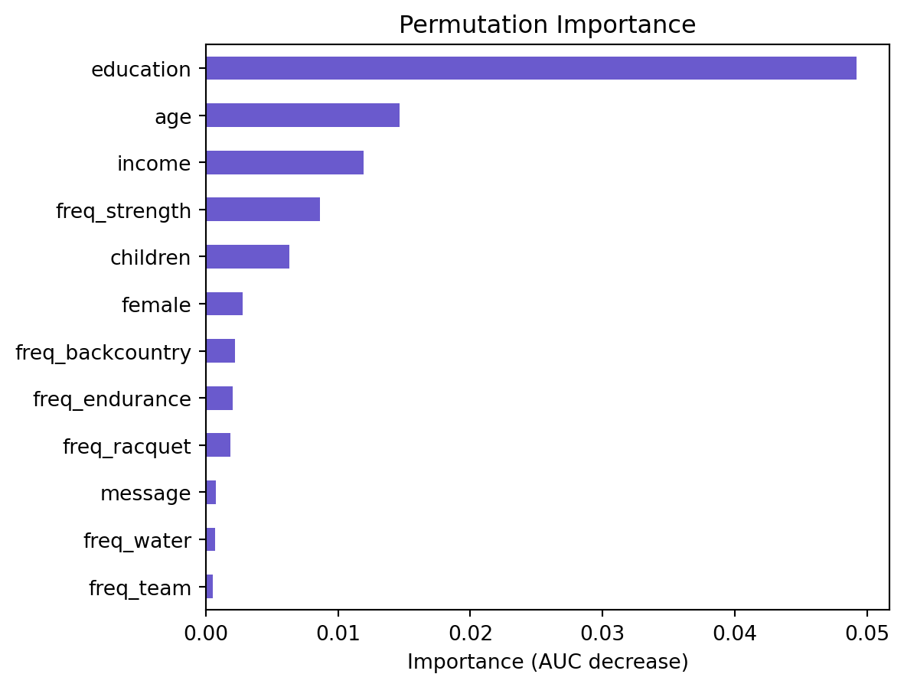
pentathlon_nptb['pred_lr'] = lr.predict(pentathlon_nptb)['prediction']dct = {"train" : pentathlon_nptb.query("training == 1"), "test" : pentathlon_nptb.query("training == 0")}
fig = rsm.gains_plot(dct, "buyer", "yes", "pred_lr")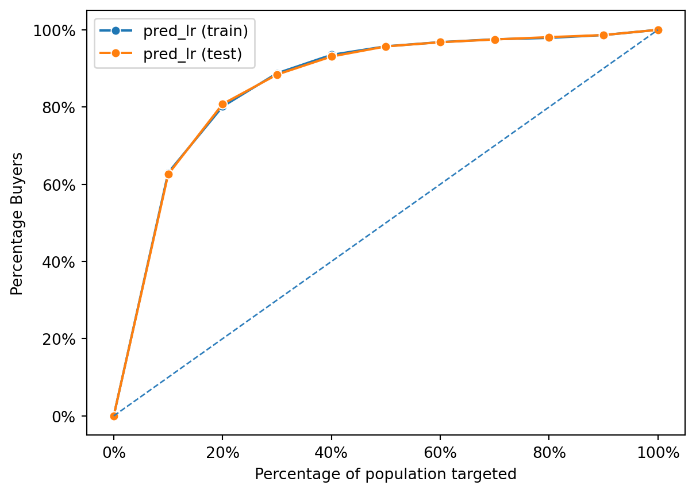
from sklearn import metrics
# prediction on training set
pred = pentathlon_nptb.query("training == 1")['pred_lr']
actual = pentathlon_nptb.query("training == 1")['buyer_yes']
fpr, tpr, thresholds = metrics.roc_curve(actual, pred)
metrics.auc(fpr, tpr).round(3)0.884# prediction on test set
pred = pentathlon_nptb.query("training == 0")['pred_lr']
actual = pentathlon_nptb.query("training == 0")['buyer_yes']
fpr, tpr, thresholds = metrics.roc_curve(actual, pred)
metrics.auc(fpr, tpr).round(3)0.883We can conclude that:
The AUC for the training set is 0.884, which indicates that the model has a very good ability to distinguish between the two classes in the training data.
The AUC for the test set is 0.883, which is slightly lower but still indicates a very good predictive performance on unseen data.
The fact that the test AUC is close to the training AUC suggests that the model is generalizing well and not overfitting significantly to the training data. A small decrease from training to test set performance is normal because models will usually perform slightly better on the data they were trained on.
1. For each customer determine the message (i.e., endurance, strength, water, team, backcountry, racquet, or no-message) predicted to lead to the highest probability of purchase
# Check the department of the message variable
pentathlon_nptb["message"].value_counts()message
control 87260
racquet 87088
team 86792
backcountry 86604
water 85120
strength 84280
endurance 82856
Name: count, dtype: int64# Create predictions
pentathlon_nptb["p_control_lr"] = lr.predict(pentathlon_nptb, data_cmd={"message": "control"})["prediction"]
pentathlon_nptb["p_racquet_lr"] = lr.predict(pentathlon_nptb, data_cmd={"message": "racquet"})["prediction"]
pentathlon_nptb["p_team_lr"] = lr.predict(pentathlon_nptb, data_cmd={"message": "team"})["prediction"]
pentathlon_nptb["p_backcountry_lr"] = lr.predict(pentathlon_nptb, data_cmd={"message": "backcountry"})["prediction"]
pentathlon_nptb["p_water_lr"] = lr.predict(pentathlon_nptb, data_cmd={"message": "water"})["prediction"]
pentathlon_nptb["p_strength_lr"] = lr.predict(pentathlon_nptb, data_cmd={"message": "strength"})["prediction"]
pentathlon_nptb["p_endurance_lr"] = lr.predict(pentathlon_nptb, data_cmd={"message": "endurance"})["prediction"]
pentathlon_nptb| custid | buyer | total_os | message | age | female | income | education | children | freq_endurance | ... | training | buyer_yes | pred_lr | p_control_lr | p_racquet_lr | p_team_lr | p_backcountry_lr | p_water_lr | p_strength_lr | p_endurance_lr | |
|---|---|---|---|---|---|---|---|---|---|---|---|---|---|---|---|---|---|---|---|---|---|
| 0 | U1 | no | 0 | team | 30 to 44 | no | 55000 | 19 | 0.8 | 0 | ... | 1.0 | 0 | 0.013031 | 0.011433 | 0.012512 | 0.013031 | 0.012601 | 0.013298 | 0.014615 | 0.015700 |
| 1 | U3 | no | 0 | backcountry | 45 to 59 | no | 35000 | 22 | 1.0 | 0 | ... | 0.0 | 0 | 0.005123 | 0.004645 | 0.005086 | 0.005299 | 0.005123 | 0.005408 | 0.005949 | 0.006395 |
| 2 | U13 | no | 0 | endurance | 45 to 59 | yes | 45000 | 33 | 0.7 | 0 | ... | 1.0 | 0 | 0.011948 | 0.008692 | 0.009515 | 0.009910 | 0.009582 | 0.010114 | 0.011120 | 0.011948 |
| 3 | U20 | no | 0 | water | 45 to 59 | yes | 25000 | 24 | 0.2 | 0 | ... | 1.0 | 0 | 0.002361 | 0.002027 | 0.002220 | 0.002313 | 0.002236 | 0.002361 | 0.002598 | 0.002793 |
| 4 | U25 | no | 0 | racquet | >= 60 | yes | 65000 | 32 | 1.1 | 1 | ... | 0.0 | 0 | 0.011717 | 0.010706 | 0.011717 | 0.012203 | 0.011800 | 0.012453 | 0.013688 | 0.014705 |
| ... | ... | ... | ... | ... | ... | ... | ... | ... | ... | ... | ... | ... | ... | ... | ... | ... | ... | ... | ... | ... | ... |
| 599995 | U3462888 | no | 0 | water | >= 60 | yes | 40000 | 26 | 0.6 | 0 | ... | 1.0 | 0 | 0.002182 | 0.001873 | 0.002052 | 0.002138 | 0.002067 | 0.002182 | 0.002401 | 0.002582 |
| 599996 | U3462900 | no | 0 | team | < 30 | no | 55000 | 32 | 0.9 | 3 | ... | 0.0 | 0 | 0.007347 | 0.006442 | 0.007053 | 0.007347 | 0.007103 | 0.007499 | 0.008247 | 0.008863 |
| 599997 | U3462902 | no | 0 | team | < 30 | yes | 55000 | 32 | 0.9 | 0 | ... | 1.0 | 0 | 0.009142 | 0.008017 | 0.008776 | 0.009142 | 0.008839 | 0.009330 | 0.010258 | 0.011023 |
| 599998 | U3462916 | no | 0 | team | < 30 | no | 50000 | 35 | 0.6 | 2 | ... | 0.0 | 0 | 0.006615 | 0.005799 | 0.006350 | 0.006615 | 0.006395 | 0.006751 | 0.007425 | 0.007981 |
| 599999 | U3462922 | no | 0 | endurance | 30 to 44 | yes | 50000 | 25 | 0.7 | 1 | ... | 0.0 | 0 | 0.010293 | 0.007484 | 0.008194 | 0.008535 | 0.008252 | 0.008710 | 0.009578 | 0.010293 |
600000 rows × 25 columns
We then extend the prediction to the full database and see how the predictions are distributed.
pentathlon_nptb["message_lr"] = pentathlon_nptb[[
"p_control_lr",
"p_endurance_lr",
"p_backcountry_lr",
"p_racquet_lr",
"p_strength_lr",
"p_team_lr",
"p_water_lr"]].idxmax(axis=1)
pentathlon_nptb["message_lr"].value_counts()message_lr
p_endurance_lr 600000
Name: count, dtype: int64After checking the distribution, we can see that the model predicts that every customer should be sent the same product. The mistake in the analysis above was that the specified model is not sufficiently flexible to allow customization across customers!
The output of the logistic regression above shows that there are indeed some interaction effects taking place in the data. We want to create a model that can capture these interaction effects, which we have done. We are now going to use the model to predict the next product to buy for the full database.
ivar=[f"{e}:message" for e in evar if e != "message"]
ivar['age:message',
'female:message',
'income:message',
'education:message',
'children:message',
'freq_endurance:message',
'freq_strength:message',
'freq_water:message',
'freq_team:message',
'freq_backcountry:message',
'freq_racquet:message']The model is then:
lr_int = rsm.model.logistic(
data={"penathlon_nptb": pentathlon_nptb[pentathlon_nptb.training == 1]},
rvar="buyer",
lev="yes",
evar=evar,
ivar=ivar
)
lr_int.summary()Logistic regression (GLM)
Data : penathlon_nptb
Response variable : buyer
Level : yes
Explanatory variables: message, age, female, income, education, children, freq_endurance, freq_strength, freq_water, freq_team, freq_backcountry, freq_racquet
Null hyp.: There is no effect of x on buyer
Alt. hyp.: There is an effect of x on buyer
OR OR% coefficient std.error z.value p.value
Intercept 0.000 -100.0% -8.25 0.153 -53.948 < .001 ***
message[control] 1.115 11.5% 0.11 0.220 0.496 0.62
message[endurance] 1.199 19.9% 0.18 0.213 0.850 0.395
message[racquet] 1.084 8.4% 0.08 0.217 0.370 0.711
message[strength] 0.959 -4.1% -0.04 0.216 -0.195 0.846
message[team] 0.881 -11.9% -0.13 0.217 -0.581 0.561
message[water] 0.903 -9.7% -0.10 0.219 -0.468 0.64
age[30 to 44] 1.979 97.9% 0.68 0.100 6.802 < .001 ***
age[45 to 59] 2.056 105.6% 0.72 0.102 7.033 < .001 ***
age[>= 60] 0.992 -0.8% -0.01 0.127 -0.060 0.952
female[no] 1.365 36.5% 0.31 0.064 4.833 < .001 ***
age[30 to 44]:message[control] 1.196 19.6% 0.18 0.146 1.225 0.22
age[45 to 59]:message[control] 1.016 1.6% 0.02 0.150 0.107 0.914
age[>= 60]:message[control] 1.155 15.5% 0.14 0.184 0.785 0.432
age[30 to 44]:message[endurance] 1.302 30.2% 0.26 0.142 1.855 0.064 .
age[45 to 59]:message[endurance] 1.142 14.2% 0.13 0.146 0.907 0.364
age[>= 60]:message[endurance] 1.473 47.3% 0.39 0.176 2.203 0.028 *
age[30 to 44]:message[racquet] 1.053 5.3% 0.05 0.144 0.358 0.72
age[45 to 59]:message[racquet] 1.004 0.4% 0.00 0.147 0.030 0.976
age[>= 60]:message[racquet] 1.269 26.9% 0.24 0.178 1.334 0.182
age[30 to 44]:message[strength] 1.307 30.7% 0.27 0.142 1.886 0.059 .
age[45 to 59]:message[strength] 0.947 -5.3% -0.05 0.146 -0.375 0.708
age[>= 60]:message[strength] 1.084 8.4% 0.08 0.178 0.456 0.649
age[30 to 44]:message[team] 1.268 26.8% 0.24 0.144 1.654 0.098 .
age[45 to 59]:message[team] 1.111 11.1% 0.10 0.147 0.713 0.476
age[>= 60]:message[team] 1.164 16.4% 0.15 0.180 0.841 0.4
age[30 to 44]:message[water] 1.359 35.9% 0.31 0.147 2.081 0.037 *
age[45 to 59]:message[water] 1.264 26.4% 0.23 0.151 1.552 0.121
age[>= 60]:message[water] 1.362 36.2% 0.31 0.184 1.677 0.094 .
female[no]:message[control] 0.974 -2.6% -0.03 0.092 -0.283 0.777
female[no]:message[endurance] 0.884 -11.6% -0.12 0.089 -1.391 0.164
female[no]:message[racquet] 1.192 19.2% 0.18 0.092 1.911 0.056 .
female[no]:message[strength] 1.015 1.5% 0.02 0.090 0.168 0.867
female[no]:message[team] 1.019 1.9% 0.02 0.090 0.206 0.837
female[no]:message[water] 0.897 -10.3% -0.11 0.091 -1.190 0.234
income 1.000 0.0% 0.00 0.000 8.324 < .001 ***
income:message[control] 1.000 0.0% 0.00 0.000 0.020 0.984
income:message[endurance] 1.000 0.0% 0.00 0.000 1.688 0.091 .
income:message[racquet] 1.000 0.0% 0.00 0.000 0.191 0.849
income:message[strength] 1.000 -0.0% -0.00 0.000 -0.368 0.713
income:message[team] 1.000 0.0% 0.00 0.000 0.053 0.958
income:message[water] 1.000 -0.0% -0.00 0.000 -0.353 0.724
education 1.041 4.1% 0.04 0.003 13.546 < .001 ***
education:message[control] 0.995 -0.5% -0.01 0.004 -1.273 0.203
education:message[endurance] 0.993 -0.7% -0.01 0.004 -1.722 0.085 .
education:message[racquet] 0.992 -0.8% -0.01 0.004 -1.959 0.05 .
education:message[strength] 1.002 0.2% 0.00 0.004 0.551 0.581
education:message[team] 1.000 -0.0% -0.00 0.004 -0.071 0.943
education:message[water] 0.997 -0.3% -0.00 0.004 -0.718 0.473
children 1.723 72.3% 0.54 0.078 6.982 < .001 ***
children:message[control] 0.838 -16.2% -0.18 0.114 -1.552 0.121
children:message[endurance] 0.885 -11.5% -0.12 0.109 -1.120 0.263
children:message[racquet] 0.933 -6.7% -0.07 0.110 -0.629 0.529
children:message[strength] 1.023 2.3% 0.02 0.110 0.207 0.836
children:message[team] 0.960 -4.0% -0.04 0.111 -0.369 0.712
children:message[water] 0.935 -6.5% -0.07 0.112 -0.602 0.547
freq_endurance 1.081 8.1% 0.08 0.014 5.617 < .001 ***
freq_endurance:message[control] 1.029 2.9% 0.03 0.020 1.442 0.149
freq_endurance:message[endurance] 0.990 -1.0% -0.01 0.020 -0.512 0.609
freq_endurance:message[racquet] 1.016 1.6% 0.02 0.020 0.792 0.428
freq_endurance:message[strength] 1.016 1.6% 0.02 0.020 0.804 0.421
freq_endurance:message[team] 1.043 4.3% 0.04 0.019 2.157 0.031 *
freq_endurance:message[water] 1.036 3.6% 0.04 0.020 1.807 0.071 .
freq_strength 1.114 11.4% 0.11 0.009 12.347 < .001 ***
freq_strength:message[control] 1.001 0.1% 0.00 0.012 0.045 0.964
freq_strength:message[endurance] 0.991 -0.9% -0.01 0.012 -0.732 0.464
freq_strength:message[racquet] 1.002 0.2% 0.00 0.012 0.142 0.887
freq_strength:message[strength] 0.998 -0.2% -0.00 0.012 -0.174 0.862
freq_strength:message[team] 1.003 0.3% 0.00 0.012 0.249 0.803
freq_strength:message[water] 1.015 1.5% 0.01 0.012 1.162 0.245
freq_water 1.139 13.9% 0.13 0.035 3.678 < .001 ***
freq_water:message[control] 1.036 3.6% 0.04 0.051 0.699 0.484
freq_water:message[endurance] 1.067 6.7% 0.06 0.051 1.272 0.204
freq_water:message[racquet] 1.028 2.8% 0.03 0.051 0.539 0.59
freq_water:message[strength] 1.014 1.4% 0.01 0.051 0.268 0.788
freq_water:message[team] 0.970 -3.0% -0.03 0.050 -0.602 0.547
freq_water:message[water] 1.158 15.8% 0.15 0.051 2.859 0.004 **
freq_team 1.037 3.7% 0.04 0.012 3.069 0.002 **
freq_team:message[control] 1.005 0.5% 0.01 0.017 0.302 0.763
freq_team:message[endurance] 0.999 -0.1% -0.00 0.017 -0.057 0.955
freq_team:message[racquet] 1.025 2.5% 0.02 0.017 1.431 0.152
freq_team:message[strength] 1.031 3.1% 0.03 0.017 1.788 0.074 .
freq_team:message[team] 0.993 -0.7% -0.01 0.017 -0.406 0.685
freq_team:message[water] 1.036 3.6% 0.04 0.017 2.081 0.037 *
freq_backcountry 1.210 21.0% 0.19 0.026 7.256 < .001 ***
freq_backcountry:message[control] 0.973 -2.7% -0.03 0.037 -0.727 0.467
freq_backcountry:message[endurance] 0.992 -0.8% -0.01 0.037 -0.224 0.823
freq_backcountry:message[racquet] 0.968 -3.2% -0.03 0.037 -0.864 0.388
freq_backcountry:message[strength] 0.982 -1.8% -0.02 0.037 -0.492 0.623
freq_backcountry:message[team] 0.976 -2.4% -0.02 0.037 -0.658 0.511
freq_backcountry:message[water] 0.981 -1.9% -0.02 0.038 -0.517 0.605
freq_racquet 1.100 10.0% 0.10 0.017 5.456 < .001 ***
freq_racquet:message[control] 1.034 3.4% 0.03 0.025 1.356 0.175
freq_racquet:message[endurance] 1.034 3.4% 0.03 0.025 1.375 0.169
freq_racquet:message[racquet] 1.039 3.9% 0.04 0.025 1.523 0.128
freq_racquet:message[strength] 0.975 -2.5% -0.03 0.025 -1.023 0.306
freq_racquet:message[team] 0.992 -0.8% -0.01 0.024 -0.345 0.73
freq_racquet:message[water] 0.998 -0.2% -0.00 0.025 -0.090 0.928
Signif. codes: 0 '***' 0.001 '**' 0.01 '*' 0.05 '.' 0.1 ' ' 1
Pseudo R-squared (McFadden): 0.262
Pseudo R-squared (McFadden adjusted): 0.26
Area under the RO Curve (AUC): 0.884
Log-likelihood: -35102.941, AIC: 70401.883, BIC: 71474.788
Chi-squared: 24901.02, df(97), p.value < 0.001
Nr obs: 420,000pentathlon_nptb["pred_lr_int"] = lr_int.predict(pentathlon_nptb)["prediction"]dct = {"train": pentathlon_nptb.query("training == 1"), "test": pentathlon_nptb.query("training == 0")}
fig = rsm.gains_plot(dct, "buyer", "yes", "pred_lr_int")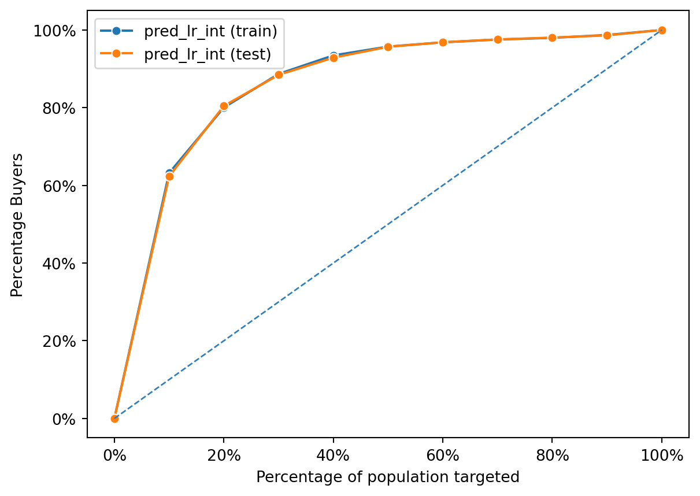
fig = rsm.gains_plot(
pentathlon_nptb,
"buyer", "yes",
["pred_lr", "pred_lr_int"]
)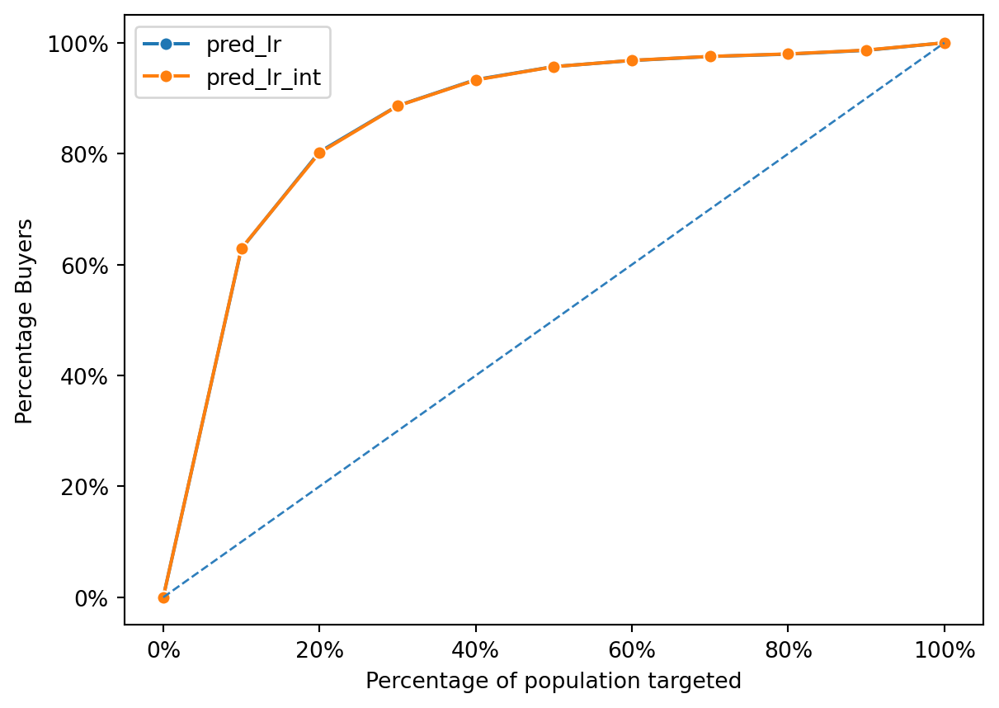
# prediction on training set
pred = pentathlon_nptb.query("training == 1")['pred_lr_int']
actual = pentathlon_nptb.query("training == 1")['buyer_yes']
fpr, tpr, thresholds = metrics.roc_curve(actual, pred)
metrics.auc(fpr, tpr).round(3)0.884# prediction on test set
pred = pentathlon_nptb.query("training == 0")['pred_lr_int']
actual = pentathlon_nptb.query("training == 0")['buyer_yes']
fpr, tpr, thresholds = metrics.roc_curve(actual, pred)
metrics.auc(fpr, tpr).round(3)0.883Now, lets repeat the analysis above with the new model.
# Create predictions
pentathlon_nptb["p_controli_lr"] = lr_int.predict(pentathlon_nptb, data_cmd={"message": "control"})["prediction"]
pentathlon_nptb["p_racqueti_lr"] = lr_int.predict(pentathlon_nptb, data_cmd={"message": "racquet"})["prediction"]
pentathlon_nptb["p_teami_lr"] = lr_int.predict(pentathlon_nptb, data_cmd={"message": "team"})["prediction"]
pentathlon_nptb["p_backcountryi_lr"] = lr_int.predict(pentathlon_nptb, data_cmd={"message": "backcountry"})["prediction"]
pentathlon_nptb["p_wateri_lr"] = lr_int.predict(pentathlon_nptb, data_cmd={"message": "water"})["prediction"]
pentathlon_nptb["p_strengthi_lr"] = lr_int.predict(pentathlon_nptb, data_cmd={"message": "strength"})["prediction"]
pentathlon_nptb["p_endurancei_lr"] = lr_int.predict(pentathlon_nptb, data_cmd={"message": "endurance"})["prediction"]
pentathlon_nptb| custid | buyer | total_os | message | age | female | income | education | children | freq_endurance | ... | p_endurance_lr | message_lr | pred_lr_int | p_controli_lr | p_racqueti_lr | p_teami_lr | p_backcountryi_lr | p_wateri_lr | p_strengthi_lr | p_endurancei_lr | |
|---|---|---|---|---|---|---|---|---|---|---|---|---|---|---|---|---|---|---|---|---|---|
| 0 | U1 | no | 0 | team | 30 to 44 | no | 55000 | 19 | 0.8 | 0 | ... | 0.015700 | p_endurance_lr | 0.012008 | 0.012022 | 0.014499 | 0.012008 | 0.011131 | 0.012604 | 0.015452 | 0.015682 |
| 1 | U3 | no | 0 | backcountry | 45 to 59 | no | 35000 | 22 | 1.0 | 0 | ... | 0.006395 | p_endurance_lr | 0.005556 | 0.004605 | 0.005858 | 0.005279 | 0.005556 | 0.004981 | 0.005475 | 0.006014 |
| 2 | U13 | no | 0 | endurance | 45 to 59 | yes | 45000 | 33 | 0.7 | 0 | ... | 0.011948 | p_endurance_lr | 0.013884 | 0.009140 | 0.008789 | 0.009533 | 0.010718 | 0.009680 | 0.009343 | 0.013884 |
| 3 | U20 | no | 0 | water | 45 to 59 | yes | 25000 | 24 | 0.2 | 0 | ... | 0.002793 | p_endurance_lr | 0.002389 | 0.002252 | 0.002089 | 0.002264 | 0.002339 | 0.002389 | 0.002196 | 0.002970 |
| 4 | U25 | no | 0 | racquet | >= 60 | yes | 65000 | 32 | 1.1 | 1 | ... | 0.014705 | p_endurance_lr | 0.012039 | 0.010784 | 0.012039 | 0.011119 | 0.011526 | 0.011437 | 0.011463 | 0.019675 |
| ... | ... | ... | ... | ... | ... | ... | ... | ... | ... | ... | ... | ... | ... | ... | ... | ... | ... | ... | ... | ... | ... |
| 599995 | U3462888 | no | 0 | water | >= 60 | yes | 40000 | 26 | 0.6 | 0 | ... | 0.002582 | p_endurance_lr | 0.002042 | 0.001966 | 0.002118 | 0.001946 | 0.001947 | 0.002042 | 0.002089 | 0.003217 |
| 599996 | U3462900 | no | 0 | team | < 30 | no | 55000 | 32 | 0.9 | 3 | ... | 0.008863 | p_endurance_lr | 0.007692 | 0.006959 | 0.008257 | 0.007692 | 0.007884 | 0.005832 | 0.008117 | 0.007731 |
| 599997 | U3462902 | no | 0 | team | < 30 | yes | 55000 | 32 | 0.9 | 0 | ... | 0.011023 | p_endurance_lr | 0.008225 | 0.008535 | 0.008976 | 0.008225 | 0.010062 | 0.008286 | 0.009822 | 0.011345 |
| 599998 | U3462916 | no | 0 | team | < 30 | no | 50000 | 35 | 0.6 | 2 | ... | 0.007981 | p_endurance_lr | 0.006796 | 0.006378 | 0.007352 | 0.006796 | 0.007164 | 0.005272 | 0.007284 | 0.006971 |
| 599999 | U3462922 | no | 0 | endurance | 30 to 44 | yes | 50000 | 25 | 0.7 | 1 | ... | 0.010293 | p_endurance_lr | 0.011857 | 0.008527 | 0.007495 | 0.008401 | 0.007500 | 0.008214 | 0.009222 | 0.011857 |
600000 rows × 34 columns
We then extend the prediction to the full database and see how the predictions are distributed.
repl = {
"p_controli_lr": "control",
"p_endurancei_lr": "endurance",
"p_backcountryi_lr": "backcountry",
"p_racqueti_lr": "racquet",
"p_strengthi_lr": "strength",
"p_teami_lr": "team",
"p_wateri_lr": "water"}predictions_lr = [
"p_controli_lr",
"p_endurancei_lr",
"p_backcountryi_lr",
"p_racqueti_lr",
"p_strengthi_lr",
"p_teami_lr",
"p_wateri_lr"]Find the highest probability of purchase for each customer, labeled them by the product with the highest probability of purchase
pentathlon_nptb["messagei_lr"] = (
pentathlon_nptb[predictions_lr]
.idxmax(axis=1)
.map(repl)
)
pentathlon_nptb| custid | buyer | total_os | message | age | female | income | education | children | freq_endurance | ... | message_lr | pred_lr_int | p_controli_lr | p_racqueti_lr | p_teami_lr | p_backcountryi_lr | p_wateri_lr | p_strengthi_lr | p_endurancei_lr | messagei_lr | |
|---|---|---|---|---|---|---|---|---|---|---|---|---|---|---|---|---|---|---|---|---|---|
| 0 | U1 | no | 0 | team | 30 to 44 | no | 55000 | 19 | 0.8 | 0 | ... | p_endurance_lr | 0.012008 | 0.012022 | 0.014499 | 0.012008 | 0.011131 | 0.012604 | 0.015452 | 0.015682 | endurance |
| 1 | U3 | no | 0 | backcountry | 45 to 59 | no | 35000 | 22 | 1.0 | 0 | ... | p_endurance_lr | 0.005556 | 0.004605 | 0.005858 | 0.005279 | 0.005556 | 0.004981 | 0.005475 | 0.006014 | endurance |
| 2 | U13 | no | 0 | endurance | 45 to 59 | yes | 45000 | 33 | 0.7 | 0 | ... | p_endurance_lr | 0.013884 | 0.009140 | 0.008789 | 0.009533 | 0.010718 | 0.009680 | 0.009343 | 0.013884 | endurance |
| 3 | U20 | no | 0 | water | 45 to 59 | yes | 25000 | 24 | 0.2 | 0 | ... | p_endurance_lr | 0.002389 | 0.002252 | 0.002089 | 0.002264 | 0.002339 | 0.002389 | 0.002196 | 0.002970 | endurance |
| 4 | U25 | no | 0 | racquet | >= 60 | yes | 65000 | 32 | 1.1 | 1 | ... | p_endurance_lr | 0.012039 | 0.010784 | 0.012039 | 0.011119 | 0.011526 | 0.011437 | 0.011463 | 0.019675 | endurance |
| ... | ... | ... | ... | ... | ... | ... | ... | ... | ... | ... | ... | ... | ... | ... | ... | ... | ... | ... | ... | ... | ... |
| 599995 | U3462888 | no | 0 | water | >= 60 | yes | 40000 | 26 | 0.6 | 0 | ... | p_endurance_lr | 0.002042 | 0.001966 | 0.002118 | 0.001946 | 0.001947 | 0.002042 | 0.002089 | 0.003217 | endurance |
| 599996 | U3462900 | no | 0 | team | < 30 | no | 55000 | 32 | 0.9 | 3 | ... | p_endurance_lr | 0.007692 | 0.006959 | 0.008257 | 0.007692 | 0.007884 | 0.005832 | 0.008117 | 0.007731 | racquet |
| 599997 | U3462902 | no | 0 | team | < 30 | yes | 55000 | 32 | 0.9 | 0 | ... | p_endurance_lr | 0.008225 | 0.008535 | 0.008976 | 0.008225 | 0.010062 | 0.008286 | 0.009822 | 0.011345 | endurance |
| 599998 | U3462916 | no | 0 | team | < 30 | no | 50000 | 35 | 0.6 | 2 | ... | p_endurance_lr | 0.006796 | 0.006378 | 0.007352 | 0.006796 | 0.007164 | 0.005272 | 0.007284 | 0.006971 | racquet |
| 599999 | U3462922 | no | 0 | endurance | 30 to 44 | yes | 50000 | 25 | 0.7 | 1 | ... | p_endurance_lr | 0.011857 | 0.008527 | 0.007495 | 0.008401 | 0.007500 | 0.008214 | 0.009222 | 0.011857 | endurance |
600000 rows × 35 columns
# Find the maximum probability of purchase
pentathlon_nptb["p_max"] = pentathlon_nptb[predictions_lr].max(axis=1)Approach: First of all, We build a logistic regression model to predict the next product to buy, use buyer_yes as the response variable and the other variables as predictors. After relizing that the model predicts that every customer should be sent the same product i.e, endurance, we build another model that can capture these interaction effects.
We then extend the prediction to the full database. To predict the probability of purchasing for different messages, we use the data_cmd to predict the probability of purchasing for different messages.
Finally, we choose the product with the highest probability using idxmax to automatically find the best message for each customer. This command also provides a label for the category with the maximum predicted propability of buying accross all the products. Then, create p_max to store the maximum predicted probability of purchasing for the best message sellected for each customer.
2. For each message, report the percentage of customers for whom that message or no-message maximizes their probability of purchase
Let’s create a crosstab to see which products should we send to each customer.
pd.crosstab(index=pentathlon_nptb[pentathlon_nptb.training == 0].messagei_lr, columns="count").apply(rsm.format_nr)| col_0 | count |
|---|---|
| messagei_lr | |
| backcountry | 1,447 |
| endurance | 125,861 |
| racquet | 12,299 |
| strength | 36,584 |
| team | 1,680 |
| water | 2,129 |
Report the percentage of customers for whom that message is the best message or not the best message.
pentathlon_nptb["messagei_lr"].value_counts(normalize=True)messagei_lr
endurance 0.699675
strength 0.202202
racquet 0.069037
water 0.011852
team 0.009358
backcountry 0.007875
control 0.000002
Name: proportion, dtype: float64edurance: The distribution suggests thatendurance- related messages resonate significantly more with the customers than the other messages.strength: Wilte not as dominant asendurance,strength- related messages also play an important role. There might be opportunities to further optimize or tailor these messages to increase their effectiveness.Other categories such as
racquet,water,team,backcountryhave much smaller proportions, suggesting that they are less often the best choice for maximizing the probability of purchase.control: The negligible role ofcontrolin maximizing the probability suggrest that any engagement, even if not perfectly oplimized, tends to be better than no engagement at all. However, it’s also essential to consider the context and the potential costs of sending messages to customers.
Create a table with the average purchase probability if we send the message for each product to everyone.
pentathlon_nptb.loc[pentathlon_nptb.training == 0, predictions_lr].agg("mean").sort_values(
ascending=False).apply(rsm.format_nr, perc=True)p_endurancei_lr 2.79%
p_strengthi_lr 2.64%
p_wateri_lr 2.44%
p_teami_lr 2.39%
p_backcountryi_lr 2.32%
p_racqueti_lr 2.31%
p_controli_lr 2.14%
dtype: object3. Expected profit
# Calculate the actual order size
ordersize = pentathlon_nptb[(pentathlon_nptb.training == 1) & (pentathlon_nptb.buyer_yes == 1)].groupby("message")["total_os"].mean()
ordersize/var/folders/28/cfl1_cfs3bb536qkz8wkys_w0000gn/T/ipykernel_31928/476348601.py:2: FutureWarning:
The default of observed=False is deprecated and will be changed to True in a future version of pandas. Pass observed=False to retain current behavior or observed=True to adopt the future default and silence this warning.
message
backcountry 64.034091
control 49.900598
endurance 55.584893
racquet 56.405620
strength 56.708751
team 56.522449
water 61.957343
Name: total_os, dtype: float64Creat Linear model to predict ordersize
reg = rsm.model.regress(
data = {"pentathlon_nptb": pentathlon_nptb[(pentathlon_nptb.training == 1) & (pentathlon_nptb.buyer == "yes")]},
rvar ="total_os",
evar = evar,
ivar = ivar
)
reg.summary()Linear regression (OLS)
Data : pentathlon_nptb
Response variable : total_os
Explanatory variables: message, age, female, income, education, children, freq_endurance, freq_strength, freq_water, freq_team, freq_backcountry, freq_racquet
Null hyp.: the effect of x on total_os is zero
Alt. hyp.: the effect of x on total_os is not zero
coefficient std.error t.value p.value
Intercept -9.616 8.976 -1.071 0.284
message[control] 17.412 12.953 1.344 0.179
message[endurance] 9.106 12.058 0.755 0.45
message[racquet] 4.179 12.822 0.326 0.745
message[strength] 1.414 12.601 0.112 0.911
message[team] 10.566 12.573 0.840 0.401
message[water] 6.659 12.905 0.516 0.606
age[30 to 44] 4.166 5.701 0.731 0.465
age[45 to 59] 6.059 5.712 1.061 0.289
age[>= 60] -0.679 7.066 -0.096 0.923
female[no] 3.578 3.548 1.008 0.313
age[30 to 44]:message[control] -6.037 8.297 -0.728 0.467
age[45 to 59]:message[control] -3.440 8.437 -0.408 0.683
age[>= 60]:message[control] 5.342 10.292 0.519 0.604
age[30 to 44]:message[endurance] -3.088 8.017 -0.385 0.7
age[45 to 59]:message[endurance] -12.434 8.132 -1.529 0.126
age[>= 60]:message[endurance] 6.071 9.755 0.622 0.534
age[30 to 44]:message[racquet] -1.337 8.176 -0.163 0.87
age[45 to 59]:message[racquet] -8.117 8.242 -0.985 0.325
age[>= 60]:message[racquet] -5.150 10.010 -0.514 0.607
age[30 to 44]:message[strength] -0.696 7.975 -0.087 0.93
age[45 to 59]:message[strength] 0.160 8.076 0.020 0.984
age[>= 60]:message[strength] 5.451 9.893 0.551 0.582
age[30 to 44]:message[team] 8.784 8.077 1.088 0.277
age[45 to 59]:message[team] 6.381 8.161 0.782 0.434
age[>= 60]:message[team] 9.798 10.020 0.978 0.328
age[30 to 44]:message[water] -7.117 8.285 -0.859 0.39
age[45 to 59]:message[water] -12.193 8.378 -1.455 0.146
age[>= 60]:message[water] 5.907 10.209 0.579 0.563
female[no]:message[control] -4.082 5.058 -0.807 0.42
female[no]:message[endurance] -3.209 4.877 -0.658 0.511
female[no]:message[racquet] -2.000 5.096 -0.392 0.695
female[no]:message[strength] -3.970 4.920 -0.807 0.42
female[no]:message[team] -8.944 4.904 -1.824 0.068 .
female[no]:message[water] 1.978 4.972 0.398 0.691
income 0.000 0.000 3.970 < .001 ***
income:message[control] -0.000 0.000 -1.166 0.244
income:message[endurance] -0.000 0.000 -0.710 0.478
income:message[racquet] 0.000 0.000 0.702 0.483
income:message[strength] -0.000 0.000 -1.205 0.228
income:message[team] -0.000 0.000 -1.392 0.164
income:message[water] -0.000 0.000 -1.353 0.176
education 0.773 0.161 4.812 < .001 ***
education:message[control] -0.370 0.230 -1.613 0.107
education:message[endurance] -0.238 0.218 -1.090 0.276
education:message[racquet] -0.292 0.228 -1.283 0.199
education:message[strength] 0.005 0.221 0.025 0.98
education:message[team] -0.337 0.224 -1.505 0.132
education:message[water] -0.088 0.226 -0.390 0.696
children 7.307 4.406 1.659 0.097 .
children:message[control] 4.666 6.217 0.750 0.453
children:message[endurance] 1.572 5.994 0.262 0.793
children:message[racquet] 5.236 6.255 0.837 0.403
children:message[strength] -0.699 6.269 -0.112 0.911
children:message[team] 4.814 6.233 0.772 0.44
children:message[water] 11.040 6.482 1.703 0.089 .
freq_endurance -1.400 0.698 -2.004 0.045 *
freq_endurance:message[control] 1.082 0.995 1.088 0.277
freq_endurance:message[endurance] -0.138 0.974 -0.142 0.887
freq_endurance:message[racquet] -0.927 1.005 -0.922 0.356
freq_endurance:message[strength] 0.160 0.981 0.163 0.871
freq_endurance:message[team] 1.424 0.963 1.479 0.139
freq_endurance:message[water] -0.298 0.968 -0.308 0.758
freq_strength -2.181 0.437 -4.988 < .001 ***
freq_strength:message[control] 0.352 0.626 0.563 0.573
freq_strength:message[endurance] 0.286 0.607 0.471 0.638
freq_strength:message[racquet] 0.029 0.635 0.045 0.964
freq_strength:message[strength] 1.337 0.614 2.179 0.029 *
freq_strength:message[team] 0.807 0.615 1.312 0.19
freq_strength:message[water] 1.055 0.614 1.718 0.086 .
freq_water 2.979 1.679 1.774 0.076 .
freq_water:message[control] 0.263 2.417 0.109 0.913
freq_water:message[endurance] -1.171 2.375 -0.493 0.622
freq_water:message[racquet] -2.418 2.392 -1.011 0.312
freq_water:message[strength] 0.200 2.369 0.084 0.933
freq_water:message[team] -1.236 2.347 -0.527 0.598
freq_water:message[water] -3.641 2.368 -1.538 0.124
freq_team -0.075 0.599 -0.125 0.901
freq_team:message[control] -0.229 0.847 -0.270 0.787
freq_team:message[endurance] 2.188 0.829 2.638 0.008 **
freq_team:message[racquet] -0.563 0.861 -0.654 0.513
freq_team:message[strength] -0.657 0.850 -0.774 0.439
freq_team:message[team] 0.320 0.829 0.386 0.7
freq_team:message[water] -0.932 0.836 -1.115 0.265
freq_backcountry 2.686 1.320 2.035 0.042 *
freq_backcountry:message[control] -0.962 1.902 -0.506 0.613
freq_backcountry:message[endurance] 2.745 1.848 1.486 0.137
freq_backcountry:message[racquet] -0.198 1.887 -0.105 0.916
freq_backcountry:message[strength] -0.097 1.864 -0.052 0.958
freq_backcountry:message[team] -0.529 1.858 -0.284 0.776
freq_backcountry:message[water] 1.071 1.862 0.575 0.565
freq_racquet 0.297 0.868 0.343 0.732
freq_racquet:message[control] -0.775 1.246 -0.622 0.534
freq_racquet:message[endurance] -0.021 1.186 -0.018 0.986
freq_racquet:message[racquet] 0.944 1.237 0.764 0.445
freq_racquet:message[strength] 1.148 1.200 0.957 0.339
freq_racquet:message[team] 0.199 1.207 0.165 0.869
freq_racquet:message[water] 1.503 1.214 1.238 0.216
Signif. codes: 0 '***' 0.001 '**' 0.01 '*' 0.05 '.' 0.1 ' ' 1
R-squared: 0.089, Adjusted R-squared: 0.08
F-statistic: 10.021 df(97, 9982), p.value < 0.001
Nr obs: 10,080reg.coef.round(3)| index | coefficient | std.error | t.value | p.value | ||
|---|---|---|---|---|---|---|
| 0 | Intercept | -9.616 | 8.976 | -1.071 | 0.284 | |
| 1 | message[T.control] | 17.412 | 12.953 | 1.344 | 0.179 | |
| 2 | message[T.endurance] | 9.106 | 12.058 | 0.755 | 0.450 | |
| 3 | message[T.racquet] | 4.179 | 12.822 | 0.326 | 0.745 | |
| 4 | message[T.strength] | 1.414 | 12.601 | 0.112 | 0.911 | |
| ... | ... | ... | ... | ... | ... | ... |
| 93 | freq_racquet:message[T.endurance] | -0.021 | 1.186 | -0.018 | 0.986 | |
| 94 | freq_racquet:message[T.racquet] | 0.944 | 1.237 | 0.764 | 0.445 | |
| 95 | freq_racquet:message[T.strength] | 1.148 | 1.200 | 0.957 | 0.339 | |
| 96 | freq_racquet:message[T.team] | 0.199 | 1.207 | 0.165 | 0.869 | |
| 97 | freq_racquet:message[T.water] | 1.503 | 1.214 | 1.238 | 0.216 |
98 rows × 6 columns
pentathlon_nptb["pos_control_reg"] = reg.predict(pentathlon_nptb, data_cmd={"message": "control"})["prediction"]
pentathlon_nptb["pos_racquet_reg"] = reg.predict(pentathlon_nptb, data_cmd={"message": "racquet"})["prediction"]
pentathlon_nptb["pos_team_reg"] = reg.predict(pentathlon_nptb, data_cmd={"message": "team"})["prediction"]
pentathlon_nptb["pos_backcountry_reg"] = reg.predict(pentathlon_nptb, data_cmd={"message": "backcountry"})["prediction"]
pentathlon_nptb["pos_water_reg"] = reg.predict(pentathlon_nptb, data_cmd={"message": "water"})["prediction"]
pentathlon_nptb["pos_strength_reg"] = reg.predict(pentathlon_nptb, data_cmd={"message": "strength"})["prediction"]
pentathlon_nptb["pos_endurance_reg"] = reg.predict(pentathlon_nptb, data_cmd={"message": "endurance"})["prediction"]Calculate the expected profit for each product
pentathlon_nptb["ep_control_lr"] = pentathlon_nptb["p_control_lr"] * pentathlon_nptb["pos_control_reg"] * 0.4
pentathlon_nptb["ep_racquet_lr"] = pentathlon_nptb["p_racquet_lr"] * pentathlon_nptb["pos_racquet_reg"] * 0.4
pentathlon_nptb["ep_team_lr"] = pentathlon_nptb["p_team_lr"] * pentathlon_nptb["pos_team_reg"] * 0.4
pentathlon_nptb["ep_backcountry_lr"] = pentathlon_nptb["p_backcountry_lr"] * pentathlon_nptb["pos_backcountry_reg"] * 0.4
pentathlon_nptb["ep_water_lr"] = pentathlon_nptb["p_water_lr"] * pentathlon_nptb["pos_water_reg"] * 0.4
pentathlon_nptb["ep_strength_lr"] = pentathlon_nptb["p_strength_lr"] * pentathlon_nptb["pos_strength_reg"] * 0.4
pentathlon_nptb["ep_endurance_lr"] = pentathlon_nptb["p_endurance_lr"] * pentathlon_nptb["pos_endurance_reg"] * 0.4To determine the message to send that will maximize the expected profit, we can use the following formula:
expected_profit_lr = [
"ep_control_lr",
"ep_endurance_lr",
"ep_backcountry_lr",
"ep_racquet_lr",
"ep_strength_lr",
"ep_team_lr",
"ep_water_lr"]repl = {"ep_control_lr": "control", "ep_endurance_lr": "endurance", "ep_backcountry_lr": "backcountry", "ep_racquet_lr": "racquet", "ep_strength_lr": "strength", "ep_team_lr": "team", "ep_water_lr": "water"}
pentathlon_nptb["ep_message_lr"] = (
pentathlon_nptb[expected_profit_lr]
.idxmax(axis=1)
.map(repl)
)To predict the order size, we use the total_os as the response variable and the other variables as predictors as well as the interaction between message and other variables. We then extend the prediction to the full database and see how the predictions are distributed.
Same as the previous model, we use the data_cmd to predict the order size for different messages.
After that, we calculate the expected profit for each product by multiplying the probability of purchasing and the order size for each product. We then choose the product with the highest expected profit using idxmax to automatically find the best message for each customer. This command also provides a label for the category with the maximum expected profit. Then, create p_max to store the maximum expected profit of purchasing for the best message sellected for each customer.
4.Report for each message, i.e., endurance, racket, etc., and no-message, the percentage of customers for whom that (no) message maximizes their expected profit.
pentathlon_nptb.ep_message_lr.value_counts(normalize=True)ep_message_lr
water 0.340890
endurance 0.306053
team 0.206722
backcountry 0.073778
strength 0.066898
racquet 0.004322
control 0.001337
Name: proportion, dtype: float645. Expected profit can we obtain, on average, per customer if we customize the message to each customer?
pentathlon_nptb["ep_max"] = pentathlon_nptb[expected_profit_lr].max(axis=1)
pentathlon_nptb["ep_max"].mean()0.6754439327865267Let create the crosstab
pd.crosstab(index=pentathlon_nptb[pentathlon_nptb.training == 0].ep_message_lr, columns="count").apply(rsm.format_nr)| col_0 | count |
|---|---|
| ep_message_lr | |
| backcountry | 13,379 |
| control | 238 |
| endurance | 54,956 |
| racquet | 740 |
| strength | 12,092 |
| team | 37,539 |
| water | 61,056 |
6. Expected profit per e-mailed customer if every customer receives the same message
(
pentathlon_nptb
.loc[pentathlon_nptb.training == 0, ["ep_control_lr", "ep_endurance_lr", "ep_backcountry_lr", "ep_racquet_lr", "ep_strength_lr", "ep_team_lr", "ep_water_lr"]]
.agg("mean")
.sort_values(ascending=False)
.apply(rsm.format_nr, sym = "$", dec = 2)
)ep_endurance_lr $0.62
ep_water_lr $0.6
ep_strength_lr $0.6
ep_backcountry_lr $0.59
ep_team_lr $0.54
ep_racquet_lr $0.53
ep_control_lr $0.43
dtype: object7. Expected profit per e-mailed customer if every customer is assigned randomly to one of the messages or the no-message condition?
# probabilty of purchase where customer is assigned to a random message
pentathlon_nptb["p_random_lr"] = lr_int.predict(pentathlon_nptb)["prediction"]
# expected avg order size where customer is assigned to a random message
pentathlon_nptb["ordersize_random_reg"] = reg.predict(pentathlon_nptb)["prediction"]
# expected profit where customer is assigned to a random message
pentathlon_nptb["ep_random_lr"] = pentathlon_nptb["p_random_lr"] * pentathlon_nptb["ordersize_random_reg"] * 0.4
# expected profit per customer where customer is assigned to a random message
random_profit_per_customer = pentathlon_nptb.loc[pentathlon_nptb.training == 0, "ep_random_lr"].mean()
random_profit_per_customer0.5569904087502335# expected profit where no-message is sent (control)
pentathlon_nptb["ep_control_lr"]
# expected profit per customer where no-message is sent (control)
control_profit_per_customer = pentathlon_nptb.loc[pentathlon_nptb.training == 0, "ep_control_lr"].mean()
control_profit_per_customer0.43395192446302218. Profit for 5,000,000 customers
# Profit where each customer is assigned to the message with the highest expected profit
profit_logit = pentathlon_nptb.loc[pentathlon_nptb.training == 0, "ep_max"].agg("mean") * 5000000
profit_logit3408166.566437483# Profit where each customer is sent to a random message
random_profit = random_profit_per_customer * 5000000
random_profit2784952.0437511676# Profit where no message is sent
control_profit = control_profit_per_customer * 5000000
control_profit2169759.6223151106profit_improvement_lr = profit_logit - control_profit
profit_improvement_lr1238406.9441223722profits_dct = {
"Customize Message": profit_logit,
"Randomly Assign": random_profit,
"No Message Sent": control_profit,
}
import seaborn as sns
import matplotlib.pyplot as plt
# Convert dictionary to DataFrame
df = pd.DataFrame(list(profits_dct.items()), columns=['Model', 'Profit'])
plt.figure(figsize=(10, 5)) # Adjust the width and height to your preference
# Plot
sns.set(style="white")
ax = sns.barplot(x="Model", y="Profit", data=df, palette="magma")
# Annotations
for index, row in df.iterrows():
ax.text(index, row.Profit, f'${row.Profit:.2f}', ha='center')
# Set labels and title
ax.set_xlabel("Model Type", fontdict={'family': 'serif', 'color': 'black', 'size': 12})
ax.set_ylabel("Profit", fontdict={'family': 'serif', 'color': 'black', 'size': 12})
ax.set_title("Profit by Model", fontdict={'family': 'serif', 'color': 'black', 'size': 15})
plt.xticks(rotation=45) # Rotate x labels for better readability
plt.show()/var/folders/28/cfl1_cfs3bb536qkz8wkys_w0000gn/T/ipykernel_31928/1123293812.py:16: FutureWarning:
Passing `palette` without assigning `hue` is deprecated and will be removed in v0.14.0. Assign the `x` variable to `hue` and set `legend=False` for the same effect.
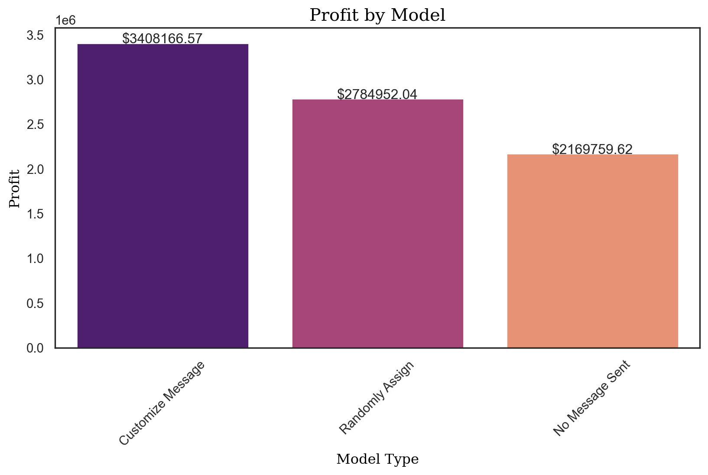
Neural Networks Model
pentathlon_nptb[pentathlon_nptb["training"] == 1]| custid | buyer | total_os | message | age | female | income | education | children | freq_endurance | ... | ep_team_lr | ep_backcountry_lr | ep_water_lr | ep_strength_lr | ep_endurance_lr | ep_message_lr | ep_max | p_random_lr | ordersize_random_reg | ep_random_lr | |
|---|---|---|---|---|---|---|---|---|---|---|---|---|---|---|---|---|---|---|---|---|---|
| 0 | U1 | no | 0 | team | 30 to 44 | no | 55000 | 19 | 0.8 | 0 | ... | 0.170065 | 0.152448 | 0.165323 | 0.127039 | 0.216326 | endurance | 0.216326 | 0.012008 | 32.627819 | 0.156712 |
| 2 | U13 | no | 0 | endurance | 45 to 59 | yes | 45000 | 33 | 0.7 | 0 | ... | 0.197624 | 0.190290 | 0.186217 | 0.204221 | 0.194732 | strength | 0.204221 | 0.013884 | 40.744326 | 0.226274 |
| 3 | U20 | no | 0 | water | 45 to 59 | yes | 25000 | 24 | 0.2 | 0 | ... | 0.028568 | 0.022970 | 0.014892 | 0.024216 | 0.016298 | team | 0.028568 | 0.002389 | 15.768889 | 0.015070 |
| 5 | U28 | no | 0 | strength | < 30 | yes | 25000 | 18 | 0.3 | 0 | ... | 0.006081 | 0.005424 | 0.007153 | 0.005244 | 0.008038 | endurance | 0.008038 | 0.000929 | 13.078011 | 0.004860 |
| 8 | U59 | no | 0 | strength | >= 60 | yes | 65000 | 36 | 1.2 | 1 | ... | 0.244028 | 0.211679 | 0.291270 | 0.243492 | 0.301579 | endurance | 0.301579 | 0.011213 | 47.059571 | 0.211075 |
| ... | ... | ... | ... | ... | ... | ... | ... | ... | ... | ... | ... | ... | ... | ... | ... | ... | ... | ... | ... | ... | ... |
| 599989 | U3462835 | no | 0 | control | 30 to 44 | yes | 45000 | 20 | 0.8 | 1 | ... | 0.081865 | 0.060368 | 0.063264 | 0.057766 | 0.070770 | team | 0.081865 | 0.004871 | 32.245840 | 0.062828 |
| 599992 | U3462858 | no | 0 | control | 45 to 59 | yes | 40000 | 16 | 1.1 | 0 | ... | 0.056256 | 0.041872 | 0.041478 | 0.040307 | 0.037076 | team | 0.056256 | 0.003052 | 38.458959 | 0.046946 |
| 599993 | U3462877 | no | 0 | backcountry | < 30 | no | 65000 | 30 | 1.0 | 2 | ... | 0.176618 | 0.232750 | 0.283269 | 0.223465 | 0.266163 | water | 0.283269 | 0.014259 | 45.079704 | 0.257119 |
| 599995 | U3462888 | no | 0 | water | >= 60 | yes | 40000 | 26 | 0.6 | 0 | ... | 0.030821 | 0.023935 | 0.033779 | 0.028076 | 0.036240 | endurance | 0.036240 | 0.002042 | 38.698478 | 0.031609 |
| 599997 | U3462902 | no | 0 | team | < 30 | yes | 55000 | 32 | 0.9 | 0 | ... | 0.119600 | 0.121016 | 0.170371 | 0.139849 | 0.178244 | endurance | 0.178244 | 0.008225 | 32.707711 | 0.107603 |
420000 rows × 55 columns
NN = rsm.model.mlp(
data={"pentathlon_nptb": pentathlon_nptb[pentathlon_nptb["training"] == 1]},
rvar='buyer_yes',
evar= evar,
hidden_layer_sizes=(1,), # Simple NN with 1 hidden layer
mod_type='classification'
)
NN.summary()Multi-layer Perceptron (NN)
Data : pentathlon_nptb
Response variable : buyer_yes
Level : None
Explanatory variables: message, age, female, income, education, children, freq_endurance, freq_strength, freq_water, freq_team, freq_backcountry, freq_racquet
Model type : classification
Nr. of features : (12, 19)
Nr. of observations : 420,000
Hidden_layer_sizes : (1,)
Activation function : tanh
Solver : lbfgs
Alpha : 0.0001
Batch size : auto
Learning rate : 0.001
Maximum iterations : 10000
random_state : 1234
AUC : 0.884
Raw data :
message age female income education children freq_endurance freq_strength freq_water freq_team freq_backcountry freq_racquet
team 30 to 44 no 55000 19 0.8 0 4 0 4 0 1
endurance 45 to 59 yes 45000 33 0.7 0 0 0 0 2 2
water 45 to 59 yes 25000 24 0.2 0 0 0 0 0 0
strength < 30 yes 25000 18 0.3 0 0 0 0 0 0
strength >= 60 yes 65000 36 1.2 1 1 0 2 0 3
Estimation data :
income education children freq_endurance freq_strength freq_water freq_team freq_backcountry freq_racquet message_control message_endurance message_racquet message_strength message_team message_water age_30 to 44 age_45 to 59 age_>= 60 female_no
0.388655 -0.663713 -0.265321 -0.640336 1.100861 -0.261727 1.892088 -0.690593 0.058975 False False False False True False True False False True
-0.184052 0.279378 -0.479844 -0.640336 -0.706563 -0.261727 -0.620020 1.958233 0.882489 False True False False False False False True False False
-1.329467 -0.326895 -1.552460 -0.640336 -0.706563 -0.261727 -0.620020 -0.690593 -0.764538 False False False False False True False True False False
-1.329467 -0.731077 -1.337937 -0.640336 -0.706563 -0.261727 -0.620020 -0.690593 -0.764538 False False False True False False False False False False
0.961362 0.481469 0.592772 0.060592 -0.254707 -0.261727 0.636034 -0.690593 1.706002 False False False True False False False False True FalseNN100 = rsm.model.mlp(
data={"pentathlon_nptb": pentathlon_nptb[pentathlon_nptb["training"] == 1]},
rvar='buyer_yes',
evar= evar,
hidden_layer_sizes=(100,), # more complex NN with 100 hidden layers
mod_type='classification'
)
NN100.summary()Multi-layer Perceptron (NN)
Data : pentathlon_nptb
Response variable : buyer_yes
Level : None
Explanatory variables: message, age, female, income, education, children, freq_endurance, freq_strength, freq_water, freq_team, freq_backcountry, freq_racquet
Model type : classification
Nr. of features : (12, 19)
Nr. of observations : 420,000
Hidden_layer_sizes : (100,)
Activation function : tanh
Solver : lbfgs
Alpha : 0.0001
Batch size : auto
Learning rate : 0.001
Maximum iterations : 10000
random_state : 1234
AUC : 0.892
Raw data :
message age female income education children freq_endurance freq_strength freq_water freq_team freq_backcountry freq_racquet
team 30 to 44 no 55000 19 0.8 0 4 0 4 0 1
endurance 45 to 59 yes 45000 33 0.7 0 0 0 0 2 2
water 45 to 59 yes 25000 24 0.2 0 0 0 0 0 0
strength < 30 yes 25000 18 0.3 0 0 0 0 0 0
strength >= 60 yes 65000 36 1.2 1 1 0 2 0 3
Estimation data :
income education children freq_endurance freq_strength freq_water freq_team freq_backcountry freq_racquet message_control message_endurance message_racquet message_strength message_team message_water age_30 to 44 age_45 to 59 age_>= 60 female_no
0.388655 -0.663713 -0.265321 -0.640336 1.100861 -0.261727 1.892088 -0.690593 0.058975 False False False False True False True False False True
-0.184052 0.279378 -0.479844 -0.640336 -0.706563 -0.261727 -0.620020 1.958233 0.882489 False True False False False False False True False False
-1.329467 -0.326895 -1.552460 -0.640336 -0.706563 -0.261727 -0.620020 -0.690593 -0.764538 False False False False False True False True False False
-1.329467 -0.731077 -1.337937 -0.640336 -0.706563 -0.261727 -0.620020 -0.690593 -0.764538 False False False True False False False False False False
0.961362 0.481469 0.592772 0.060592 -0.254707 -0.261727 0.636034 -0.690593 1.706002 False False False True False False False False True FalseModel Tuning
# NN_cv = rsm.load_state("./data/NN_cv.pkl")['NN_cv']After fine-tuning the model in a separate notebook, we preserved the model’s state with save_state. To reintegrate it into the main notebook, load_state was utilized. However, due to GitHub’s file evaluation constraints, we are unable to successfully pass the automated tests using the aforementioned code. Should you wish to review our tuned model, please refer to the auxiliary notebooks. You can replicate our steps there by employing the provided code above
# NN_cv.best_params_# NN_cv.best_score_.round(3)NN_best = rsm.model.mlp(
data={"pentathlon_nptb": pentathlon_nptb[pentathlon_nptb["training"] == 1]},
rvar='buyer_yes',
evar= evar,
alpha = 0.01,
hidden_layer_sizes = (3, 3),
mod_type='classification'
)
NN_best.summary()Multi-layer Perceptron (NN)
Data : pentathlon_nptb
Response variable : buyer_yes
Level : None
Explanatory variables: message, age, female, income, education, children, freq_endurance, freq_strength, freq_water, freq_team, freq_backcountry, freq_racquet
Model type : classification
Nr. of features : (12, 19)
Nr. of observations : 420,000
Hidden_layer_sizes : (3, 3)
Activation function : tanh
Solver : lbfgs
Alpha : 0.01
Batch size : auto
Learning rate : 0.001
Maximum iterations : 10000
random_state : 1234
AUC : 0.89
Raw data :
message age female income education children freq_endurance freq_strength freq_water freq_team freq_backcountry freq_racquet
team 30 to 44 no 55000 19 0.8 0 4 0 4 0 1
endurance 45 to 59 yes 45000 33 0.7 0 0 0 0 2 2
water 45 to 59 yes 25000 24 0.2 0 0 0 0 0 0
strength < 30 yes 25000 18 0.3 0 0 0 0 0 0
strength >= 60 yes 65000 36 1.2 1 1 0 2 0 3
Estimation data :
income education children freq_endurance freq_strength freq_water freq_team freq_backcountry freq_racquet message_control message_endurance message_racquet message_strength message_team message_water age_30 to 44 age_45 to 59 age_>= 60 female_no
0.388655 -0.663713 -0.265321 -0.640336 1.100861 -0.261727 1.892088 -0.690593 0.058975 False False False False True False True False False True
-0.184052 0.279378 -0.479844 -0.640336 -0.706563 -0.261727 -0.620020 1.958233 0.882489 False True False False False False False True False False
-1.329467 -0.326895 -1.552460 -0.640336 -0.706563 -0.261727 -0.620020 -0.690593 -0.764538 False False False False False True False True False False
-1.329467 -0.731077 -1.337937 -0.640336 -0.706563 -0.261727 -0.620020 -0.690593 -0.764538 False False False True False False False False False False
0.961362 0.481469 0.592772 0.060592 -0.254707 -0.261727 0.636034 -0.690593 1.706002 False False False True False False False False True Falsepentathlon_nptb['pred_NN'] = NN_best.predict(pentathlon_nptb)['prediction']dct = {"train" : pentathlon_nptb.query("training == 1"), "test" : pentathlon_nptb.query("training == 0")}
fig = rsm.gains_plot(dct, "buyer", "yes", "pred_NN")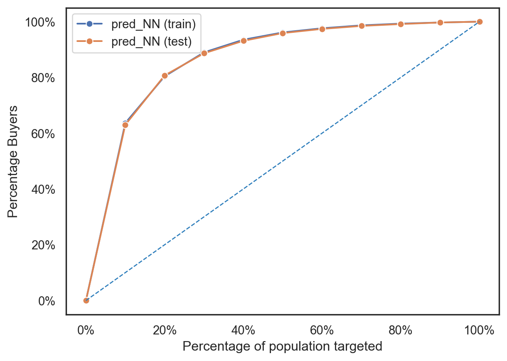
from sklearn import metrics
# prediction on training set
pred = pentathlon_nptb.query("training == 1")['pred_NN']
actual = pentathlon_nptb.query("training == 1")['buyer_yes']
fpr, tpr, thresholds = metrics.roc_curve(actual, pred)
metrics.auc(fpr, tpr).round(5)0.89011# prediction on test set
pred = pentathlon_nptb.query("training == 0")['pred_NN']
actual = pentathlon_nptb.query("training == 0")['buyer_yes']
fpr, tpr, thresholds = metrics.roc_curve(actual, pred)
metrics.auc(fpr, tpr).round(5)0.88819We can conclude that:
The AUC for the training set is 0.890, which indicates that the model has a very good ability to distinguish between the two classes in the training data.
The AUC for the test set is 0.888, which is nearly the same as the training AUC. This means that the model is generalizing well to new data and not overfitting to the training data. The small decrease from training to test is nearly negligible.
1. Create predictions
# Check for all unique message values in the dataset and count how many
pentathlon_nptb["message"].value_counts()message
control 87260
racquet 87088
team 86792
backcountry 86604
water 85120
strength 84280
endurance 82856
Name: count, dtype: int64# Create predictions for different scenarios where the message variable is set to specific values
pentathlon_nptb["p_control_nn"] = NN_best.predict(pentathlon_nptb, data_cmd={"message": "control"})["prediction"]
pentathlon_nptb["p_racquet_nn"] = NN_best.predict(pentathlon_nptb, data_cmd={"message": "racquet"})["prediction"]
pentathlon_nptb["p_team_nn"] = NN_best.predict(pentathlon_nptb, data_cmd={"message": "team"})["prediction"]
pentathlon_nptb["p_backcountry_nn"] = NN_best.predict(pentathlon_nptb, data_cmd={"message": "backcountry"})["prediction"]
pentathlon_nptb["p_water_nn"] = NN_best.predict(pentathlon_nptb, data_cmd={"message": "water"})["prediction"]
pentathlon_nptb["p_strength_nn"] = NN_best.predict(pentathlon_nptb, data_cmd={"message": "strength"})["prediction"]
pentathlon_nptb["p_endurance_nn"] = NN_best.predict(pentathlon_nptb, data_cmd={"message": "endurance"})["prediction"]
pentathlon_nptb| custid | buyer | total_os | message | age | female | income | education | children | freq_endurance | ... | ordersize_random_reg | ep_random_lr | pred_NN | p_control_nn | p_racquet_nn | p_team_nn | p_backcountry_nn | p_water_nn | p_strength_nn | p_endurance_nn | |
|---|---|---|---|---|---|---|---|---|---|---|---|---|---|---|---|---|---|---|---|---|---|
| 0 | U1 | no | 0 | team | 30 to 44 | no | 55000 | 19 | 0.8 | 0 | ... | 32.627819 | 0.156712 | 0.011532 | 0.009833 | 0.011503 | 0.011532 | 0.011059 | 0.010634 | 0.011800 | 0.011186 |
| 1 | U3 | no | 0 | backcountry | 45 to 59 | no | 35000 | 22 | 1.0 | 0 | ... | 37.181377 | 0.082633 | 0.002658 | 0.002535 | 0.002404 | 0.003184 | 0.002658 | 0.003101 | 0.003468 | 0.002342 |
| 2 | U13 | no | 0 | endurance | 45 to 59 | yes | 45000 | 33 | 0.7 | 0 | ... | 40.744326 | 0.226274 | 0.008840 | 0.006773 | 0.007218 | 0.008068 | 0.007635 | 0.008054 | 0.009127 | 0.008840 |
| 3 | U20 | no | 0 | water | 45 to 59 | yes | 25000 | 24 | 0.2 | 0 | ... | 15.768889 | 0.015070 | 0.001161 | 0.001065 | 0.001360 | 0.000875 | 0.001357 | 0.001161 | 0.001291 | 0.003342 |
| 4 | U25 | no | 0 | racquet | >= 60 | yes | 65000 | 32 | 1.1 | 1 | ... | 48.946607 | 0.235699 | 0.009574 | 0.007788 | 0.009574 | 0.008922 | 0.008792 | 0.008076 | 0.008884 | 0.008817 |
| ... | ... | ... | ... | ... | ... | ... | ... | ... | ... | ... | ... | ... | ... | ... | ... | ... | ... | ... | ... | ... | ... |
| 599995 | U3462888 | no | 0 | water | >= 60 | yes | 40000 | 26 | 0.6 | 0 | ... | 38.698478 | 0.031609 | 0.001644 | 0.001504 | 0.001932 | 0.001207 | 0.001928 | 0.001644 | 0.001835 | 0.004317 |
| 599996 | U3462900 | no | 0 | team | < 30 | no | 55000 | 32 | 0.9 | 3 | ... | 29.767369 | 0.091593 | 0.004586 | 0.003494 | 0.003388 | 0.004586 | 0.003605 | 0.004077 | 0.004503 | 0.002707 |
| 599997 | U3462902 | no | 0 | team | < 30 | yes | 55000 | 32 | 0.9 | 0 | ... | 32.707711 | 0.107603 | 0.002481 | 0.001935 | 0.002163 | 0.002481 | 0.001966 | 0.001951 | 0.002062 | 0.001856 |
| 599998 | U3462916 | no | 0 | team | < 30 | no | 50000 | 35 | 0.6 | 2 | ... | 25.117259 | 0.068280 | 0.003051 | 0.002224 | 0.002025 | 0.003051 | 0.002200 | 0.002624 | 0.002867 | 0.001594 |
| 599999 | U3462922 | no | 0 | endurance | 30 to 44 | yes | 50000 | 25 | 0.7 | 1 | ... | 29.102240 | 0.138029 | 0.002656 | 0.003538 | 0.003329 | 0.004762 | 0.003617 | 0.004233 | 0.004701 | 0.002656 |
600000 rows × 63 columns
repl = {
"p_control_nn": "control",
"p_endurance_nn": "endurance",
"p_backcountry_nn": "backcountry",
"p_racquet_nn": "racquet",
"p_strength_nn": "strength",
"p_team_nn": "team",
"p_water_nn": "water"}# extending the prediction to the full database to see distribution
predictions_nn = [
"p_control_nn",
"p_endurance_nn",
"p_backcountry_nn",
"p_racquet_nn",
"p_strength_nn",
"p_team_nn",
"p_water_nn"]# extending the prediction to the full database to see distribution
pentathlon_nptb["message_nn"] = pentathlon_nptb[predictions_nn].idxmax(axis=1)
pentathlon_nptb["message_nn"].value_counts()message_nn
p_endurance_nn 321011
p_strength_nn 161291
p_team_nn 106081
p_racquet_nn 11617
Name: count, dtype: int64# Find the maximum probability of purchase
pentathlon_nptb["p_max_nn"] = pentathlon_nptb[predictions_nn].max(axis=1)Approach: First of all, a neural network model was built to predict the next product to buy using buyer_yes as the response variable and the other variables as predictors. The model was trained using the training data and then used to predict the probability of purchasing for the test data. The model was then used to predict the probability of purchasing for the full database. To predict the probability of purchasing for different messages, we use the data_cmd to predict the probability of purchasing for different messages.
Finally, we choose the product with the highest probability using idxmax to automatically find the best message for each customer. This command also provides a label for the category with the maximum predicted probability of buying across all the products. Then, p_max was created to store the maximum predicted probability of purchasing for the best message selected for each customer.
2. Percentage of customersfor whom that message or not message
# create a crosstab to see which products should we send to each customer.
pd.crosstab(index=pentathlon_nptb[pentathlon_nptb.training == 0].message_nn, columns="count").apply(rsm.format_nr)| col_0 | count |
|---|---|
| message_nn | |
| p_endurance_nn | 96,065 |
| p_racquet_nn | 3,473 |
| p_strength_nn | 48,593 |
| p_team_nn | 31,869 |
# percentage of customers for whom that message is the best message
pentathlon_nptb["message_nn"].value_counts(normalize=True)message_nn
p_endurance_nn 0.535018
p_strength_nn 0.268818
p_team_nn 0.176802
p_racquet_nn 0.019362
Name: proportion, dtype: float64edurance: The distribution suggests thatendurance, related messages resonate significantly more with the customers than the other messages.team: While not as dominant asendurance, related messages also play an important role. There might be opportunities to further optimize or tailor these messages to increase their effectiveness.Other categories such as
strength,racquet, andwater, have much smaller proportions, suggesting that they are less often the best choice for maximizing the probability of purchase.backcountrywas not included in the original dataset, so it is not surprising that it is not the best message for any customer.`
# average purchase probability if we send the message for each product to everyone
pentathlon_nptb.loc[pentathlon_nptb.training == 0, predictions_nn].agg("mean").sort_values(
ascending=False).apply(rsm.format_nr, perc=True)p_endurance_nn 2.75%
p_strength_nn 2.64%
p_water_nn 2.42%
p_team_nn 2.37%
p_backcountry_nn 2.33%
p_racquet_nn 2.29%
p_control_nn 2.14%
dtype: object3. Expected profit
# Calculate the avg order size/message
ordersize = pentathlon_nptb[(pentathlon_nptb.training == 1) & (pentathlon_nptb.buyer_yes == 1)].groupby("message")["total_os"].mean()
ordersize/var/folders/28/cfl1_cfs3bb536qkz8wkys_w0000gn/T/ipykernel_31928/3828228129.py:2: FutureWarning:
The default of observed=False is deprecated and will be changed to True in a future version of pandas. Pass observed=False to retain current behavior or observed=True to adopt the future default and silence this warning.
message
backcountry 64.034091
control 49.900598
endurance 55.584893
racquet 56.405620
strength 56.708751
team 56.522449
water 61.957343
Name: total_os, dtype: float64NN_os = rsm.model.mlp(
data={"pentathlon_nptb": pentathlon_nptb[pentathlon_nptb["training"] == 1]},
rvar = "total_os",
evar = evar,
hidden_layer_sizes = (1,), # Simple NN with 1 hidden layer
mod_type = 'regression'
)
NN_os.summary()Multi-layer Perceptron (NN)
Data : pentathlon_nptb
Response variable : total_os
Explanatory variables: message, age, female, income, education, children, freq_endurance, freq_strength, freq_water, freq_team, freq_backcountry, freq_racquet
Model type : regression
Nr. of features : (12, 19)
Nr. of observations : 420,000
Hidden_layer_sizes : (1,)
Activation function : tanh
Solver : lbfgs
Alpha : 0.0001
Batch size : auto
Learning rate : 0.001
Maximum iterations : 10000
random_state : 1234
Model fit :
n r2 mse mae
420000 0.109 0.891 0.179
Raw data :
message age female income education children freq_endurance freq_strength freq_water freq_team freq_backcountry freq_racquet
team 30 to 44 no 55000 19 0.8 0 4 0 4 0 1
endurance 45 to 59 yes 45000 33 0.7 0 0 0 0 2 2
water 45 to 59 yes 25000 24 0.2 0 0 0 0 0 0
strength < 30 yes 25000 18 0.3 0 0 0 0 0 0
strength >= 60 yes 65000 36 1.2 1 1 0 2 0 3
Estimation data :
income education children freq_endurance freq_strength freq_water freq_team freq_backcountry freq_racquet message_control message_endurance message_racquet message_strength message_team message_water age_30 to 44 age_45 to 59 age_>= 60 female_no
0.388655 -0.663713 -0.265321 -0.640336 1.100861 -0.261727 1.892088 -0.690593 0.058975 False False False False True False True False False True
-0.184052 0.279378 -0.479844 -0.640336 -0.706563 -0.261727 -0.620020 1.958233 0.882489 False True False False False False False True False False
-1.329467 -0.326895 -1.552460 -0.640336 -0.706563 -0.261727 -0.620020 -0.690593 -0.764538 False False False False False True False True False False
-1.329467 -0.731077 -1.337937 -0.640336 -0.706563 -0.261727 -0.620020 -0.690593 -0.764538 False False False True False False False False False False
0.961362 0.481469 0.592772 0.060592 -0.254707 -0.261727 0.636034 -0.690593 1.706002 False False False True False False False False True FalseModel Tuning
# NN_os = rsm.load_state("./data/NN_os.pkl")['NN_os']Again, after fine-tuning the model in a separate notebook, we preserved the model’s state with save_state. To reintegrate it into the main notebook, load_state was utilized. However, due to GitHub’s file evaluation constraints, we are unable to successfully pass the automated tests using the aforementioned code. Should you wish to review our tuned model, please refer to the auxiliary notebooks. You can replicate our steps there by employing the provided code above
# NN_os.best_params_# NN_cv.best_score_.round(3)NN_os_best = rsm.model.mlp(
data={"pentathlon_nptb": pentathlon_nptb[pentathlon_nptb["training"] == 1]},
rvar="total_os",
evar= evar,
alpha = 0.0001,
hidden_layer_sizes = (3, 3),
mod_type='regression'
)
NN_os_best.summary()Multi-layer Perceptron (NN)
Data : pentathlon_nptb
Response variable : total_os
Explanatory variables: message, age, female, income, education, children, freq_endurance, freq_strength, freq_water, freq_team, freq_backcountry, freq_racquet
Model type : regression
Nr. of features : (12, 19)
Nr. of observations : 420,000
Hidden_layer_sizes : (3, 3)
Activation function : tanh
Solver : lbfgs
Alpha : 0.0001
Batch size : auto
Learning rate : 0.001
Maximum iterations : 10000
random_state : 1234
Model fit :
n r2 mse mae
420000 0.114 0.886 0.175
Raw data :
message age female income education children freq_endurance freq_strength freq_water freq_team freq_backcountry freq_racquet
team 30 to 44 no 55000 19 0.8 0 4 0 4 0 1
endurance 45 to 59 yes 45000 33 0.7 0 0 0 0 2 2
water 45 to 59 yes 25000 24 0.2 0 0 0 0 0 0
strength < 30 yes 25000 18 0.3 0 0 0 0 0 0
strength >= 60 yes 65000 36 1.2 1 1 0 2 0 3
Estimation data :
income education children freq_endurance freq_strength freq_water freq_team freq_backcountry freq_racquet message_control message_endurance message_racquet message_strength message_team message_water age_30 to 44 age_45 to 59 age_>= 60 female_no
0.388655 -0.663713 -0.265321 -0.640336 1.100861 -0.261727 1.892088 -0.690593 0.058975 False False False False True False True False False True
-0.184052 0.279378 -0.479844 -0.640336 -0.706563 -0.261727 -0.620020 1.958233 0.882489 False True False False False False False True False False
-1.329467 -0.326895 -1.552460 -0.640336 -0.706563 -0.261727 -0.620020 -0.690593 -0.764538 False False False False False True False True False False
-1.329467 -0.731077 -1.337937 -0.640336 -0.706563 -0.261727 -0.620020 -0.690593 -0.764538 False False False True False False False False False False
0.961362 0.481469 0.592772 0.060592 -0.254707 -0.261727 0.636034 -0.690593 1.706002 False False False True False False False False True Falsepentathlon_nptb["pos_control_nn"] = NN_os_best.predict(pentathlon_nptb, data_cmd={"message": "control"})["prediction"]
pentathlon_nptb["pos_racquet_nn"] = NN_os_best.predict(pentathlon_nptb, data_cmd={"message": "racquet"})["prediction"]
pentathlon_nptb["pos_team_nn"] = NN_os_best.predict(pentathlon_nptb, data_cmd={"message": "team"})["prediction"]
pentathlon_nptb["pos_backcountry_nn"] = NN_os_best.predict(pentathlon_nptb, data_cmd={"message": "backcountry"})["prediction"]
pentathlon_nptb["pos_water_nn"] = NN_os_best.predict(pentathlon_nptb, data_cmd={"message": "water"})["prediction"]
pentathlon_nptb["pos_strength_nn"] = NN_os_best.predict(pentathlon_nptb, data_cmd={"message": "strength"})["prediction"]
pentathlon_nptb["pos_endurance_nn"] = NN_os_best.predict(pentathlon_nptb, data_cmd={"message": "endurance"})["prediction"]pentathlon_nptb["ep_control_nn"] = pentathlon_nptb["p_control_nn"] * pentathlon_nptb["pos_control_reg"] * 0.4
pentathlon_nptb["ep_racquet_nn"] = pentathlon_nptb["p_racquet_nn"] * pentathlon_nptb["pos_racquet_reg"] * 0.4
pentathlon_nptb["ep_team_nn"] = pentathlon_nptb["p_team_nn"] * pentathlon_nptb["pos_team_reg"] * 0.4
pentathlon_nptb["ep_backcountry_nn"] = pentathlon_nptb["p_backcountry_nn"] * pentathlon_nptb["pos_backcountry_reg"] * 0.4
pentathlon_nptb["ep_water_nn"] = pentathlon_nptb["p_water_nn"] * pentathlon_nptb["pos_water_reg"] * 0.4
pentathlon_nptb["ep_strength_nn"] = pentathlon_nptb["p_strength_nn"] * pentathlon_nptb["pos_strength_reg"] * 0.4
pentathlon_nptb["ep_endurance_nn"] = pentathlon_nptb["p_endurance_nn"] * pentathlon_nptb["pos_endurance_reg"] * 0.4expected_profit_nn = [
"ep_control_nn",
"ep_endurance_nn",
"ep_backcountry_nn",
"ep_racquet_nn",
"ep_strength_nn",
"ep_team_nn",
"ep_water_nn"]repl = {"ep_control_nn": "control", "ep_endurance_nn": "endurance", "ep_backcountry_nn": "backcountry", "ep_racquet_nn": "racquet", "ep_strength_nn": "strength", "ep_team_nn": "team", "ep_water_nn": "water"}
pentathlon_nptb["ep_message_nn"] = (
pentathlon_nptb[expected_profit_nn]
.idxmax(axis=1)
.map(repl)
)4. Respective message maximizes expected profit
pentathlon_nptb.ep_message_nn.value_counts(normalize=True)ep_message_nn
endurance 0.369478
team 0.245130
water 0.221107
strength 0.110613
backcountry 0.024117
racquet 0.019118
control 0.010437
Name: proportion, dtype: float64The message that most customers respond the best to is endurance holding close to almost half of the customer. Messages such as backcountry, racquet, and control are not the best choice for nearly any customer. The remaining three messages, team, strength, and water, are the best choice for a small proportion of customers.
5. Expected profit/customer
pentathlon_nptb["ep_max_nn"] = pentathlon_nptb[expected_profit_nn].max(axis=1)
pentathlon_nptb["ep_max_nn"].mean()0.6816084703184525pd.crosstab(index=pentathlon_nptb[pentathlon_nptb.training == 0].ep_message_nn, columns="count").apply(rsm.format_nr)| col_0 | count |
|---|---|
| ep_message_nn | |
| backcountry | 4,371 |
| control | 1,914 |
| endurance | 66,071 |
| racquet | 3,429 |
| strength | 19,986 |
| team | 44,334 |
| water | 39,895 |
6. Expected profit per e-mailed customer if every customer receives the same message
(
pentathlon_nptb
.loc[pentathlon_nptb.training == 0, expected_profit_nn]
.agg("mean")
.sort_values(ascending=False)
.apply(rsm.format_nr, sym = "$", dec = 2)
)ep_endurance_nn $0.61
ep_strength_nn $0.6
ep_water_nn $0.6
ep_backcountry_nn $0.59
ep_team_nn $0.53
ep_racquet_nn $0.52
ep_control_nn $0.43
dtype: objectTo no surprise, sending no message yields the lowest expected profit per customer. The message that maximizes the expected profit per customer are endurance and strength tied. The remaining messages of team, water, backcountry yield slightly less than strength and endurance. Racquet yields slightly more than sending no message but still less than the other messages.
7. Expected profit per e-mailed customer if every customer is assigned randomly to one of the messages options
# probabilty of purchase where customer is assigned to a random message
pentathlon_nptb["p_random_nn"] = NN_best.predict(pentathlon_nptb)["prediction"]
# expected avg order size where customer is assigned to a random message
pentathlon_nptb["ordersize_random_nn"] = NN_os_best.predict(pentathlon_nptb)["prediction"]
# expected profit where customer is assigned to a random message
pentathlon_nptb["ep_random_nn"] = pentathlon_nptb["p_random_nn"] * pentathlon_nptb["ordersize_random_nn"] * 0.4
# expected profit per customer where customer is assigned to a random message
random_profit_per_customer = pentathlon_nptb.loc[pentathlon_nptb.training == 0, "ep_random_nn"].mean()
random_profit_per_customer0.1078448520217575# expected profit where no-message is sent (control)
pentathlon_nptb["ep_control_nn"]
# expected profit per customer where no-message is sent (control)
control_profit_per_customer = pentathlon_nptb.loc[pentathlon_nptb.training == 0, "ep_control_nn"].mean()
control_profit_per_customer0.43351091046912278. Expected profit for 5,000,000 customers
# Profit where each customer is assigned to the message with the highest expected profit
profit_nn = pentathlon_nptb.loc[pentathlon_nptb.training == 0, "ep_max_nn"].agg("mean") * 5000000
profit_nn3430076.6444671643# Profit where each customer is sent to a random message
random_profit_nn = random_profit_per_customer * 5000000
random_profit_nn539224.2601087876# Profit where no message is sent
control_profit_nn = control_profit_per_customer * 5000000
control_profit_nn2167554.5523456135profit_improvement_nn = profit_nn - control_profit_nn
profit_improvement_nn1262522.0921215508profits_dct = {
"Customize Message": profit_nn,
"Randomly Assign": random_profit_nn,
"No Message Sent": control_profit_nn,
}
import seaborn as sns
import matplotlib.pyplot as plt
# Convert dictionary to DataFrame
df = pd.DataFrame(list(profits_dct.items()), columns=['Model', 'Profit'])
plt.figure(figsize=(10, 5))
# Plot
sns.set(style="whitegrid")
ax = sns.barplot(x="Model", y="Profit", data=df, palette="viridis")
# Annotations
for index, row in df.iterrows():
ax.text(index, row.Profit, f'${row.Profit:.2f}', ha='center')
# Set labels and title
ax.set_xlabel("Model Type", fontdict={'family': 'serif', 'color': 'black', 'size': 12})
ax.set_ylabel("Profit", fontdict={'family': 'serif', 'color': 'black', 'size': 12})
ax.set_title("Profit by Model", fontdict={'family': 'serif', 'color': 'black', 'size': 15})
plt.xticks(rotation=45)
plt.show()/var/folders/28/cfl1_cfs3bb536qkz8wkys_w0000gn/T/ipykernel_31928/3855792413.py:16: FutureWarning:
Passing `palette` without assigning `hue` is deprecated and will be removed in v0.14.0. Assign the `x` variable to `hue` and set `legend=False` for the same effect.
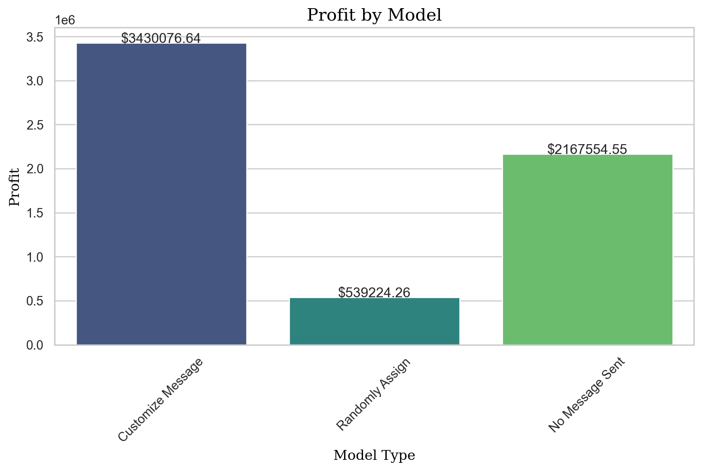
Random Forest Model
Train a Random Forest Model to predict the next product to buy
rf = rsm.model.rforest(
data = {'NPTB': pentathlon_nptb.query("training == 1")},
rvar = 'buyer',
lev = 'yes',
evar = evar,
)
rf.summary()Random Forest
Data : NPTB
Response variable : buyer
Level : yes
Explanatory variables: message, age, female, income, education, children, freq_endurance, freq_strength, freq_water, freq_team, freq_backcountry, freq_racquet
OOB : True
Model type : classification
Nr. of features : (12, 21)
Nr. of observations : 420,000
max_features : sqrt (4)
n_estimators : 100
min_samples_leaf : 1
random_state : 1234
AUC : 0.825
Estimation data :
income education children freq_endurance freq_strength freq_water freq_team freq_backcountry freq_racquet message_backcountry message_control message_endurance message_racquet message_strength message_team message_water age_< 30 age_30 to 44 age_45 to 59 age_>= 60 female_no
55000 19 0.8 0 4 0 4 0 1 False False False False False True False False True False False True
45000 33 0.7 0 0 0 0 2 2 False False True False False False False False False True False False
25000 24 0.2 0 0 0 0 0 0 False False False False False False True False False True False False
25000 18 0.3 0 0 0 0 0 0 False False False False True False False True False False False False
65000 36 1.2 1 1 0 2 0 3 False False False False True False False False False False True FalseWe want to also use a random forest model to predict the next product to buy and see if we can create a robust NPTB model that accurately can predict which product a customer would purchase based on the messaging we send them. Above, we are training our base random forest model, and we will use this base random forest model to tune our hyperparameters, as seen below.
Some interesting key features of the output of this random forest model is the AUC value. In our base model, we see that the AUC is a 0.818. This is a decent value for AUC, with anything over 0.5 typically being considered a good model.
Random Forest Model Tuning
#max_features = [None, 'auto', 'sqrt', 'log2', 0.25, 0.5, 0.75, 1.0]
#n_estimators = [10, 50, 100, 200, 500, 1000]
#param_grid = {"max_features": max_features, "n_estimators": n_estimators}
#scoring = {"AUC": "roc_auc"}
#rf_cv = GridSearchCV(rf.fitted, param_grid, scoring=scoring, cv=5, n_jobs=2, refit="AUC", verbose=5)Below is the code for the grid search of a very large matrix. I would not recommend running this, as it takes a very long time to run. However, I have included the code for the grid search below.
rf_cv.fit(rf.data_onehot, rf.data.buyer_yes)
::: {#bdc7b1cb .cell execution_count=107}
``` {.python .cell-code}
#rf_cv.fit(rf_treatment.data_onehot, rf_treatment.data.buyer_yes):::
Above, we conduct a grid search to identify which hyperparameters are best for our random forest model. However, when running a gridsearch this large, we ran into a computational cost issue that caused either our hyperparameter grid search to run for 4 hours, or caused the kernel to crash. Therefore, we conducted multiple step-wise grid searches where we limited the gridsearch matrix size, and went through the various iterations of combinations to see which parameters created the most robut model. Below, you can see the various rounds of model tuning.
Random Forest Model Tuning - Stepwise, limiting the grid search
#max_features1 = ['sqrt']
#n_estimators1 = [1000, 2000]
#param_grid = {"max_features": max_features1, "n_estimators": n_estimators1}
#scoring = {"AUC": "roc_auc"}
#rf_cv_treatment1 = GridSearchCV(rf_treatment.fitted, param_grid, scoring=scoring, cv=4, n_jobs=2, refit="AUC", verbose=5)Because our random forest model took over 4 hours to run previously, we decided to limit the grid search to 9 iterations. Our goal is to create a balance between exploring the hyperparameter space and keeping the computational cost reasonable.
#rf_cv_treatment1.fit(rf_treatment.data_onehot, rf_treatment.data.buyer_yes)#rf_cv_treatment1.best_params_As seen above, the grid search identified that the best parameters were as follows: - max_features: ‘sqrt’ - n_estimators: 1000
When we run our random forest model with the best parameters identified from the grid search, the AUC score is approximately 0.862.
rf_tuned = rsm.model.rforest(
data = {'NPTB': pentathlon_nptb.query("training == 1")},
rvar = 'buyer',
lev = 'yes',
evar = evar,
n_estimators = 1000,
max_features = 'sqrt'
)
rf_tuned.summary()Random Forest
Data : NPTB
Response variable : buyer
Level : yes
Explanatory variables: message, age, female, income, education, children, freq_endurance, freq_strength, freq_water, freq_team, freq_backcountry, freq_racquet
OOB : True
Model type : classification
Nr. of features : (12, 21)
Nr. of observations : 420,000
max_features : sqrt (4)
n_estimators : 1000
min_samples_leaf : 1
random_state : 1234
AUC : 0.864
Estimation data :
income education children freq_endurance freq_strength freq_water freq_team freq_backcountry freq_racquet message_backcountry message_control message_endurance message_racquet message_strength message_team message_water age_< 30 age_30 to 44 age_45 to 59 age_>= 60 female_no
55000 19 0.8 0 4 0 4 0 1 False False False False False True False False True False False True
45000 33 0.7 0 0 0 0 2 2 False False True False False False False False False True False False
25000 24 0.2 0 0 0 0 0 0 False False False False False False True False False True False False
25000 18 0.3 0 0 0 0 0 0 False False False False True False False True False False False False
65000 36 1.2 1 1 0 2 0 3 False False False False True False False False False False True Falsepentathlon_nptb['pred_rf'] = rf_tuned.predict(pentathlon_nptb)['prediction']
pentathlon_nptb['pred_rf'].mean()0.025235874483417724dct_rf = {"train_rf": pentathlon_nptb.query("training == 1"), "test_rf": pentathlon_nptb.query("training == 0")}
fig = rsm.gains_plot(dct_rf, "buyer", "yes", "pred_rf")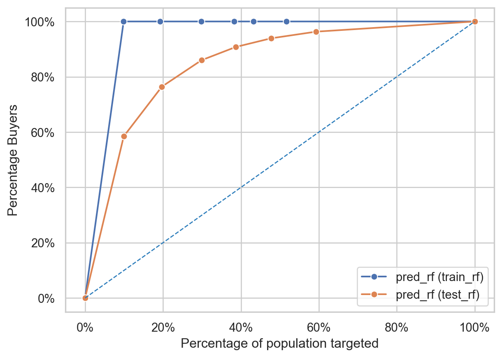
The gains chart above is a visual representation of the AUC score. The gains chart shows the percentage of the total number of cases in a given category that are captured by the model. Based on the steep rise at the beginning of the curve, indicates that the model is effective at ranking the positive events, i.e.. buyers, higher than the negative ones. The more steep the initial part of the curve, the better the model is at identifying the positive events early on when you start targeting the population based on the model’s scores.
In this specific chart, the model seems to perform fairly well, particularly because the initial sections of both curves are quite steep, indicating that a significant percentage of the positive events can be captured by targeting a relatively small percentage of the population.
from sklearn import metricsdef apply_rand_message(data, pred_col, message_col):
np.random.seed(1234)
data["random_number"] = np.random.randint(2, size = len(data))
data["random_message"] = rsm.ifelse(data["random_number"] == 1, data[message_col], "no message")
data["random_pred"] = rsm.ifelse(data["random_number"] == 1, data[pred_col], 0)
return data# prediction on training data
pred_rf = pentathlon_nptb.query("training == 1")["pred_rf"]
actual_rf = pentathlon_nptb.query("training == 1")["buyer_yes"]
fpr, tpr, thresholds = metrics.roc_curve(actual_rf, pred_rf)
metrics.auc(fpr, tpr).round(3)1.0# prediction on test data
pred_rf = pentathlon_nptb.query("training == 0")["pred_rf"]
actual_rf = pentathlon_nptb.query("training == 0")["buyer_yes"]
fpr, tpr, thresholds = metrics.roc_curve(actual_rf, pred_rf)
metrics.auc(fpr, tpr).round(3)0.869Based on the Gains Chart, and the AUC values for the test and training set, we can conclude that the model is performing decently well. Because of the perfect AUC score on the training data, there is a slight hesitation that the model may be overfitting. However, the AUC score on the test data is still quite high, indicating that the model is generalizing well.
The AUC for the training set is 1, which indicates that the model has a very good ability to distinguish between the two classes in the training data. This is also supported by the steep increase in the first part of the gains chart in the training data. The AUC for the test set is 0.865, which is slightly lower but still indicates a very good predictive performance on unseen data.
1. Create prediction for each product
pentathlon_nptb['p_control_rf'] = rf_tuned.predict(pentathlon_nptb, data_cmd={"message": "control"})["prediction"]
pentathlon_nptb['p_racquet_rf'] = rf_tuned.predict(pentathlon_nptb, data_cmd={"message": "racquet"})["prediction"]
pentathlon_nptb['p_team_rf'] = rf_tuned.predict(pentathlon_nptb, data_cmd={"message": "team"})["prediction"]
pentathlon_nptb['p_backcountry_rf'] = rf_tuned.predict(pentathlon_nptb, data_cmd={"message": "backcountry"})["prediction"]
pentathlon_nptb['p_water_rf'] = rf_tuned.predict(pentathlon_nptb, data_cmd={"message": "water"})["prediction"]
pentathlon_nptb['p_strength_rf'] = rf_tuned.predict(pentathlon_nptb, data_cmd={"message": "strength"})["prediction"]
pentathlon_nptb['p_endurance_rf'] = rf_tuned.predict(pentathlon_nptb, data_cmd={"message": "endurance"})["prediction"]pentathlon_nptb| custid | buyer | total_os | message | age | female | income | education | children | freq_endurance | ... | ordersize_random_nn | ep_random_nn | pred_rf | p_control_rf | p_racquet_rf | p_team_rf | p_backcountry_rf | p_water_rf | p_strength_rf | p_endurance_rf | |
|---|---|---|---|---|---|---|---|---|---|---|---|---|---|---|---|---|---|---|---|---|---|
| 0 | U1 | no | 0 | team | 30 to 44 | no | 55000 | 19 | 0.8 | 0 | ... | 0.404840 | 0.001868 | 0.001000 | 0.004 | 0.001 | 0.001 | 0.008000 | 0.012 | 0.028 | 0.070000 |
| 1 | U3 | no | 0 | backcountry | 45 to 59 | no | 35000 | 22 | 1.0 | 0 | ... | 0.162739 | 0.000173 | 0.000000 | 0.000 | 0.000 | 0.000 | 0.000000 | 0.000 | 0.000 | 0.000000 |
| 2 | U13 | no | 0 | endurance | 45 to 59 | yes | 45000 | 33 | 0.7 | 0 | ... | 0.604567 | 0.002138 | 0.001000 | 0.002 | 0.000 | 0.002 | 0.001333 | 0.000 | 0.000 | 0.001000 |
| 3 | U20 | no | 0 | water | 45 to 59 | yes | 25000 | 24 | 0.2 | 0 | ... | -0.002303 | -0.000001 | 0.000000 | 0.000 | 0.000 | 0.000 | 0.000000 | 0.000 | 0.000 | 0.000000 |
| 4 | U25 | no | 0 | racquet | >= 60 | yes | 65000 | 32 | 1.1 | 1 | ... | 0.780294 | 0.002988 | 0.019000 | 0.009 | 0.019 | 0.007 | 0.023000 | 0.009 | 0.010 | 0.005000 |
| ... | ... | ... | ... | ... | ... | ... | ... | ... | ... | ... | ... | ... | ... | ... | ... | ... | ... | ... | ... | ... | ... |
| 599995 | U3462888 | no | 0 | water | >= 60 | yes | 40000 | 26 | 0.6 | 0 | ... | -0.482575 | -0.000317 | 0.000000 | 0.000 | 0.000 | 0.000 | 0.000000 | 0.000 | 0.000 | 0.000000 |
| 599996 | U3462900 | no | 0 | team | < 30 | no | 55000 | 32 | 0.9 | 3 | ... | 0.155320 | 0.000285 | 0.000000 | 0.001 | 0.001 | 0.000 | 0.000000 | 0.000 | 0.001 | 0.000000 |
| 599997 | U3462902 | no | 0 | team | < 30 | yes | 55000 | 32 | 0.9 | 0 | ... | 0.153595 | 0.000152 | 0.000000 | 0.006 | 0.003 | 0.000 | 0.029000 | 0.005 | 0.010 | 0.003000 |
| 599998 | U3462916 | no | 0 | team | < 30 | no | 50000 | 35 | 0.6 | 2 | ... | -0.042065 | -0.000051 | 0.011000 | 0.002 | 0.005 | 0.011 | 0.001000 | 0.000 | 0.000 | 0.000000 |
| 599999 | U3462922 | no | 0 | endurance | 30 to 44 | yes | 50000 | 25 | 0.7 | 1 | ... | 0.483980 | 0.000514 | 0.021667 | 0.002 | 0.000 | 0.005 | 0.002000 | 0.001 | 0.003 | 0.021667 |
600000 rows × 92 columns
To identify which message will lead to the highest probability of purchase, we will use our random forest model to extrapolate predictions to the full database.
repl = {
"p_control_rf": "control",
"p_endurance_rf": "endurance",
"p_backcountry_rf": "backcountry",
"p_racquet_rf": "racquet",
"p_strength_rf": "strength",
"p_team_rf": "team",
"p_water_rf": "water"}predictions_rf = [
"p_control_rf",
"p_endurance_rf",
"p_backcountry_rf",
"p_racquet_rf",
"p_strength_rf",
"p_team_rf",
"p_water_rf"]pentathlon_nptb['message_rf'] = (
pentathlon_nptb[predictions_rf]
.idxmax(axis=1)
.map(repl)
)The code above is creating a new column in our Pentathlon_NPTB database, called message_rf which identifies which of the predicted messages has the highest probability, and then filling in the message_rf column with the name of the message that has the highest probability.
#plot the distribution of message_rf column
pentathlon_nptb['message_rf'].value_counts().plot(kind='bar', title = 'Distribution of message_rf')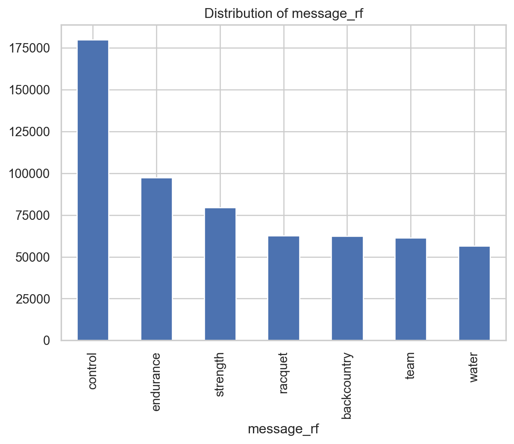
pentathlon_nptb['p_max_rf'] = pentathlon_nptb[predictions_rf].max(axis=1)Approach
Our approach to creating the targeting messaging is building a random forest model to predict the next product the customer will buy based on a variety of customer features. We will use buyer_yes as the response variable and the other variables as predictors.
We use our random forest model to extend the prediction to the full database. To predict the probability of purchasing for different messages, we use the data_cmd to predict the probability of purchasing for different messages.
Finally, we select the product with the highest probability using idxmax. This command also provides a label for the category with the maximum predicted probability of buying across all the products. Then, create p_max to store the maximum predicted probability of purchasing an item based on the messaging sent to said customer.
2. Percentage of customers to message and not to message
pd.crosstab(index=pentathlon_nptb[pentathlon_nptb.training == 0].message_rf, columns="count").apply(rsm.format_nr)| col_0 | count |
|---|---|
| message_rf | |
| backcountry | 18,952 |
| control | 53,019 |
| endurance | 29,327 |
| racquet | 18,859 |
| strength | 23,927 |
| team | 18,809 |
| water | 17,107 |
pentathlon_nptb['message_rf'].value_counts(normalize=True)message_rf
control 0.299772
endurance 0.162343
strength 0.132712
racquet 0.104497
backcountry 0.103977
team 0.102348
water 0.094352
Name: proportion, dtype: float64control: The distribution suggests that thecontrol_rfcontrol messaging seems to resonate more with the customers than the other messages based on this model.endurance,strength: theenduranceandstrengthmessages are approximately similar in their values. There might be opportunities to further optimize or tailor these messages to increase their effectiveness.backcountry,racquet,water,team, all have roughly the same proportion of customers to message at around 10%. This suggests that these messages are not as effective as thecontrolandendurancemessages.
pentathlon_nptb['message_rf'].value_counts(normalize=True).plot(kind='bar', title='Message Distribution')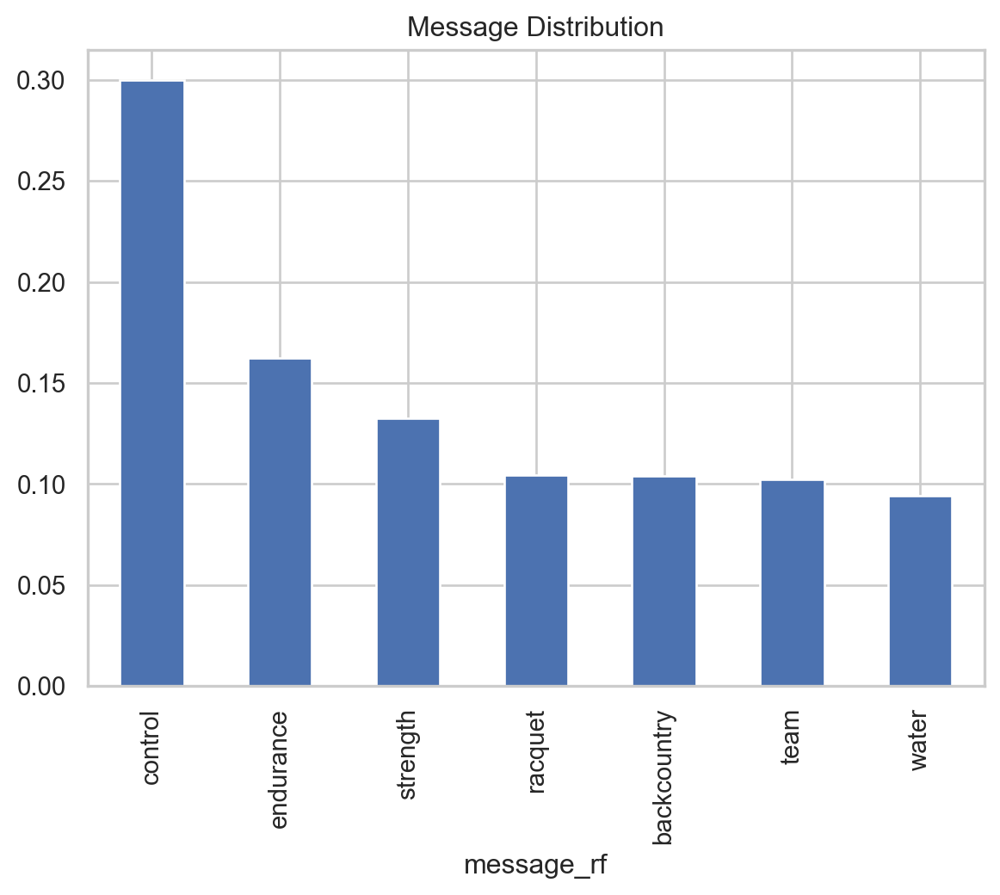
pentathlon_nptb.loc[pentathlon_nptb.training == 0, predictions_rf].agg("mean").sort_values(
ascending=False).apply(rsm.format_nr, perc=True)p_endurance_rf 2.91%
p_strength_rf 2.79%
p_water_rf 2.63%
p_team_rf 2.61%
p_backcountry_rf 2.55%
p_racquet_rf 2.55%
p_control_rf 2.43%
dtype: objectAbove is a table with the average purchase probability if we send the message for each product to everyone. Even though we are sending much more control messages compared to the other categories, we see that this does not lead to an increase in the probability of purchase. This is an interesting insight, and we should consider other ways to optimize our messaging strategy to increase the number of messages sent to those in the endurance and strength categories.
3. Expected profit
#Average Ordersize per message
ordersize = pentathlon_nptb[(pentathlon_nptb.training == 1) & (pentathlon_nptb.buyer_yes == 1)].groupby("message_rf")["total_os"].mean()
ordersizemessage_rf
backcountry 64.065387
control 49.908751
endurance 55.584893
racquet 56.416727
strength 56.684246
team 56.522449
water 61.926676
Name: total_os, dtype: float64Create another random forest model to Predict the Ordersize
rf_os = rsm.model.rforest(
data = {"pentathlon_nptb": pentathlon_nptb[(pentathlon_nptb.training == 1) & (pentathlon_nptb.buyer == "yes")]},
rvar ="total_os",
evar = evar,
n_estimators = 200,
max_features = 'sqrt'
)
rf_os.summary()Random Forest
Data : pentathlon_nptb
Response variable : total_os
Level : None
Explanatory variables: message, age, female, income, education, children, freq_endurance, freq_strength, freq_water, freq_team, freq_backcountry, freq_racquet
OOB : True
Model type : classification
Nr. of features : (12, 21)
Nr. of observations : 10,080
max_features : sqrt (4)
n_estimators : 200
min_samples_leaf : 1
random_state : 1234
AUC : nan
Estimation data :
income education children freq_endurance freq_strength freq_water freq_team freq_backcountry freq_racquet message_backcountry message_control message_endurance message_racquet message_strength message_team message_water age_< 30 age_30 to 44 age_45 to 59 age_>= 60 female_no
65000 52 0.5 3 0 0 2 1 3 False False True False False False False False False True False True
55000 43 0.2 1 2 0 0 2 0 False True False False False False False False False True False True
160000 82 1.3 13 5 0 15 5 2 True False False False False False False False True False False True
90000 60 1.2 7 2 2 5 0 1 True False False False False False False False False True False True
55000 40 0.7 0 1 0 1 1 0 False False False False True False False False True False False True/Users/duyentran/Library/Python/3.11/lib/python/site-packages/pyrsm/model/perf.py:1240: RuntimeWarning:
invalid value encountered in scalar divide
pentathlon_nptb['pos_control_rf'] = rf_os.predict(pentathlon_nptb, data_cmd={"message": "control"})["prediction"]
pentathlon_nptb['pos_racquet_rf'] = rf_os.predict(pentathlon_nptb, data_cmd={"message": "racquet"})["prediction"]
pentathlon_nptb['pos_team_rf'] = rf_os.predict(pentathlon_nptb, data_cmd={"message": "team"})["prediction"]
pentathlon_nptb['pos_backcountry_rf'] = rf_os.predict(pentathlon_nptb, data_cmd={"message": "backcountry"})["prediction"]
pentathlon_nptb['pos_water_rf'] = rf_os.predict(pentathlon_nptb, data_cmd={"message": "water"})["prediction"]
pentathlon_nptb['pos_strength_rf'] = rf_os.predict(pentathlon_nptb, data_cmd={"message": "strength"})["prediction"]
pentathlon_nptb['pos_endurance_rf'] = rf_os.predict(pentathlon_nptb, data_cmd={"message": "endurance"})["prediction"]Calculating the expected profit for each product
pentathlon_nptb['ep_control_rf'] = pentathlon_nptb['p_control_rf'] * pentathlon_nptb['pos_control_reg'] * 0.4
pentathlon_nptb['ep_racquet_rf'] = pentathlon_nptb['p_racquet_rf'] * pentathlon_nptb['pos_racquet_reg'] * 0.4
pentathlon_nptb['ep_team_rf'] = pentathlon_nptb['p_team_rf'] * pentathlon_nptb['pos_team_reg'] * 0.4
pentathlon_nptb['ep_backcountry_rf'] = pentathlon_nptb['p_backcountry_rf'] * pentathlon_nptb['pos_backcountry_reg'] * 0.4
pentathlon_nptb['ep_water_rf'] = pentathlon_nptb['p_water_rf'] * pentathlon_nptb['pos_water_reg'] * 0.4
pentathlon_nptb['ep_strength_rf'] = pentathlon_nptb['p_strength_rf'] * pentathlon_nptb['pos_strength_reg'] * 0.4
pentathlon_nptb['ep_endurance_rf'] = pentathlon_nptb['p_endurance_rf'] * pentathlon_nptb['pos_endurance_reg'] * 0.4expected_profit_rf = [
"ep_control_rf",
"ep_endurance_rf",
"ep_backcountry_rf",
"ep_racquet_rf",
"ep_strength_rf",
"ep_team_rf",
"ep_water_rf"]repl = {"ep_control_rf": "control", "ep_endurance_rf": "endurance", "ep_backcountry_rf": "backcountry", "ep_racquet_rf": "racquet", "ep_strength_rf": "strength", "ep_team_rf": "team", "ep_water_rf": "water"}
pentathlon_nptb["ep_message_rf"] = (
pentathlon_nptb[expected_profit_rf]
.idxmax(axis=1)
.map(repl)
)
pentathlon_nptb['ep_message_rf'].value_counts()ep_message_rf
control 171206
endurance 88843
water 72279
strength 71154
backcountry 68671
team 65027
racquet 62820
Name: count, dtype: int644. Percentage of customer for whom no message maximizes their expected profits
pentathlon_nptb.ep_message_rf.value_counts(normalize=True)ep_message_rf
control 0.285343
endurance 0.148072
water 0.120465
strength 0.118590
backcountry 0.114452
team 0.108378
racquet 0.104700
Name: proportion, dtype: float645. Expected profit per email if we customize the message to each customers
pentathlon_nptb["ep_max_rf"] = pentathlon_nptb[expected_profit_rf].max(axis=1)
pentathlon_nptb["ep_max_rf"].mean()1.0516237742883443pd.crosstab(index=pentathlon_nptb[pentathlon_nptb.training == 0].ep_message_rf, columns="count").apply(rsm.format_nr)| col_0 | count |
|---|---|
| ep_message_rf | |
| backcountry | 21,405 |
| control | 50,280 |
| endurance | 26,442 |
| racquet | 18,786 |
| strength | 21,082 |
| team | 19,690 |
| water | 22,315 |
6. Expected profit per e-mailed customer if every customer receives the same message
(
pentathlon_nptb
.loc[pentathlon_nptb.training == 0, expected_profit_rf]
.agg("mean")
.sort_values(ascending=False)
.apply(rsm.format_nr, sym = "$", dec = 2)
)ep_water_rf $0.65
ep_backcountry_rf $0.65
ep_endurance_rf $0.64
ep_strength_rf $0.63
ep_team_rf $0.58
ep_racquet_rf $0.58
ep_control_rf $0.49
dtype: object7. Expected profit per e-mailed customer if every customer is assigned randomly to one of the messages or the no-message condition
# probabilty of purchase where customer is assigned to a random message
pentathlon_nptb["p_random_rf"] = rf.predict(pentathlon_nptb)["prediction"]
# expected avg order size where customer is assigned to a random message
pentathlon_nptb["ordersize_random_reg"] = reg.predict(pentathlon_nptb)["prediction"]
# expected profit when customer is assigned to a random message
pentathlon_nptb["ep_random_rf"] = pentathlon_nptb["p_random_rf"] * pentathlon_nptb["ordersize_random_reg"] * 0.4
# expected profit/customer when a customer is assigned to a random message
random_profit_per_customer_rf = pentathlon_nptb.loc[pentathlon_nptb.training == 0, "ep_random_rf"].mean()
random_profit_per_customer_rf0.5981461370014217# expected profit where no-message is sent (control)
pentathlon_nptb["ep_control_rf"]
# expected profit per customer where no-message is sent (control)
control_profit_per_customer_rf = pentathlon_nptb.loc[pentathlon_nptb.training == 0, "ep_control_rf"].mean()
control_profit_per_customer_rf0.487447141665877058. Profit for 5,000,000 customers
profit_rf = pentathlon_nptb.loc[pentathlon_nptb.training == 0, "ep_max_rf"].agg("mean") * 5000000
profit_rf4947465.355117234# Profit when a customer is sent a random message
random_profit_rf = random_profit_per_customer_rf * 5000000
random_profit_rf
# Profit when there is no message sent
control_profit_rf = control_profit_per_customer_rf * 5000000
control_profit_rf2437235.708329385profit_improvement_rf = profit_rf - control_profit_rf
profit_improvement_rf2510229.6467878493profits_dct_rf = {
"Customize Message": profit_rf,
"Randomly Assign": random_profit_rf,
"No Message Sent": control_profit_rf,
}
import seaborn as sns
import matplotlib.pyplot as plt
# Convert dictionary to DataFrame
df = pd.DataFrame(list(profits_dct_rf.items()), columns=['Model', 'Profit'])
plt.figure(figsize=(10, 5)) # Adjust the width and height to your preference
# Plot
sns.set(style="white")
ax = sns.barplot(x="Model", y="Profit", data=df, palette="coolwarm")
# Annotations
for index, row in df.iterrows():
ax.text(index, row.Profit, f'${row.Profit:.2f}', ha='center')
# Set labels and title
ax.set_xlabel("Model Type", fontdict={'family': 'serif', 'color': 'black', 'size': 12})
ax.set_ylabel("Profit", fontdict={'family': 'serif', 'color': 'black', 'size': 12})
ax.set_title("Profit by Model", fontdict={'family': 'serif', 'color': 'black', 'size': 15})
plt.xticks(rotation=45) # Rotate x labels for better readability
plt.show()/var/folders/28/cfl1_cfs3bb536qkz8wkys_w0000gn/T/ipykernel_31928/2755170672.py:16: FutureWarning:
Passing `palette` without assigning `hue` is deprecated and will be removed in v0.14.0. Assign the `x` variable to `hue` and set `legend=False` for the same effect.
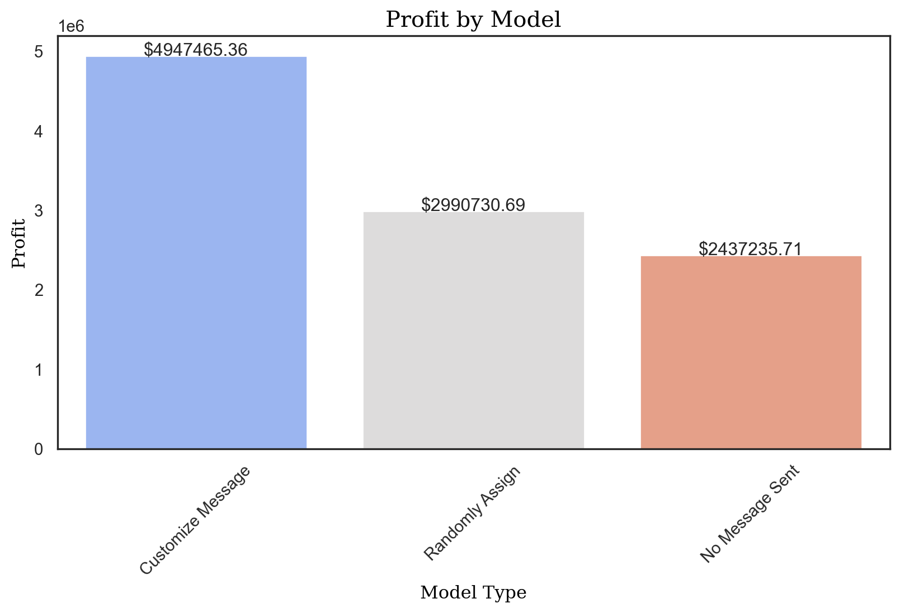
XGBoost Model
rvar = "buyer_yes"
evar = pentathlon_nptb.columns.to_list()
evar = evar[evar.index("message"):] # all columns after "message"
evar = evar[:evar.index("freq_racquet")+1] # all columns before "freq_racquet"
evar['message',
'age',
'female',
'income',
'education',
'children',
'freq_endurance',
'freq_strength',
'freq_water',
'freq_team',
'freq_backcountry',
'freq_racquet']# Create X_train, X_test, y_train, y_test using "training" column
X_train = pentathlon_nptb.loc[pentathlon_nptb['training'] == 1, evar]
X_test = pentathlon_nptb.loc[pentathlon_nptb['training'] == 0, evar]
y_train = pentathlon_nptb.loc[pentathlon_nptb['training'] == 1, rvar]
y_test = pentathlon_nptb.loc[pentathlon_nptb['training'] == 0, rvar]from sklearn.model_selection import GridSearchCV
from xgboost import XGBClassifier
# Define the parameter grid to be used in RandomizedSearchCV
param_grid = {
'learning_rate': [0.1,0.01,0.001],
'n_estimators': [100],
'max_depth': [3, 6 ,10 ] # Depths from 3 to 10
}# Initialize the XGBClassifier
xgb = XGBClassifier(use_label_encoder=False, eval_metric='logloss',enable_categorical = True)# Initialize GridSearchCV
xgb_tuned = GridSearchCV(estimator=xgb, param_grid= param_grid, scoring='roc_auc', cv=5, verbose=5)# Fit the model
xgb_tuned.fit(X_train, y_train)Fitting 5 folds for each of 9 candidates, totalling 45 fits
[CV 1/5] END learning_rate=0.1, max_depth=3, n_estimators=100;, score=0.889 total time= 0.8s
[CV 2/5] END learning_rate=0.1, max_depth=3, n_estimators=100;, score=0.884 total time= 0.7s
[CV 3/5] END learning_rate=0.1, max_depth=3, n_estimators=100;, score=0.890 total time= 0.7s
[CV 4/5] END learning_rate=0.1, max_depth=3, n_estimators=100;, score=0.882 total time= 0.7s
[CV 5/5] END learning_rate=0.1, max_depth=3, n_estimators=100;, score=0.880 total time= 0.7s
[CV 1/5] END learning_rate=0.1, max_depth=6, n_estimators=100;, score=0.891 total time= 1.1s
[CV 2/5] END learning_rate=0.1, max_depth=6, n_estimators=100;, score=0.886 total time= 1.1s
[CV 3/5] END learning_rate=0.1, max_depth=6, n_estimators=100;, score=0.892 total time= 1.1s
[CV 4/5] END learning_rate=0.1, max_depth=6, n_estimators=100;, score=0.884 total time= 1.1s
[CV 5/5] END learning_rate=0.1, max_depth=6, n_estimators=100;, score=0.881 total time= 1.1s
[CV 1/5] END learning_rate=0.1, max_depth=10, n_estimators=100;, score=0.884 total time= 1.6s
[CV 2/5] END learning_rate=0.1, max_depth=10, n_estimators=100;, score=0.879 total time= 1.8s
[CV 3/5] END learning_rate=0.1, max_depth=10, n_estimators=100;, score=0.885 total time= 1.6s
[CV 4/5] END learning_rate=0.1, max_depth=10, n_estimators=100;, score=0.875 total time= 1.7s
[CV 5/5] END learning_rate=0.1, max_depth=10, n_estimators=100;, score=0.874 total time= 1.6s
[CV 1/5] END learning_rate=0.01, max_depth=3, n_estimators=100;, score=0.864 total time= 0.6s
[CV 2/5] END learning_rate=0.01, max_depth=3, n_estimators=100;, score=0.864 total time= 0.6s
[CV 3/5] END learning_rate=0.01, max_depth=3, n_estimators=100;, score=0.870 total time= 0.6s
[CV 4/5] END learning_rate=0.01, max_depth=3, n_estimators=100;, score=0.856 total time= 0.6s
[CV 5/5] END learning_rate=0.01, max_depth=3, n_estimators=100;, score=0.854 total time= 0.6s
[CV 1/5] END learning_rate=0.01, max_depth=6, n_estimators=100;, score=0.880 total time= 1.0s
[CV 2/5] END learning_rate=0.01, max_depth=6, n_estimators=100;, score=0.876 total time= 1.0s
[CV 3/5] END learning_rate=0.01, max_depth=6, n_estimators=100;, score=0.882 total time= 1.0s
[CV 4/5] END learning_rate=0.01, max_depth=6, n_estimators=100;, score=0.873 total time= 1.0s
[CV 5/5] END learning_rate=0.01, max_depth=6, n_estimators=100;, score=0.870 total time= 1.0s
[CV 1/5] END learning_rate=0.01, max_depth=10, n_estimators=100;, score=0.882 total time= 1.6s
[CV 2/5] END learning_rate=0.01, max_depth=10, n_estimators=100;, score=0.876 total time= 1.6s
[CV 3/5] END learning_rate=0.01, max_depth=10, n_estimators=100;, score=0.885 total time= 1.6s
[CV 4/5] END learning_rate=0.01, max_depth=10, n_estimators=100;, score=0.877 total time= 1.6s
[CV 5/5] END learning_rate=0.01, max_depth=10, n_estimators=100;, score=0.875 total time= 1.7s
[CV 1/5] END learning_rate=0.001, max_depth=3, n_estimators=100;, score=0.850 total time= 0.6s
[CV 2/5] END learning_rate=0.001, max_depth=3, n_estimators=100;, score=0.840 total time= 0.5s
[CV 3/5] END learning_rate=0.001, max_depth=3, n_estimators=100;, score=0.848 total time= 0.6s
[CV 4/5] END learning_rate=0.001, max_depth=3, n_estimators=100;, score=0.837 total time= 0.6s
[CV 5/5] END learning_rate=0.001, max_depth=3, n_estimators=100;, score=0.837 total time= 0.5s
[CV 1/5] END learning_rate=0.001, max_depth=6, n_estimators=100;, score=0.874 total time= 1.0s
[CV 2/5] END learning_rate=0.001, max_depth=6, n_estimators=100;, score=0.869 total time= 1.0s
[CV 3/5] END learning_rate=0.001, max_depth=6, n_estimators=100;, score=0.876 total time= 1.0s
[CV 4/5] END learning_rate=0.001, max_depth=6, n_estimators=100;, score=0.867 total time= 0.9s
[CV 5/5] END learning_rate=0.001, max_depth=6, n_estimators=100;, score=0.866 total time= 0.9s
[CV 1/5] END learning_rate=0.001, max_depth=10, n_estimators=100;, score=0.874 total time= 1.5s
[CV 2/5] END learning_rate=0.001, max_depth=10, n_estimators=100;, score=0.869 total time= 1.6s
[CV 3/5] END learning_rate=0.001, max_depth=10, n_estimators=100;, score=0.880 total time= 1.5s
[CV 4/5] END learning_rate=0.001, max_depth=10, n_estimators=100;, score=0.864 total time= 1.4s
[CV 5/5] END learning_rate=0.001, max_depth=10, n_estimators=100;, score=0.868 total time= 1.5sGridSearchCV(cv=5,
estimator=XGBClassifier(base_score=None, booster=None,
callbacks=None, colsample_bylevel=None,
colsample_bynode=None,
colsample_bytree=None, device=None,
early_stopping_rounds=None,
enable_categorical=True,
eval_metric='logloss', feature_types=None,
gamma=None, grow_policy=None,
importance_type=None,
interaction_constraints=None,
learning_rate=N...
max_cat_threshold=None,
max_cat_to_onehot=None,
max_delta_step=None, max_depth=None,
max_leaves=None, min_child_weight=None,
missing=nan, monotone_constraints=None,
multi_strategy=None, n_estimators=None,
n_jobs=None, num_parallel_tree=None,
random_state=None, ...),
param_grid={'learning_rate': [0.1, 0.01, 0.001],
'max_depth': [3, 6, 10], 'n_estimators': [100]},
scoring='roc_auc', verbose=5)In a Jupyter environment, please rerun this cell to show the HTML representation or trust the notebook. On GitHub, the HTML representation is unable to render, please try loading this page with nbviewer.org.
GridSearchCV(cv=5,
estimator=XGBClassifier(base_score=None, booster=None,
callbacks=None, colsample_bylevel=None,
colsample_bynode=None,
colsample_bytree=None, device=None,
early_stopping_rounds=None,
enable_categorical=True,
eval_metric='logloss', feature_types=None,
gamma=None, grow_policy=None,
importance_type=None,
interaction_constraints=None,
learning_rate=N...
max_cat_threshold=None,
max_cat_to_onehot=None,
max_delta_step=None, max_depth=None,
max_leaves=None, min_child_weight=None,
missing=nan, monotone_constraints=None,
multi_strategy=None, n_estimators=None,
n_jobs=None, num_parallel_tree=None,
random_state=None, ...),
param_grid={'learning_rate': [0.1, 0.01, 0.001],
'max_depth': [3, 6, 10], 'n_estimators': [100]},
scoring='roc_auc', verbose=5)XGBClassifier(base_score=None, booster=None, callbacks=None,
colsample_bylevel=None, colsample_bynode=None,
colsample_bytree=None, device=None, early_stopping_rounds=None,
enable_categorical=True, eval_metric='logloss',
feature_types=None, gamma=None, grow_policy=None,
importance_type=None, interaction_constraints=None,
learning_rate=None, max_bin=None, max_cat_threshold=None,
max_cat_to_onehot=None, max_delta_step=None, max_depth=None,
max_leaves=None, min_child_weight=None, missing=nan,
monotone_constraints=None, multi_strategy=None, n_estimators=None,
n_jobs=None, num_parallel_tree=None, random_state=None, ...)XGBClassifier(base_score=None, booster=None, callbacks=None,
colsample_bylevel=None, colsample_bynode=None,
colsample_bytree=None, device=None, early_stopping_rounds=None,
enable_categorical=True, eval_metric='logloss',
feature_types=None, gamma=None, grow_policy=None,
importance_type=None, interaction_constraints=None,
learning_rate=None, max_bin=None, max_cat_threshold=None,
max_cat_to_onehot=None, max_delta_step=None, max_depth=None,
max_leaves=None, min_child_weight=None, missing=nan,
monotone_constraints=None, multi_strategy=None, n_estimators=None,
n_jobs=None, num_parallel_tree=None, random_state=None, ...)# print best parameters
best_params = xgb_tuned.best_params_
print(best_params)
# print best score
best_score = xgb_tuned.best_score_
print(best_score){'learning_rate': 0.1, 'max_depth': 6, 'n_estimators': 100}
0.886970840782522# Train model on best parameters
best_xgb = XGBClassifier(**best_params, use_label_encoder=False, eval_metric="logloss", enable_categorical=True)
# Fit new model to training data
best_xgb.fit(X_train, y_train)XGBClassifier(base_score=None, booster=None, callbacks=None,
colsample_bylevel=None, colsample_bynode=None,
colsample_bytree=None, device=None, early_stopping_rounds=None,
enable_categorical=True, eval_metric='logloss',
feature_types=None, gamma=None, grow_policy=None,
importance_type=None, interaction_constraints=None,
learning_rate=0.1, max_bin=None, max_cat_threshold=None,
max_cat_to_onehot=None, max_delta_step=None, max_depth=6,
max_leaves=None, min_child_weight=None, missing=nan,
monotone_constraints=None, multi_strategy=None, n_estimators=100,
n_jobs=None, num_parallel_tree=None, random_state=None, ...)In a Jupyter environment, please rerun this cell to show the HTML representation or trust the notebook. On GitHub, the HTML representation is unable to render, please try loading this page with nbviewer.org.
XGBClassifier(base_score=None, booster=None, callbacks=None,
colsample_bylevel=None, colsample_bynode=None,
colsample_bytree=None, device=None, early_stopping_rounds=None,
enable_categorical=True, eval_metric='logloss',
feature_types=None, gamma=None, grow_policy=None,
importance_type=None, interaction_constraints=None,
learning_rate=0.1, max_bin=None, max_cat_threshold=None,
max_cat_to_onehot=None, max_delta_step=None, max_depth=6,
max_leaves=None, min_child_weight=None, missing=nan,
monotone_constraints=None, multi_strategy=None, n_estimators=100,
n_jobs=None, num_parallel_tree=None, random_state=None, ...)# Feature importance of xgb model
from xgboost import plot_importance
import matplotlib.pyplot as plt
# Assuming best_xgb is your trained XGBoost model
# Plot feature importance
plot_importance(best_xgb, importance_type='weight')
plt.show()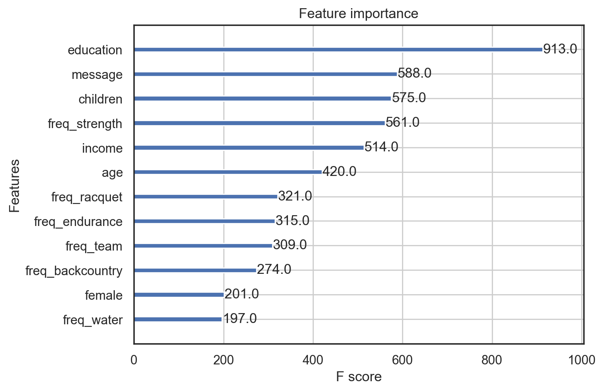
Questions
1. For each customer determine the message (i.e., endurance, strength, water, team, backcountry, racquet, or no-message) predicted to lead to the highest probability of purchase.
To determine the message that will lead to the highest probability of purchase for each customer, we can fit the model using only the data for each categorical level in our model and use the fitted model to create predictions for all of the data. Once we have predictions on all of the data for each message, we can select the message with the highest predicted value for the record.
# Create a training copy of the data where 'training' equals 1
pentathlon_nptb_train = pentathlon_nptb[pentathlon_nptb['training'] == 1].copy()
# Define the 7 different "message" values
message_values = ['team', 'backcountry', 'endurance', 'water', 'racquet', 'strength', 'control']
for value in message_values:
# Filter the training set for the current message
current_train = pentathlon_nptb_train[pentathlon_nptb_train['message'] == value]
# Create X_train and y_train for the current message
X_train = current_train[evar]
y_train = current_train[rvar]
# Fit the model to the training data for the current message
best_xgb.fit(X_train, y_train)
# Predict probabilities for the entire dataset (you may want to adjust this based on your requirements)
pentathlon_nptb[f'p_{value}_xgb'] = best_xgb.predict_proba(pentathlon_nptb[evar])[:, 1]/var/folders/28/cfl1_cfs3bb536qkz8wkys_w0000gn/T/ipykernel_31928/1516221055.py:19: PerformanceWarning:
DataFrame is highly fragmented. This is usually the result of calling `frame.insert` many times, which has poor performance. Consider joining all columns at once using pd.concat(axis=1) instead. To get a de-fragmented frame, use `newframe = frame.copy()`
/var/folders/28/cfl1_cfs3bb536qkz8wkys_w0000gn/T/ipykernel_31928/1516221055.py:19: PerformanceWarning:
DataFrame is highly fragmented. This is usually the result of calling `frame.insert` many times, which has poor performance. Consider joining all columns at once using pd.concat(axis=1) instead. To get a de-fragmented frame, use `newframe = frame.copy()`
/var/folders/28/cfl1_cfs3bb536qkz8wkys_w0000gn/T/ipykernel_31928/1516221055.py:19: PerformanceWarning:
DataFrame is highly fragmented. This is usually the result of calling `frame.insert` many times, which has poor performance. Consider joining all columns at once using pd.concat(axis=1) instead. To get a de-fragmented frame, use `newframe = frame.copy()`
/var/folders/28/cfl1_cfs3bb536qkz8wkys_w0000gn/T/ipykernel_31928/1516221055.py:19: PerformanceWarning:
DataFrame is highly fragmented. This is usually the result of calling `frame.insert` many times, which has poor performance. Consider joining all columns at once using pd.concat(axis=1) instead. To get a de-fragmented frame, use `newframe = frame.copy()`
/var/folders/28/cfl1_cfs3bb536qkz8wkys_w0000gn/T/ipykernel_31928/1516221055.py:19: PerformanceWarning:
DataFrame is highly fragmented. This is usually the result of calling `frame.insert` many times, which has poor performance. Consider joining all columns at once using pd.concat(axis=1) instead. To get a de-fragmented frame, use `newframe = frame.copy()`
/var/folders/28/cfl1_cfs3bb536qkz8wkys_w0000gn/T/ipykernel_31928/1516221055.py:19: PerformanceWarning:
DataFrame is highly fragmented. This is usually the result of calling `frame.insert` many times, which has poor performance. Consider joining all columns at once using pd.concat(axis=1) instead. To get a de-fragmented frame, use `newframe = frame.copy()`
repl = {
"p_control_xgb": "control",
"p_endurance_xgb": "endurance",
"p_backcountry_xgb": "backcountry",
"p_racquet_xgb": "racquet",
"p_strength_xgb": "strength",
"p_team_xgb": "team",
"p_water_xgb": "water"}predictions_xgb = [
"p_control_xgb",
"p_endurance_xgb",
"p_backcountry_xgb",
"p_racquet_xgb",
"p_strength_xgb",
"p_team_xgb",
"p_water_xgb"]pentathlon_nptb['message_xgb'] = (
pentathlon_nptb[predictions_xgb]
.idxmax(axis=1)
.map(repl)
)/var/folders/28/cfl1_cfs3bb536qkz8wkys_w0000gn/T/ipykernel_31928/3215817490.py:1: PerformanceWarning:
DataFrame is highly fragmented. This is usually the result of calling `frame.insert` many times, which has poor performance. Consider joining all columns at once using pd.concat(axis=1) instead. To get a de-fragmented frame, use `newframe = frame.copy()`
pd.crosstab(index=pentathlon_nptb.message_xgb, columns="count").apply(rsm.format_nr).sort_values("count", ascending=True)| col_0 | count |
|---|---|
| message_xgb | |
| endurance | 179,225 |
| backcountry | 56,966 |
| control | 58,865 |
| water | 64,209 |
| racquet | 70,013 |
| team | 71,928 |
| strength | 98,794 |
2. For each message, The percentage of customers for whom that message or no-message maximizes their probability of purchase:
We can see from the plot that endurance messages most often maximizes the cusomer’s probability of purchase. After enducance, strength messages are the second most reported value that maximizes purchase probabilities. Surprisingly, despite team, raquet, and water being the next best message groups, none of the remaining messages seem to provide a meaningful improvement over sending no message at all.
message_percentages= pentathlon_nptb['message_xgb'].value_counts(normalize=True)
message_percentagesmessage_xgb
endurance 0.298708
strength 0.164657
team 0.119880
racquet 0.116688
water 0.107015
control 0.098108
backcountry 0.094943
Name: proportion, dtype: float64# Plotting
plt.figure(figsize=(10, 6))
message_percentages.plot(kind='bar')
plt.ylabel('Percentage of Customers')
plt.xlabel('Message Type')
plt.title('Percentage of Customers for Each Message Value')
plt.xticks(rotation=45) # Rotate labels to make them readable
plt.show()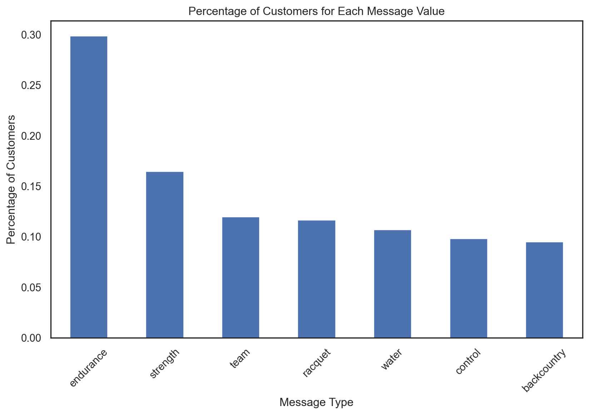
For each customer, determine the message (i.e., endurance, strength, water, team, backcountry, racquet, or no-message) predicted to lead to the highest expected profit (COGS is 60%).
The message returning the highest profit is Endurance
To predict order size we tuned a new xgb model to the data and regressed the likely order size for each record. We then used the predicted order size to calculate the expected profit for each record. We calculated the expected profit by multiplying the predicted order size by the probability of purchase and subtracting the cost of goods sold from the result.
rvar_os = "total_os"
evar = ['message',
'age',
'female',
'income',
'education',
'children',
'freq_endurance',
'freq_strength',
'freq_water',
'freq_team',
'freq_backcountry',
'freq_racquet']# Create X_train, X_test, y_train, y_test using "training" column
X_train = pentathlon_nptb.loc[pentathlon_nptb['training'] == 1, evar]
X_test = pentathlon_nptb.loc[pentathlon_nptb['training'] == 0, evar]
y_train_os = pentathlon_nptb.loc[pentathlon_nptb['training'] == 1, 'total_os']
y_test_os = pentathlon_nptb.loc[pentathlon_nptb['training'] == 0, 'total_os']from xgboost import XGBRegressor
# Define the parameter grid to be used in GridSearchCV
param_grid = {
'learning_rate': [0.1, 0.01, 0.001],
'n_estimators': [100],
'max_depth': [3, 6, 10] # Depths from 3 to 10
}
# Initialize the XGBRegressor
xgb_os = XGBRegressor(use_label_encoder=False, eval_metric='rmse', enable_categorical=True)
# Initialize GridSearchCV with a scoring metric suitable for regression
xgb_tuned_os = GridSearchCV(estimator=xgb_os, param_grid=param_grid, scoring='neg_root_mean_squared_error', cv=5, verbose=5)
# Assuming X_train and y_train are defined
# Fit the model
xgb_tuned_os.fit(X_train, y_train_os)Fitting 5 folds for each of 9 candidates, totalling 45 fits
[CV 1/5] END learning_rate=0.1, max_depth=3, n_estimators=100;, score=-12.399 total time= 0.4s
[CV 2/5] END learning_rate=0.1, max_depth=3, n_estimators=100;, score=-12.532 total time= 0.4s
[CV 3/5] END learning_rate=0.1, max_depth=3, n_estimators=100;, score=-12.659 total time= 0.4s
[CV 4/5] END learning_rate=0.1, max_depth=3, n_estimators=100;, score=-12.504 total time= 0.4s
[CV 5/5] END learning_rate=0.1, max_depth=3, n_estimators=100;, score=-11.961 total time= 0.5s
[CV 1/5] END learning_rate=0.1, max_depth=6, n_estimators=100;, score=-12.700 total time= 0.6s
[CV 2/5] END learning_rate=0.1, max_depth=6, n_estimators=100;, score=-12.639 total time= 0.7s
[CV 3/5] END learning_rate=0.1, max_depth=6, n_estimators=100;, score=-12.807 total time= 0.7s
[CV 4/5] END learning_rate=0.1, max_depth=6, n_estimators=100;, score=-12.660 total time= 0.7s
[CV 5/5] END learning_rate=0.1, max_depth=6, n_estimators=100;, score=-12.062 total time= 0.7s
[CV 1/5] END learning_rate=0.1, max_depth=10, n_estimators=100;, score=-13.273 total time= 1.1s
[CV 2/5] END learning_rate=0.1, max_depth=10, n_estimators=100;, score=-13.104 total time= 1.2s
[CV 3/5] END learning_rate=0.1, max_depth=10, n_estimators=100;, score=-13.254 total time= 1.1s
[CV 4/5] END learning_rate=0.1, max_depth=10, n_estimators=100;, score=-12.978 total time= 1.3s
[CV 5/5] END learning_rate=0.1, max_depth=10, n_estimators=100;, score=-12.550 total time= 1.2s
[CV 1/5] END learning_rate=0.01, max_depth=3, n_estimators=100;, score=-12.550 total time= 0.4s
[CV 2/5] END learning_rate=0.01, max_depth=3, n_estimators=100;, score=-12.691 total time= 0.4s
[CV 3/5] END learning_rate=0.01, max_depth=3, n_estimators=100;, score=-12.816 total time= 0.4s
[CV 4/5] END learning_rate=0.01, max_depth=3, n_estimators=100;, score=-12.654 total time= 0.4s
[CV 5/5] END learning_rate=0.01, max_depth=3, n_estimators=100;, score=-12.135 total time= 0.4s
[CV 1/5] END learning_rate=0.01, max_depth=6, n_estimators=100;, score=-12.568 total time= 0.8s
[CV 2/5] END learning_rate=0.01, max_depth=6, n_estimators=100;, score=-12.663 total time= 0.7s
[CV 3/5] END learning_rate=0.01, max_depth=6, n_estimators=100;, score=-12.795 total time= 0.9s
[CV 4/5] END learning_rate=0.01, max_depth=6, n_estimators=100;, score=-12.622 total time= 0.8s
[CV 5/5] END learning_rate=0.01, max_depth=6, n_estimators=100;, score=-12.095 total time= 0.8s
[CV 1/5] END learning_rate=0.01, max_depth=10, n_estimators=100;, score=-12.658 total time= 1.5s
[CV 2/5] END learning_rate=0.01, max_depth=10, n_estimators=100;, score=-12.755 total time= 1.5s
[CV 3/5] END learning_rate=0.01, max_depth=10, n_estimators=100;, score=-12.850 total time= 1.4s
[CV 4/5] END learning_rate=0.01, max_depth=10, n_estimators=100;, score=-12.661 total time= 1.4s
[CV 5/5] END learning_rate=0.01, max_depth=10, n_estimators=100;, score=-12.113 total time= 1.5s
[CV 1/5] END learning_rate=0.001, max_depth=3, n_estimators=100;, score=-12.971 total time= 0.4s
[CV 2/5] END learning_rate=0.001, max_depth=3, n_estimators=100;, score=-13.065 total time= 0.4s
[CV 3/5] END learning_rate=0.001, max_depth=3, n_estimators=100;, score=-13.206 total time= 0.4s
[CV 4/5] END learning_rate=0.001, max_depth=3, n_estimators=100;, score=-13.016 total time= 0.4s
[CV 5/5] END learning_rate=0.001, max_depth=3, n_estimators=100;, score=-12.524 total time= 0.5s
[CV 1/5] END learning_rate=0.001, max_depth=6, n_estimators=100;, score=-12.966 total time= 0.8s
[CV 2/5] END learning_rate=0.001, max_depth=6, n_estimators=100;, score=-13.058 total time= 0.8s
[CV 3/5] END learning_rate=0.001, max_depth=6, n_estimators=100;, score=-13.195 total time= 0.7s
[CV 4/5] END learning_rate=0.001, max_depth=6, n_estimators=100;, score=-13.005 total time= 0.7s
[CV 5/5] END learning_rate=0.001, max_depth=6, n_estimators=100;, score=-12.511 total time= 0.8s
[CV 1/5] END learning_rate=0.001, max_depth=10, n_estimators=100;, score=-12.957 total time= 1.6s
[CV 2/5] END learning_rate=0.001, max_depth=10, n_estimators=100;, score=-13.059 total time= 1.6s
[CV 3/5] END learning_rate=0.001, max_depth=10, n_estimators=100;, score=-13.197 total time= 1.5s
[CV 4/5] END learning_rate=0.001, max_depth=10, n_estimators=100;, score=-13.001 total time= 1.8s
[CV 5/5] END learning_rate=0.001, max_depth=10, n_estimators=100;, score=-12.500 total time= 1.6sGridSearchCV(cv=5,
estimator=XGBRegressor(base_score=None, booster=None,
callbacks=None, colsample_bylevel=None,
colsample_bynode=None,
colsample_bytree=None, device=None,
early_stopping_rounds=None,
enable_categorical=True, eval_metric='rmse',
feature_types=None, gamma=None,
grow_policy=None, importance_type=None,
interaction_constraints=None,
learning_rate=None,...
max_cat_to_onehot=None, max_delta_step=None,
max_depth=None, max_leaves=None,
min_child_weight=None, missing=nan,
monotone_constraints=None,
multi_strategy=None, n_estimators=None,
n_jobs=None, num_parallel_tree=None,
random_state=None, ...),
param_grid={'learning_rate': [0.1, 0.01, 0.001],
'max_depth': [3, 6, 10], 'n_estimators': [100]},
scoring='neg_root_mean_squared_error', verbose=5)In a Jupyter environment, please rerun this cell to show the HTML representation or trust the notebook. On GitHub, the HTML representation is unable to render, please try loading this page with nbviewer.org.
GridSearchCV(cv=5,
estimator=XGBRegressor(base_score=None, booster=None,
callbacks=None, colsample_bylevel=None,
colsample_bynode=None,
colsample_bytree=None, device=None,
early_stopping_rounds=None,
enable_categorical=True, eval_metric='rmse',
feature_types=None, gamma=None,
grow_policy=None, importance_type=None,
interaction_constraints=None,
learning_rate=None,...
max_cat_to_onehot=None, max_delta_step=None,
max_depth=None, max_leaves=None,
min_child_weight=None, missing=nan,
monotone_constraints=None,
multi_strategy=None, n_estimators=None,
n_jobs=None, num_parallel_tree=None,
random_state=None, ...),
param_grid={'learning_rate': [0.1, 0.01, 0.001],
'max_depth': [3, 6, 10], 'n_estimators': [100]},
scoring='neg_root_mean_squared_error', verbose=5)XGBRegressor(base_score=None, booster=None, callbacks=None,
colsample_bylevel=None, colsample_bynode=None,
colsample_bytree=None, device=None, early_stopping_rounds=None,
enable_categorical=True, eval_metric='rmse', feature_types=None,
gamma=None, grow_policy=None, importance_type=None,
interaction_constraints=None, learning_rate=None, max_bin=None,
max_cat_threshold=None, max_cat_to_onehot=None,
max_delta_step=None, max_depth=None, max_leaves=None,
min_child_weight=None, missing=nan, monotone_constraints=None,
multi_strategy=None, n_estimators=None, n_jobs=None,
num_parallel_tree=None, random_state=None, ...)XGBRegressor(base_score=None, booster=None, callbacks=None,
colsample_bylevel=None, colsample_bynode=None,
colsample_bytree=None, device=None, early_stopping_rounds=None,
enable_categorical=True, eval_metric='rmse', feature_types=None,
gamma=None, grow_policy=None, importance_type=None,
interaction_constraints=None, learning_rate=None, max_bin=None,
max_cat_threshold=None, max_cat_to_onehot=None,
max_delta_step=None, max_depth=None, max_leaves=None,
min_child_weight=None, missing=nan, monotone_constraints=None,
multi_strategy=None, n_estimators=None, n_jobs=None,
num_parallel_tree=None, random_state=None, ...)# After fitting, get the best parameters and retrain the model
best_params_os = xgb_tuned.best_params_
best_xgb_os = XGBRegressor(**best_params_os, use_label_encoder=False, eval_metric="rmse", enable_categorical=True)
# Fit the new model to training data
best_xgb_os.fit(X_train, y_train_os)XGBRegressor(base_score=None, booster=None, callbacks=None,
colsample_bylevel=None, colsample_bynode=None,
colsample_bytree=None, device=None, early_stopping_rounds=None,
enable_categorical=True, eval_metric='rmse', feature_types=None,
gamma=None, grow_policy=None, importance_type=None,
interaction_constraints=None, learning_rate=0.1, max_bin=None,
max_cat_threshold=None, max_cat_to_onehot=None,
max_delta_step=None, max_depth=6, max_leaves=None,
min_child_weight=None, missing=nan, monotone_constraints=None,
multi_strategy=None, n_estimators=100, n_jobs=None,
num_parallel_tree=None, random_state=None, ...)In a Jupyter environment, please rerun this cell to show the HTML representation or trust the notebook. On GitHub, the HTML representation is unable to render, please try loading this page with nbviewer.org.
XGBRegressor(base_score=None, booster=None, callbacks=None,
colsample_bylevel=None, colsample_bynode=None,
colsample_bytree=None, device=None, early_stopping_rounds=None,
enable_categorical=True, eval_metric='rmse', feature_types=None,
gamma=None, grow_policy=None, importance_type=None,
interaction_constraints=None, learning_rate=0.1, max_bin=None,
max_cat_threshold=None, max_cat_to_onehot=None,
max_delta_step=None, max_depth=6, max_leaves=None,
min_child_weight=None, missing=nan, monotone_constraints=None,
multi_strategy=None, n_estimators=100, n_jobs=None,
num_parallel_tree=None, random_state=None, ...)# Create a training copy of the data where 'training' equals 1
pentathlon_nptb_train = pentathlon_nptb[pentathlon_nptb['training'] == 1].copy()
# Define the 7 different "message" values
message_values = ['team', 'backcountry', 'endurance', 'water', 'racquet', 'strength', 'control']
for value in message_values:
# Filter the training set for the current message
current_train = pentathlon_nptb_train[pentathlon_nptb_train['message'] == value]
# Create X_train and y_train for the current message
X_train = current_train[evar]
y_train = current_train[rvar_os]
# Fit the model to the training data for the current message
best_xgb_os.fit(X_train, y_train)
# Predict orer size for the entire dataset
pentathlon_nptb[f'os_{value}_xgb'] = best_xgb_os.predict(pentathlon_nptb[evar]).round(0)/var/folders/28/cfl1_cfs3bb536qkz8wkys_w0000gn/T/ipykernel_31928/777574624.py:19: PerformanceWarning:
DataFrame is highly fragmented. This is usually the result of calling `frame.insert` many times, which has poor performance. Consider joining all columns at once using pd.concat(axis=1) instead. To get a de-fragmented frame, use `newframe = frame.copy()`
/var/folders/28/cfl1_cfs3bb536qkz8wkys_w0000gn/T/ipykernel_31928/777574624.py:19: PerformanceWarning:
DataFrame is highly fragmented. This is usually the result of calling `frame.insert` many times, which has poor performance. Consider joining all columns at once using pd.concat(axis=1) instead. To get a de-fragmented frame, use `newframe = frame.copy()`
/var/folders/28/cfl1_cfs3bb536qkz8wkys_w0000gn/T/ipykernel_31928/777574624.py:19: PerformanceWarning:
DataFrame is highly fragmented. This is usually the result of calling `frame.insert` many times, which has poor performance. Consider joining all columns at once using pd.concat(axis=1) instead. To get a de-fragmented frame, use `newframe = frame.copy()`
/var/folders/28/cfl1_cfs3bb536qkz8wkys_w0000gn/T/ipykernel_31928/777574624.py:19: PerformanceWarning:
DataFrame is highly fragmented. This is usually the result of calling `frame.insert` many times, which has poor performance. Consider joining all columns at once using pd.concat(axis=1) instead. To get a de-fragmented frame, use `newframe = frame.copy()`
/var/folders/28/cfl1_cfs3bb536qkz8wkys_w0000gn/T/ipykernel_31928/777574624.py:19: PerformanceWarning:
DataFrame is highly fragmented. This is usually the result of calling `frame.insert` many times, which has poor performance. Consider joining all columns at once using pd.concat(axis=1) instead. To get a de-fragmented frame, use `newframe = frame.copy()`
/var/folders/28/cfl1_cfs3bb536qkz8wkys_w0000gn/T/ipykernel_31928/777574624.py:19: PerformanceWarning:
DataFrame is highly fragmented. This is usually the result of calling `frame.insert` many times, which has poor performance. Consider joining all columns at once using pd.concat(axis=1) instead. To get a de-fragmented frame, use `newframe = frame.copy()`
/var/folders/28/cfl1_cfs3bb536qkz8wkys_w0000gn/T/ipykernel_31928/777574624.py:19: PerformanceWarning:
DataFrame is highly fragmented. This is usually the result of calling `frame.insert` many times, which has poor performance. Consider joining all columns at once using pd.concat(axis=1) instead. To get a de-fragmented frame, use `newframe = frame.copy()`
values = ['team', 'backcountry', 'endurance', 'water', 'racquet', 'strength', 'control']
Profit_margin = 1-0.6
for value in values:
pentathlon_nptb[f'ep_{value}_xgb'] = pentathlon_nptb[f'p_{value}_xgb'] * pentathlon_nptb[f'os_{value}_xgb'] * Profit_margin/var/folders/28/cfl1_cfs3bb536qkz8wkys_w0000gn/T/ipykernel_31928/1144112266.py:6: PerformanceWarning:
DataFrame is highly fragmented. This is usually the result of calling `frame.insert` many times, which has poor performance. Consider joining all columns at once using pd.concat(axis=1) instead. To get a de-fragmented frame, use `newframe = frame.copy()`
/var/folders/28/cfl1_cfs3bb536qkz8wkys_w0000gn/T/ipykernel_31928/1144112266.py:6: PerformanceWarning:
DataFrame is highly fragmented. This is usually the result of calling `frame.insert` many times, which has poor performance. Consider joining all columns at once using pd.concat(axis=1) instead. To get a de-fragmented frame, use `newframe = frame.copy()`
/var/folders/28/cfl1_cfs3bb536qkz8wkys_w0000gn/T/ipykernel_31928/1144112266.py:6: PerformanceWarning:
DataFrame is highly fragmented. This is usually the result of calling `frame.insert` many times, which has poor performance. Consider joining all columns at once using pd.concat(axis=1) instead. To get a de-fragmented frame, use `newframe = frame.copy()`
/var/folders/28/cfl1_cfs3bb536qkz8wkys_w0000gn/T/ipykernel_31928/1144112266.py:6: PerformanceWarning:
DataFrame is highly fragmented. This is usually the result of calling `frame.insert` many times, which has poor performance. Consider joining all columns at once using pd.concat(axis=1) instead. To get a de-fragmented frame, use `newframe = frame.copy()`
/var/folders/28/cfl1_cfs3bb536qkz8wkys_w0000gn/T/ipykernel_31928/1144112266.py:6: PerformanceWarning:
DataFrame is highly fragmented. This is usually the result of calling `frame.insert` many times, which has poor performance. Consider joining all columns at once using pd.concat(axis=1) instead. To get a de-fragmented frame, use `newframe = frame.copy()`
/var/folders/28/cfl1_cfs3bb536qkz8wkys_w0000gn/T/ipykernel_31928/1144112266.py:6: PerformanceWarning:
DataFrame is highly fragmented. This is usually the result of calling `frame.insert` many times, which has poor performance. Consider joining all columns at once using pd.concat(axis=1) instead. To get a de-fragmented frame, use `newframe = frame.copy()`
/var/folders/28/cfl1_cfs3bb536qkz8wkys_w0000gn/T/ipykernel_31928/1144112266.py:6: PerformanceWarning:
DataFrame is highly fragmented. This is usually the result of calling `frame.insert` many times, which has poor performance. Consider joining all columns at once using pd.concat(axis=1) instead. To get a de-fragmented frame, use `newframe = frame.copy()`
expected_profit_xgb = [
"ep_control_xgb",
"ep_endurance_xgb",
"ep_backcountry_xgb",
"ep_racquet_xgb",
"ep_strength_xgb",
"ep_team_xgb",
"ep_water_xgb"]repl = {"ep_control_xgb": "control", "ep_endurance_xgb": "endurance", "ep_backcountry_xgb": "backcountry", "ep_racquet_xgb": "racquet", "ep_strength_xgb": "strength", "ep_team_xgb": "team", "ep_water_xgb": "water"}
pentathlon_nptb["ep_message_xgb"] = (
pentathlon_nptb[expected_profit_xgb]
.idxmax(axis=1)
.map(repl)
)/var/folders/28/cfl1_cfs3bb536qkz8wkys_w0000gn/T/ipykernel_31928/3163695219.py:2: PerformanceWarning:
DataFrame is highly fragmented. This is usually the result of calling `frame.insert` many times, which has poor performance. Consider joining all columns at once using pd.concat(axis=1) instead. To get a de-fragmented frame, use `newframe = frame.copy()`
# Define a function to look up the profit value based on ep_message_xgb
def get_ep(row):
# Mapping each ep_message_xgb value to the corresponding profit column
mapping = {
'control': 'ep_control_xgb',
'endurance': 'ep_endurance_xgb',
'backcountry': 'ep_backcountry_xgb',
'racquet': 'ep_racquet_xgb',
'strength': 'ep_strength_xgb',
'team': 'ep_team_xgb',
'water': 'ep_water_xgb',
}
# Get the profit column name for the current row's message
profit_col = mapping.get(row['ep_message_xgb'])
# Return the value from the corresponding profit column for this row
if profit_col:
return row[profit_col]
else:
return None
# Apply the function to each row to create a new column with the corresponding profit value
pentathlon_nptb['ep_message_max_p'] = pentathlon_nptb.apply(get_ep, axis=1)/var/folders/28/cfl1_cfs3bb536qkz8wkys_w0000gn/T/ipykernel_31928/1040504524.py:24: PerformanceWarning:
DataFrame is highly fragmented. This is usually the result of calling `frame.insert` many times, which has poor performance. Consider joining all columns at once using pd.concat(axis=1) instead. To get a de-fragmented frame, use `newframe = frame.copy()`
ep_profit = pentathlon_nptb.groupby('ep_message_xgb')['ep_message_max_p'].sum().sort_values(ascending=False).round(2)
ep_profitep_message_xgb
endurance 43977.37
strength 37358.12
water 30991.18
backcountry 26557.67
team 21474.36
racquet 18135.07
control 9657.12
Name: ep_message_max_p, dtype: float64# Histogram of ep_profit
plt.figure(figsize=(10, 6))
ep_profit.plot(kind='bar')
plt.ylabel('Expected Profit by Message')
plt.xlabel('Message Type')
plt.title('Total Profit')
plt.xticks(rotation=45) # Rotate labels to make them readable
plt.show()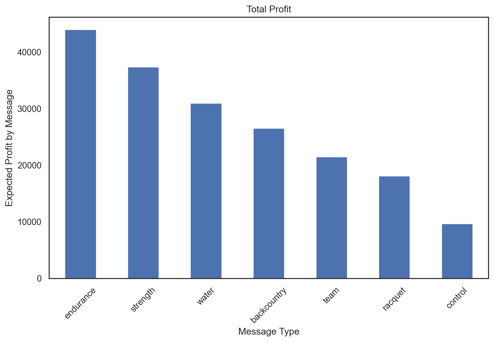
4. Report for each message, i.e., endurance, racket, etc., and no-message, the percentage of customers for whom that (no) message maximizes their expected profit.
Message_max = pentathlon_nptb.ep_message_xgb.value_counts(normalize=True)
Message_maxep_message_xgb
control 0.576705
strength 0.091172
endurance 0.082492
water 0.067795
team 0.066832
backcountry 0.065020
racquet 0.049985
Name: proportion, dtype: float64# Plotting
plt.figure(figsize=(10, 6))
Message_max.plot(kind='bar')
plt.ylabel('Percentage of Customers')
plt.xlabel('Message Type')
plt.title('Percentage of Customers for Each Message Value')
plt.xticks(rotation=45) # Rotate labels to make them readable
plt.show()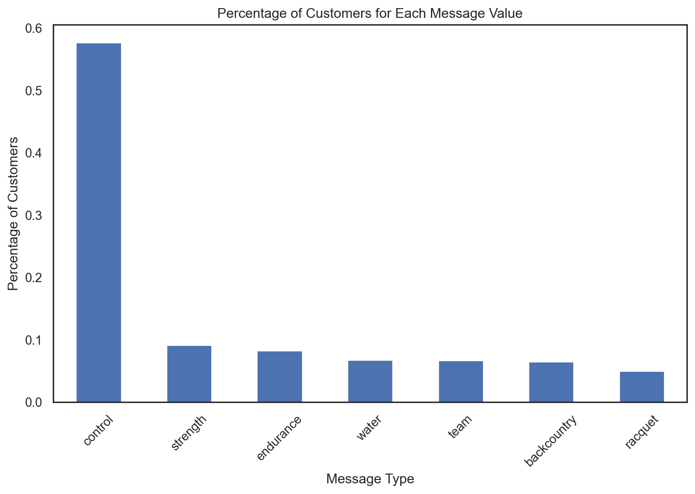
5. The expected profit can we obtain, on average, per customer if we customize the message to each customer
avg_profit_pc = pentathlon_nptb[pentathlon_nptb.training == 0].groupby('ep_message_xgb')['ep_message_max_p'].mean().sort_values(ascending=False).round(2) * Profit_margin
avg_profit_pcep_message_xgb
endurance 0.336
strength 0.284
water 0.280
backcountry 0.264
racquet 0.232
team 0.196
control 0.008
Name: ep_message_max_p, dtype: float64# Histogram of ep_profit
plt.figure(figsize=(10, 6))
avg_profit_pc.plot(kind='bar')
plt.ylabel('Expected Profit Per Customer')
plt.xlabel('Message Type')
plt.title('Average Profit')
plt.xticks(rotation=45) # Rotate labels to make them readable
plt.show()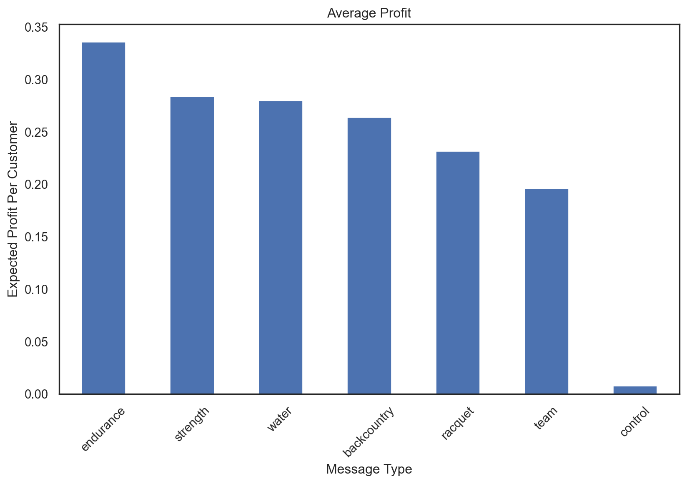
6. The expected profit per e-mailed customer if every customer receives the same message
expected_profit_xgb = [
"ep_control_xgb",
"ep_endurance_xgb",
"ep_backcountry_xgb",
"ep_racquet_xgb",
"ep_strength_xgb",
"ep_team_xgb",
"ep_water_xgb"]
# Expected profit per customer for each message
epp_same_message = pentathlon_nptb[pentathlon_nptb.training == 0][expected_profit_xgb].mean().sort_values(ascending=False) * Profit_margin# Histogram of ep_profit
plt.figure(figsize=(10, 6))
epp_same_message.plot(kind='bar')
plt.ylabel('Expected Profit Per Customer')
plt.xlabel('Message Type')
plt.title('Average Profit')
plt.xticks(rotation=45) # Rotate labels to make them readable
plt.show()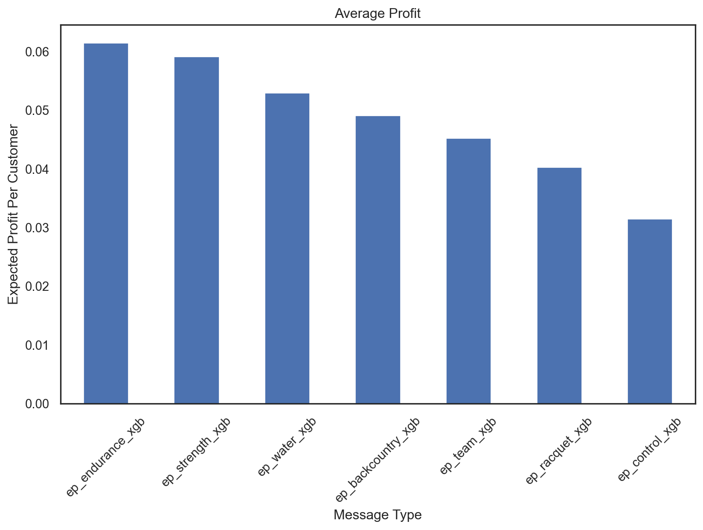
7. The expected profit per e-mailed customer if every customer is assigned randomly to one of the messages or the no-message condition
pentathlon_nptb['ep_random_xgb'] = best_xgb.predict_proba(pentathlon_nptb[evar])[:, 1]
xgb_random_ppc = pentathlon_nptb[pentathlon_nptb.training == 0]['ep_random_xgb'].mean() * Profit_margin
xgb_random_ppc/var/folders/28/cfl1_cfs3bb536qkz8wkys_w0000gn/T/ipykernel_31928/3633768350.py:1: PerformanceWarning:
DataFrame is highly fragmented. This is usually the result of calling `frame.insert` many times, which has poor performance. Consider joining all columns at once using pd.concat(axis=1) instead. To get a de-fragmented frame, use `newframe = frame.copy()`
0.008396312594413757expected_profit_xgb = [
"ep_control_xgb",
"ep_endurance_xgb",
"ep_backcountry_xgb",
"ep_racquet_xgb",
"ep_strength_xgb",
"ep_team_xgb",
"ep_water_xgb",
"ep_random_xgb"]
# Expected profit per customer for each message
epp_same_message = pentathlon_nptb[pentathlon_nptb.training == 0][expected_profit_xgb].mean().sort_values(ascending=False)# Histogram of ep_profit
plt.figure(figsize=(10, 6))
epp_same_message.plot(kind='bar')
plt.ylabel('Expected Profit Per Customer')
plt.xlabel('Message Type')
plt.title('Average Profit')
plt.xticks(rotation=45) # Rotate labels to make them readable
plt.show()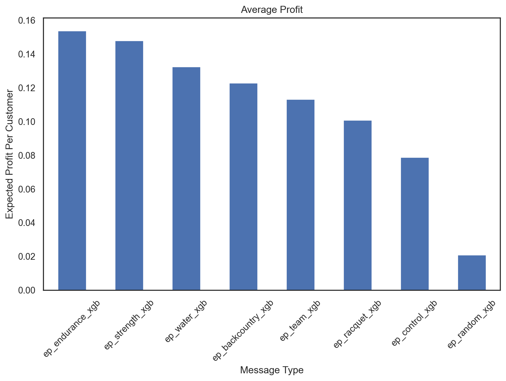
8. For the typical promotional e-mail blast to 5,000,000 customers, The improvement (in percent and in total Euros) could Pentathlon achieve by customizing the message (or no-message) to each customer:
pentathlon_nptb["ep_max_xgb"] = pentathlon_nptb[expected_profit_xgb].max(axis=1)
pentathlon_nptb["ep_max_xgb"].mean()/var/folders/28/cfl1_cfs3bb536qkz8wkys_w0000gn/T/ipykernel_31928/1479503728.py:1: PerformanceWarning:
DataFrame is highly fragmented. This is usually the result of calling `frame.insert` many times, which has poor performance. Consider joining all columns at once using pd.concat(axis=1) instead. To get a de-fragmented frame, use `newframe = frame.copy()`
0.31611574# Profit where each customer is assigned to the message with the highest expected profit
profit_xgb = pentathlon_nptb.loc[pentathlon_nptb.training == 0, "ep_max_xgb"].agg("mean") * 5000000
profit_xgb 1511183.9771270752# Profit where each customer is sent to a random message
random_profit_xgb = xgb_random_ppc * 5000000
random_profit_xgb41981.56297206879# expected profit where no-message is sent (control)
pentathlon_nptb["ep_control_xgb"]
# expected profit per customer where no-message is sent (control)
control_profit_per_customer = pentathlon_nptb.loc[pentathlon_nptb.training == 0, "ep_control_xgb"].mean()
control_profit_per_customer0.078689866# Profit where no message is sent
control_profit_xgb = control_profit_per_customer * 5000000
control_profit_xgb393449.3288397789profit_improvement_xgb = profit_xgb - control_profit_xgb
profit_improvement_xgb1117734.6482872963profits_dct = {
"Customize Message": profit_xgb,
"No Message Sent": control_profit_nn,
"Randomly Assign": random_profit_xgb,
}
import seaborn as sns
import matplotlib.pyplot as plt
# Convert dictionary to DataFrame
df = pd.DataFrame(list(profits_dct.items()), columns=['Model', 'Profit'])
plt.figure(figsize=(10, 5))
# Plot
sns.set(style="whitegrid")
ax = sns.barplot(x="Model", y="Profit", data=df, palette="viridis")
# Annotations
for index, row in df.iterrows():
ax.text(index, row.Profit, f'${row.Profit:.2f}', ha='center')
# Set labels and title
ax.set_xlabel("Model Type", fontdict={'family': 'serif', 'color': 'black', 'size': 12})
ax.set_ylabel("Profit", fontdict={'family': 'serif', 'color': 'black', 'size': 12})
ax.set_title("Profit by Model", fontdict={'family': 'serif', 'color': 'black', 'size': 15})
plt.xticks(rotation=45)
plt.show()/var/folders/28/cfl1_cfs3bb536qkz8wkys_w0000gn/T/ipykernel_31928/1574157434.py:17: FutureWarning:
Passing `palette` without assigning `hue` is deprecated and will be removed in v0.14.0. Assign the `x` variable to `hue` and set `legend=False` for the same effect.
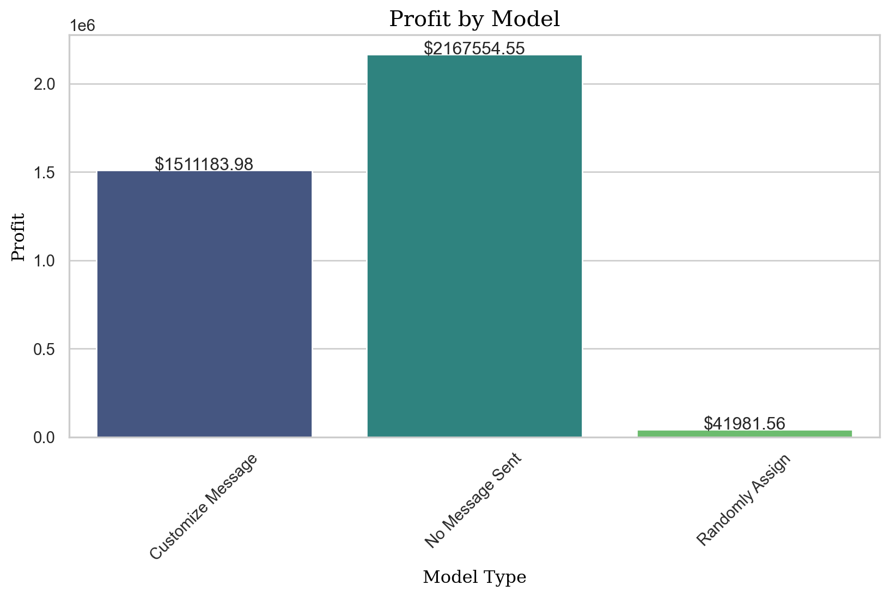
Improvement Profit for 4 models
mod_perf = pd.DataFrame({
"model": ["logit", "nn", "rf", "xgb"],
"profit": [profit_improvement_lr, profit_improvement_nn, profit_improvement_rf, profit_improvement_xgb]
})
mod_perf| model | profit | |
|---|---|---|
| 0 | logit | 1.238407e+06 |
| 1 | nn | 1.262522e+06 |
| 2 | rf | 2.510230e+06 |
| 3 | xgb | 1.117735e+06 |
profits_dct = {
"Logit": profit_improvement_lr,
"Neural Network": profit_improvement_nn,
"Random Forest" : profit_improvement_rf,
"XGBoost": profit_improvement_xgb
}
import seaborn as sns
import matplotlib.pyplot as plt
# Convert dictionary to DataFrame
df = pd.DataFrame(list(profits_dct.items()), columns=['Model', 'Profit'])
plt.figure(figsize=(10, 5))
# Plot
sns.set(style="whitegrid")
ax = sns.barplot(x="Model", y="Profit", data=df, palette="viridis")
# Annotations
for index, row in df.iterrows():
ax.text(index, row.Profit, f'${row.Profit:.2f}', ha='center')
# Set labels and title
ax.set_xlabel("Model Type", fontdict={'family': 'serif', 'color': 'black', 'size': 12})
ax.set_ylabel("Profit", fontdict={'family': 'serif', 'color': 'black', 'size': 12})
ax.set_title("Profit Improvement by Model", fontdict={'family': 'serif', 'color': 'black', 'size': 15})
plt.xticks(rotation=45)
plt.show()/var/folders/28/cfl1_cfs3bb536qkz8wkys_w0000gn/T/ipykernel_31928/2950013552.py:18: FutureWarning:
Passing `palette` without assigning `hue` is deprecated and will be removed in v0.14.0. Assign the `x` variable to `hue` and set `legend=False` for the same effect.
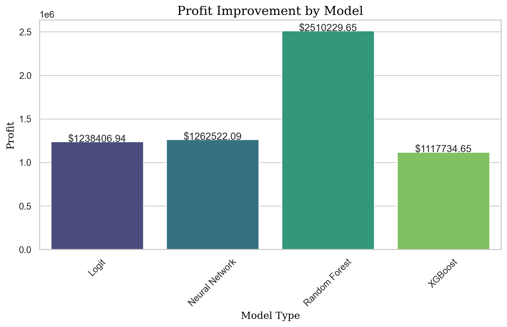
According to the chart, Random Forest outperforms the other models in terms of profit improvement but takes more than 2 hours to tune the model.
- Weaknesses of the Random Forest Model:
Computational Complexity: Random Forest can be computationally intensive, especially as the number of trees and the depth of each tree increase. This is likely the cause of the long tunning time. The complexity grows with the size of the dataset, the number of features, and the model parameters.
Scalability: Because of the computational cost, scaling Random Forest to very large datasets or high-dimensional data can be challenging and might require significant computational resources.
Model Interpretability: While not as complex as some other models like neural networks, Random Forests are still considered a “black box” compared to simpler models like Logistic Regression. This can make it difficult to understand the decision-making process of the model and to explain individual predictions.
Tuning Required: Random Forest models have several hyperparameters (like the number of trees, max depth, min samples split, etc.) that can greatly influence performance. Finding the optimal settings can be time-consuming and require a lot of trial and error or automated search techniques like grid search or random search, which can further increase the computational burden.
- Suggested Improvement:
Model Simplification: We should simplying the model by reducing the number of trees or the depth of each tree, which might reduce training time at the cost of some accuracy.
Feature Selection: Reducing the number of features through feature selection can significantly decrease training time and sometimes even improve model performance by eliminating noise.
Incremental Learning: Some models allow for incremental learning, where the model is trained on chunks of the dataset sequentially, which can reduce memory consumption and potentially training time.